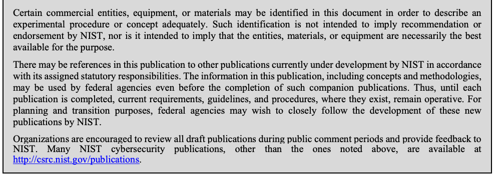
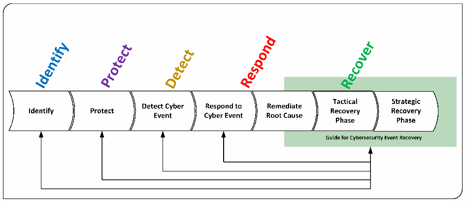
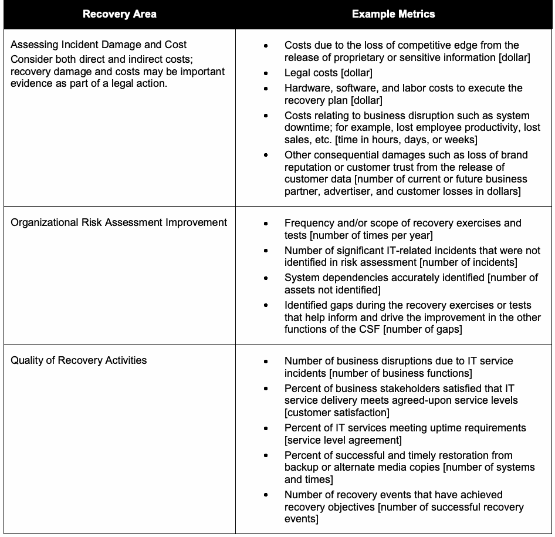
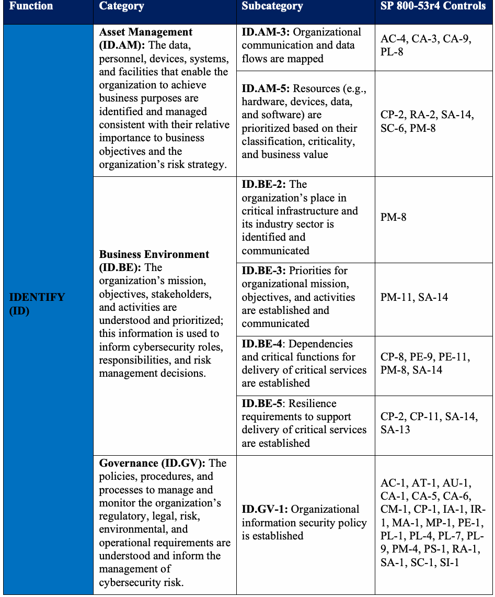
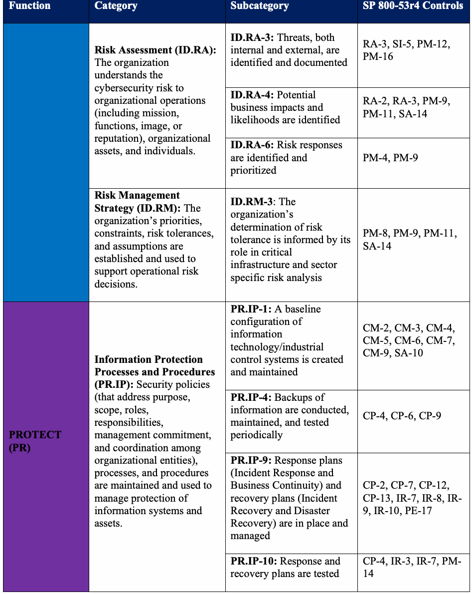
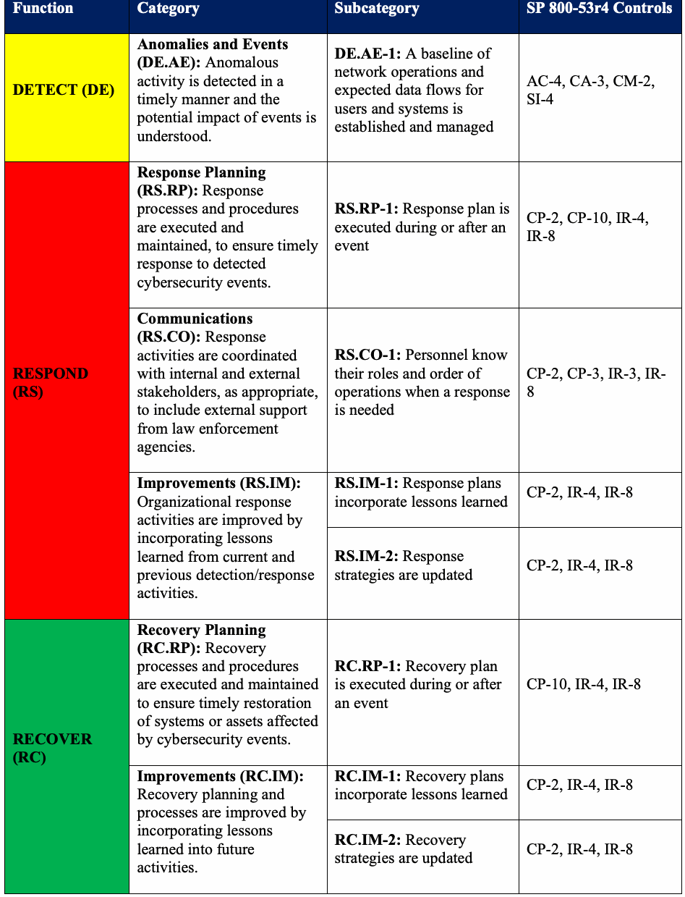
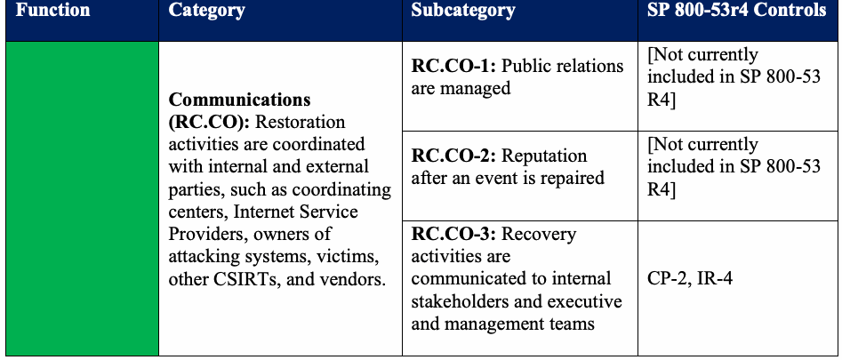

NIST Special Publication · PDF 原文抽出
Guide for Cybersecurity Event Recovery
サイバーセキュリティ事象からの復旧ガイド
NIST SP 800-184（Guide for Cybersecurity Event Recovery）の英文と日本語訳を段落ごとに並べた閲覧用ページです。サイバーセキュリティ事象からの迅速な復旧と影響軽減に向け、復旧計画の策定、資源の優先順位付け、演習、継続的な改善に関する戦術的・戦略的指針を示します。 翻訳は有志による非公式のもので、NIST および米国商務省が作成・承認・推奨したものではありません。要件の確認にはNIST の正式版 PDFを参照してください。
PDF から抽出した原文は原本との照合待ちです。
本文の数式はLaTeXの構造からKaTeXで表示しています。
NIST Special Publication 800-184
NIST特別刊行物800-184
未レビュー訳Guide for
ガイド：
未レビュー訳Cybersecurity Event Recovery
サイバーセキュリティ事象からの復旧
未レビュー訳Michael Bartock Jeffrey Cichonski Murugiah Souppaya Matthew Smith Greg Witte Karen Scarfone
Michael Bartock、Jeffrey Cichonski、Murugiah Souppaya、Matthew Smith、Greg Witte、Karen Scarfone
未レビュー訳This publication is available free of charge from: https://doi.org/10.6028/NIST.SP.800-184
本刊行物は次から無料で入手できます：https://doi.org/10.6028/NIST.SP.800-184
未レビュー訳C O M P U T E R S E C U R I T Y
コンピュータセキュリティ
［NIST のロゴ。公的な標章のため、この非公式サイトには掲載していない。原本 PDF を参照。］
NIST Special Publication 800-184
NIST特別刊行物800-184
未レビュー訳Guide for
ガイド：
未レビュー訳Cybersecurity Event Recovery
サイバーセキュリティ事象からの復旧
未レビュー訳Michael Bartock
Michael Bartock
未レビュー訳Jeffrey Cichonski
Jeffrey Cichonski
未レビュー訳Murugiah Souppaya
Murugiah Souppaya
未レビュー訳Applied Cybersecurity Division
応用サイバーセキュリティ部門
未レビュー訳Computer Security Division Information Technology Laboratory
コンピュータセキュリティ部門、情報技術研究所
未レビュー訳Information Technology Laboratory
情報技術研究所
未レビュー訳Matthew Smith
Matthew Smith
未レビュー訳Karen Scarfone
Karen Scarfone
未レビュー訳Greg Witte
Greg Witte
未レビュー訳Scarfone Cybersecurity
Scarfone Cybersecurity
未レビュー訳G2, Inc.
G2, Inc.
未レビュー訳Clifton, VA
バージニア州クリフトン
未レビュー訳Annapolis Junction, MD
メリーランド州アナポリス・ジャンクション
未レビュー訳This publication is available free of charge from: https://doi.org/10.6028/NIST.SP.800-184
本刊行物は次から無料で入手できます：https://doi.org/10.6028/NIST.SP.800-184
未レビュー訳December 2016
2016年12月
未レビュー訳U.S. Department of Commerce Penny Pritzker, Secretary
米国商務省 ペニー・プリツカー長官
未レビュー訳National Institute of Standards and Technology
米国国立標準技術研究所
未レビュー訳Willie May, Under Secretary of Commerce for Standards and Technology and Director
ウィリー・メイ、商務次官（標準技術担当）兼所長
未レビュー訳Authority
権限
未レビュー訳This publication has been developed by NIST in accordance with its statutory responsibilities under the Federal Information Security Modernization Act (FISMA) of 2014, 44 U.S.C. § 3551 et seq., Public Law (P.L.) 113-283. NIST is responsible for developing information security standards and guidelines, including minimum requirements for federal information systems, but such standards and guidelines shall not apply to national security systems without the express approval of appropriate federal officials exercising policy authority over such systems. This guideline is consistent with the requirements of the Office of Management and Budget (OMB) Circular A-130.
本刊行物は、2014年連邦情報セキュリティ近代化法（FISMA）（合衆国法典第44編第3551条以下、Public Law（P.L.）113-283）に基づく法定責務に従ってNISTが作成した。NISTは、連邦情報システムの最低要件を含む情報セキュリティ標準およびガイドラインを策定する責任を負う。ただし、適切な政策権限を持つ連邦当局者の明示的な承認がない限り、これらの標準およびガイドラインは国家安全保障システムには適用されない。本ガイドラインは、行政管理予算局（OMB）通達A-130の要件に準拠する。
未レビュー訳Nothing in this publication should be taken to contradict the standards and guidelines made mandatory and binding on federal agencies by the Secretary of Commerce under statutory authority. Nor should these guidelines be interpreted as altering or superseding the existing authorities of the Secretary of Commerce, Director of the OMB, or any other federal official. This publication may be used by nongovernmental organizations on a voluntary basis and is not subject to copyright in the United States. Attribution would, however, be appreciated by NIST.
本刊行物のいかなる記述も、法定権限に基づき商務長官が連邦機関に義務付け、拘束力を持たせた標準およびガイドラインに反するものと解釈してはならない。また、本ガイドラインを、商務長官、OMB長官またはその他の連邦当局者が持つ既存の権限を変更または置き換えるものと解釈してはならない。本刊行物は政府機関以外の組織も任意で利用でき、米国内では著作権の対象ではない。ただし、NISTは出典の明記を歓迎する。
未レビュー訳National Institute of Standards and Technology Special Publication 800-184 Natl. Inst. Stand. Technol. Spec. Publ. 800-184, 53 pages (December 2016) CODEN: NSPUE2
米国国立標準技術研究所 特別刊行物800-184。米国国立標準技術研究所 特別刊行物800-184、全53ページ（2016年12月）、CODEN: NSPUE2。
未レビュー訳This publication is available free of charge from: https://doi.org/10.6028/NIST.SP.800-184
本刊行物は次から無料で入手できます：https://doi.org/10.6028/NIST.SP.800-184
未レビュー訳原本PDFの抜粋画像

Comments on this publication may be submitted to: National Institute of Standards and Technology Attn: Computer Security Division, Information Technology Laboratory 100 Bureau Drive (Mail Stop 8930) Gaithersburg, MD 20899-8930 Email: csf-recover@nist.gov All comments are subject to release under the Freedom of Information Act (FOIA).
本刊行物へのコメントは、次の宛先に提出できる。National Institute of Standards and Technology、宛先：Computer Security Division, Information Technology Laboratory、100 Bureau Drive (Mail Stop 8930)、Gaithersburg, MD 20899-8930、電子メール：csf-recover@nist.gov。すべてのコメントは、情報公開法（FOIA）に基づく公開の対象となる。
未レビュー訳Reports on Computer Systems Technology
コンピュータシステム技術に関する報告書
未レビュー訳The Information Technology Laboratory (ITL) at the National Institute of Standards and Technology (NIST) promotes the U.S. economy and public welfare by providing technical leadership for the Nation’s measurement and standards infrastructure. ITL develops tests, test methods, reference data, proof of concept implementations, and technical analyses to advance the development and productive use of information technology. ITL’s responsibilities include the development of management, administrative, technical, and physical standards and guidelines for the cost-effective security and privacy of other than national security-related information in federal information systems. The Special Publication 800-series reports on ITL’s research, guidelines, and outreach efforts in information system security, and its collaborative activities with industry, government, and academic organizations.
米国国立標準技術研究所（NIST）の情報技術研究所（ITL）は、国の計測・標準基盤に技術的リーダーシップを発揮し、米国経済と公共の福祉を支えている。ITLは、情報技術の発展と生産的な利用を促進するため、試験、試験方法、参照データ、概念実証の実装、および技術分析を開発する。ITLの責務には、連邦情報システムにおける国家安全保障関連以外の情報の費用対効果に優れたセキュリティとプライバシーを実現するため、管理面、運用管理面、技術面、物理面の標準およびガイドラインを策定することが含まれる。特別刊行物800シリーズは、ITLの研究、ガイドライン、情報システムセキュリティに関する普及活動と、産業界、政府、学術機関との協力活動を報告する。
未レビュー訳Abstract
概要
未レビュー訳In light of an increasing number of cybersecurity events, organizations can improve resilience by ensuring that their risk management processes include comprehensive recovery planning. Identifying and prioritizing organization resources helps to guide effective plans and realistic test scenarios. This preparation enables rapid recovery from incidents when they occur and helps to minimize the impact on the organization and its constituents. Additionally, continually improving recovery planning by learning lessons from past events, including those of other organizations, helps to ensure the continuity of important mission functions. This publication provides tactical and strategic guidance regarding the planning, playbook developing, testing, and improvement of recovery planning. It also provides an example scenario that demonstrates guidance and informative metrics that may be helpful for improving resilience of information systems.
サイバーセキュリティ事象が増加するなか、組織はリスク管理プロセスに包括的な復旧計画を組み込むことで、レジリエンスを高められる。組織の資源を特定して優先順位を付けることは、効果的な計画と現実的な試験シナリオの策定に役立つ。こうした準備により、事象が発生した際に迅速に復旧し、組織とその関係者への影響を最小限に抑えられる。また、他組織の事例を含む過去の事象から教訓を得て復旧計画を継続的に改善することは、重要なミッション機能の継続に役立つ。本刊行物は、復旧計画の策定、プレイブックの作成、試験および改善に関する戦術的・戦略的な指針を示す。また、情報システムのレジリエンス向上に役立つ指針と参考指標を示す例示的なシナリオも提供する。
Keywords
キーワード
未レビュー訳cyber event; cybersecurity; Cybersecurity Framework (CSF); Cybersecurity National Action Plan (CNAP); Cybersecurity Strategy and Implementation Plan (CSIP); metrics; planning; recovery; resilience
サイバー事象、サイバーセキュリティ、サイバーセキュリティフレームワーク（CSF）、サイバーセキュリティ国家行動計画（CNAP）、サイバーセキュリティ戦略・実施計画（CSIP）、指標、計画、復旧、レジリエンス
未レビュー訳Acknowledgments
謝辞
未レビュー訳The authors wish to thank their colleagues from NIST and organizations in the public and private sectors who contributed comments at the NIST workshops, reviewed drafts of this document, and contributed to its technical content. In particular, we wish to thank Andrew Harris and Mark Simos from Microsoft and Christopher Butera from US-CERT. The authors would also like to acknowledge Jon Boyens, Sean Brooks, Jim Foti, Naomi Lefkovitz, and Adam Sedgewick of NIST.
著者らは、NISTのワークショップでコメントを寄せ、本刊行物の草案をレビューし、技術内容に貢献したNIST内外の公的・民間組織の同僚に謝意を表する。特に、MicrosoftのAndrew Harris氏およびMark Simos氏、US-CERTのChristopher Butera氏に感謝する。また、NISTのJon Boyens氏、Sean Brooks氏、Jim Foti氏、Naomi Lefkovitz氏、Adam Sedgewick氏にも謝意を表する。
Trademark Information
商標に関する情報
未レビュー訳All trademarks or registered trademarks belong to their respective organizations.
商標または登録商標はすべて、それぞれの組織に帰属する。
Table of Contents
目次
Executive Summary...................................................................................................................vi
概要 ................................................................................................................... vi
未レビュー訳1. Introduction — 1
1. はじめに — 1
1.1 Background — 1
1.1 背景 — 1
未レビュー訳1.2 Purpose and Scope — 2
1.2 目的と適用範囲 — 2
1.3 Audience — 2
1.3 対象読者 — 2
1.4 Document Structure — 3
1.4 文書の構成 — 3
2. Planning for Cyber Event Recovery — 4
2. サイバー事象からの復旧に向けた計画 — 4
未レビュー訳2.1 Enterprise Resiliency — 4
2.1 組織のレジリエンス — 4
2.2 Recovery Planning Prerequisites — 6
2.2 復旧計画の前提条件 — 6
2.3 Recovery Plan — 7
2.3 復旧計画 — 7
2.3.1 Planning Document Development — 7
2.3.1 計画文書の作成 — 7
2.3.2 Process and Procedure Development — 9
2.3.2 プロセスと手順の策定 — 9
2.3.3 Determination of Recovery Initiation/Termination Criteria and Goals — 10
2.3.3 復旧の開始・終了基準および目標の決定 — 10
未レビュー訳2.3.4 Root Cause and Containment Strategy Determination — 10
2.3.4 根本原因と封じ込め戦略の決定 — 10
未レビュー訳2.4 Recovery Communications — 11
2.4 復旧に関するコミュニケーション — 11
2.5 Sharing Recovery Insights — 12
2.5 復旧に関する知見の共有 — 12
2.6 Summary of Recommendations — 13
2.6 推奨事項のまとめ — 13
3. Continuous Improvement — 15
3. 継続的な改善 — 15
未レビュー訳3.1 Validating Recovery Capabilities — 15
3.1 復旧能力の検証 — 15
3.2 Improving Recovery and Security Capabilities — 16
3.2 復旧能力とセキュリティ能力の改善 — 16
3.3 Summary of Recommendations — 18
3.3 推奨事項のまとめ — 18
4. Recovery Metrics — 19
4. 復旧指標 — 19
未レビュー訳5. Building the Playbook — 21
5. プレイブックの作成 — 21
未レビュー訳6. An Example of a Data Breach Cyber Event Recovery Scenario — 24
6. データ侵害サイバー事象からの復旧シナリオ例 — 24
未レビュー訳6.1 Pre-Conditions Required for Effective Recovery — 24
6.1 効果的な復旧に必要な前提条件 — 24
6.2 Tactical Recovery Phase — 25
6.2 戦術的復旧フェーズ — 25
6.2.1 Initiation — 25
6.2.1 開始 — 25
6.2.2 Execution — 26
6.2.2 実行 — 26
6.2.3 Termination — 28
6.2.3 終了 — 28
6.3 Strategic Recovery Phase — 28
6.3 戦略的復旧フェーズ — 28
6.3.1 Planning and Execution — 28
6.3.1 計画と実行 — 28
6.3.2 Metrics — 29
6.3.2 指標 — 29
6.3.3 Recovery Plan Improvement — 29
6.3.3 復旧計画の改善 — 29
7. An Example of a Destructive Malware Event Recovery Scenario — 30
7. 破壊的マルウェアイベントからの復旧シナリオ例 — 30
未レビュー訳7.1 Pre-Conditions Required for Effective Recovery — 30
7.1 効果的な復旧に必要な前提条件 — 30
7.2 Tactical Recovery Phase — 31
7.2 戦術的復旧フェーズ — 31
未レビュー訳7.2.1 Initiation — 32
7.2.1 開始 — 32
7.2.2 Execution — 32
7.2.2 実行 — 32
7.2.3 Termination — 33
7.2.3 終了 — 33
7.3 Strategic Recovery Phase — 34
7.3 戦略的復旧フェーズ — 34
7.3.1 Planning and Execution — 34
7.3.1 計画と実行 — 34
未レビュー訳7.3.2 Metrics — 34
7.3.2 指標 — 34
7.3.3 Recovery Plan Improvement — 34
7.3.3 復旧計画の改善 — 34
List of Appendices
付録一覧
未レビュー訳Appendix A— Checklist of Elements Included in a Playbook — 36
付録A—プレイブックに含める要素のチェックリスト — 36
A.1 Pre-Conditions Required for Effective Recovery — 36
A.1 効果的な復旧に必要な前提条件 — 36
A.2 Tactical Recovery Phase — 36
A.2 戦術的復旧フェーズ — 36
A.2.1 Initiation — 36
A.2.1 開始 — 36
A.2.2 Execution — 36
A.2.2 実行 — 36
A.2.3 Termination — 37
A.2.3 終了 — 37
A.3 Strategic Recovery Phase — 37
A.3 戦略的復旧フェーズ — 37
A.3.1 Planning and Execution — 37
A.3.1 計画と実行 — 37
A.3.2 Metrics — 37
A.3.2 指標 — 37
A.3.3 Recovery Plan Improvement — 38
A.3.3 復旧計画の改善 — 38
Appendix B— CSF Core Components and SP 800-53r4 Controls Supporting Recovery ..39
付録B—復旧を支援するCSFコアコンポーネントおよびSP 800-53r4管理策 — 39
未レビュー訳Appendix C— Acronyms and Other Abbreviations — 43
付録C—頭字語およびその他の略語 — 43
Appendix D— References — 44
付録D—参考文献 — 44
Executive Summary
概要
未レビュー訳The number of major cyber events continues to increase sharply every year, taking advantage of weaknesses in processes and people as well as technologies.1 There has been widespread recognition that some of these cybersecurity (cyber) events cannot be stopped and solely focusing on preventing cyber events from occurring is a flawed approach. Organizations should improve their prevention capabilities with modern technology and tools while augmenting their cyber event detection and response capabilities.
重大なサイバー事象は毎年急増し続けており、技術だけでなくプロセスや人の弱点も悪用されている。¹ 一部のサイバーセキュリティ（サイバー）事象は防止できないという認識が広く共有されており、事象の発生防止だけに注力するのは誤ったアプローチである。組織は最新の技術やツールを用いて防止能力を高めるとともに、サイバー事象の検知能力と対応能力も強化すべきである。
未レビュー訳In 2015, members of the Federal Government reviewed cybersecurity capabilities and, as documented in the Cybersecurity Strategy and Implementation Plan (CSIP) [2], identified significant inconsistencies in cyber event response capabilities among federal agencies. The CSIP stated that agencies must improve their response capabilities. Although there are existing federal policies, standards, and guidelines on cyber event handling, none of them focuses solely on improving cybersecurity recovery capabilities, and the fundamental information is not captured in a single document. The previous recovery content tends to be spread out in documents such as security, contingency, disaster recovery, and business continuity plans.
2015年、連邦政府の構成員がサイバーセキュリティ能力を検討し、「サイバーセキュリティ戦略・実施計画」（CSIP）[2]に記録されたとおり、連邦機関間でサイバー事象への対応能力に大きなばらつきがあることを特定した。CSIPは各機関に対応能力の改善を求めた。サイバー事象の処理に関する連邦政府の方針、標準、ガイドラインは既に存在するが、サイバーセキュリティの復旧能力向上だけに焦点を当てたものはなく、基本情報が単一の文書にまとめられていない。従来の復旧関連情報は、セキュリティ計画、緊急時対応計画、災害復旧計画、事業継続計画などに分散している傾向がある。
Recovery is one part of the enterprise risk management process lifecycle; for example, the Framework for Improving Critical Infrastructure Cybersecurity [3], better known as the Cybersecurity Framework (CSF), defines five functions: Identify, Protect, Detect, Respond, and Recover.2 These functions are all critical for a complete defense. At a more fundamental level, the capabilities in the Recover function have a significant effect across the organization by providing realistic data for improving other capabilities. Recovery can be described in two phases focused on separate tactical and strategic outcomes. The immediate tactical recovery phase is largely achieved through the execution of the recovery playbook planned prior to the incident (with input from Detect and other CSF functions as required). The second phase is more strategic, and it focuses on the continuous improvement of all the CSF functions to mitigate the likelihood and impact of future incidents (based on the lessons learned from the incident as well as from other organization and industry practices).
復旧は、企業リスク管理プロセスのライフサイクルの一部である。たとえば、「重要インフラのサイバーセキュリティを改善するためのフレームワーク」[3]（一般にサイバーセキュリティフレームワーク（CSF）として知られる）は、「識別」「防御」「検知」「対応」「復旧」の5つの機能を定義している。² 包括的な防御には、これらすべての機能が不可欠である。より根本的には、「復旧」機能の能力は、他の能力を改善するための現実的なデータを組織全体に提供し、大きな影響を及ぼす。復旧は、戦術面と戦略面の異なる成果を目指す2つのフェーズで説明できる。即時の戦術的復旧フェーズは、主として事象発生前に計画した復旧プレイブックを実行することで達成される（必要に応じて「検知」やその他のCSF機能からの情報を反映する）。第2のフェーズはより戦略的であり、事象や他組織、業界の実践から得た教訓に基づいて、将来の事象の発生可能性と影響を軽減するため、すべてのCSF機能を継続的に改善することに重点を置く。
未レビュー訳This document is not an operational playbook; it provides guidance to help organizations plan and prepare recovery from a cyber event and integrate the processes and procedures into their enterprise risk management plans. This document is not intended to be used by organizations responding to an active cyber event, but as a guide to develop recovery plans in the form of customized playbooks. As referred to in this document, a playbook is an action plan that documents an actionable set of steps an organization can follow to successfully recover from a cyber event. While many fundamental activities are similar for organizations of different sizes and from different industry sectors, each playbook can focus on a unique type of cyber event and can be organization-specific, tailored to fit the dependencies of its people, processes, and technologies. If an active cyber event is discovered, organizations - including those that do not have in-house expertise to execute a playbook - can seek assistance from a trustworthy external party with experience in incident response and recovery, such as through the Department of Homeland Security (DHS) or an Information Sharing and Analysis Organization (ISAO), or a commercial managed security services provider.
本書は運用プレイブックそのものではない。組織がサイバー事象からの復旧を計画・準備し、そのプロセスと手順を企業リスク管理計画に組み込むための指針を提供する。本書は、進行中のサイバー事象に対応する組織が使うことを意図しておらず、個別に策定するプレイブック形式の復旧計画を作成するためのガイドである。本書でいうプレイブックとは、サイバー事象から正常に復旧するため組織が実行できる、一連の具体的な手順を文書化した行動計画である。規模や業種が異なる組織にも共通する基本的な活動は多いが、各プレイブックは特定の種類のサイバー事象に焦点を当て、組織の人員、プロセス、技術の依存関係に合わせて個別に調整できる。進行中のサイバー事象が発見された場合、プレイブックを実行する社内の専門知識がない組織も含め、組織はインシデント対応と復旧の経験を持つ信頼できる外部組織に支援を求めることができる。たとえば、国土安全保障省（DHS）、情報共有・分析組織（ISAO）、または商用のマネージドセキュリティサービスプロバイダーを通じて支援を得られる。
未レビュー訳1. Introduction
1. はじめに
未レビュー訳1.1 Background
1.1 背景
The Cybersecurity Strategy and Implementation Plan (CSIP) [2] defines recover as “the development and implementation of plans, processes, and procedures for recovery and full restoration, in a timely manner, of any capabilities or services that are impaired due to a cyber event.” NIST Special Publication (SP) 800-61[5] defines an event as “any observable occurrence in a system or network”, while an incident is defined as a violation of acceptable policies, or security policies and best practices. Examples of incidents that are provided in NIST SP 800-61 are akin to the cyber event scenarios defined in the CSIP with a nuance that a cyber event is a specific cybersecurity incident or set of related cybersecurity incidents that result in the successful compromise of one or more information systems. Therefore, this document treats the term “cyber event” the same as the term “incident” and uses them interchangeably.
「サイバーセキュリティ戦略・実施計画」（CSIP）[2]は、「復旧」を「サイバー事象によって損なわれた能力またはサービスを、適時に復旧し、完全に回復させるための計画、プロセス、手順の策定および実施」と定義している。NIST特別刊行物（SP）800-61[5]は「事象」を「システムまたはネットワークで観測可能なあらゆる発生事象」と定義する一方、「インシデント」は許容可能な方針、セキュリティ方針またはベストプラクティスへの違反と定義している。NIST SP 800-61に示されるインシデントの例は、CSIPが定義するサイバー事象のシナリオと類似しているが、サイバー事象は、1つ以上の情報システムの侵害に成功した特定のサイバーセキュリティインシデント、または関連する一連のインシデントであるという違いがある。したがって、本書では「サイバー事象」と「インシデント」を同じ意味で扱い、相互に置き換えて用いる。
未レビュー訳In the simplest cases, recovering from a cyber event might involve a system administrator rebuilding a system or restoring data from a backup. But in most cases, recovery is far more complex, involving combinations of people, processes, and technologies. The status of recovery is usually better expressed as a gradient, with different degrees of progress toward recovery at any given time for different systems or system components, than a binary state of recovered or not recovered.
最も単純な場合、サイバー事象からの復旧は、システム管理者がシステムを再構築したり、バックアップからデータを復元したりすることを含む。しかし、ほとんどの場合、復旧は人、プロセス、技術が組み合わさる、はるかに複雑な作業となる。復旧の進捗状況は通常、「復旧済み／未復旧」という二値状態で表すよりも、システムやシステムコンポーネントごとに、各時点で復旧に向けてどの程度進んでいるかを示す段階的な尺度で表す方が適切である。
未レビュー訳Recovery is one part of the enterprise risk management process lifecycle; for example, the Framework for Improving Critical Infrastructure Cybersecurity [3], better known as the Cybersecurity Framework (CSF), defines five functions: Identify, Protect, Detect, Respond, and Recover.3 These functions are all critical for a complete defense. At a more fundamental level, the capabilities in the Recover function have a significant effect across the organization by providing realistic data for improving other capabilities . Recovery can be described in two phases focused on separate tactical and strategic outcomes. The immediate tactical recovery phase is largely achieved through the execution of the recovery playbook created prior to a cyber event (with input from Detect and other CSF functions as required). The second phase is more strategic, and it focuses on the continuous improvement of all the CSF functions to mitigate the likelihood and impact of future incidents (based on the lessons learned from the incident as well as from other organizations and industry practices).
復旧は、企業リスク管理プロセスのライフサイクルの一部である。たとえば、「重要インフラのサイバーセキュリティを改善するためのフレームワーク」[3]（一般にサイバーセキュリティフレームワーク（CSF）として知られる）は、「識別」「防御」「検知」「対応」「復旧」の5つの機能を定義している。³ 包括的な防御には、これらすべての機能が不可欠である。より根本的には、「復旧」機能の能力は、他の能力の改善に役立つ現実的なデータを提供し、組織全体に大きな影響を与える。復旧は、戦術面と戦略面の異なる成果を目指す2つのフェーズで説明できる。即時の戦術的復旧フェーズは、主としてサイバー事象発生前に作成した復旧プレイブックを実行することで達成される（必要に応じて「検知」やその他のCSF機能からの情報を反映する）。第2のフェーズはより戦略的であり、事象や他組織、業界の実践から得た教訓に基づいて、将来のインシデントの発生可能性と影響を軽減するため、すべてのCSF機能を継続的に改善することに重点を置く。
未レビュー訳In 2015, the Federal Government identified significant inconsistencies in cyber event response capabilities among federal agencies. The CSIP stated that agencies must improve their response capabilities. Although there are existing federal policies, standards, and guidelines on cyber event handling, none of them has focused solely on improving cybersecurity recovery capabilities, and the fundamental information is not captured in a single document. The previous recovery content tends to be spread out in documents such as security, contingency, disaster recovery, and business continuity plans.
2015年、連邦政府は連邦機関間でサイバー事象への対応能力に大きなばらつきがあることを特定した。CSIPは各機関に対応能力の改善を求めた。サイバー事象の処理に関する連邦政府の方針、標準、ガイドラインは既に存在するが、サイバーセキュリティの復旧能力向上だけに焦点を当てたものはなく、基本情報が単一の文書にまとめられていない。従来の復旧関連情報は、セキュリティ計画、緊急時対応計画、災害復旧計画、事業継続計画などに分散している傾向がある。
Organizations used to focus their information security efforts on cyber event protection, but adversaries have modified their attack techniques to make protection much more difficult, including taking advantage of weaknesses in processes and people as well as technologies. The number of cyber events continues to increase sharply every year leading to a widespread recognition that some cyber events cannot be stopped.4 As a result of this risk recognition, organizations have started to improve their prevention capabilities with modern technology and tools while augmenting their cyber event detection and response capabilities.
組織は以前、情報セキュリティ対策の重点をサイバー事象の防御に置いていたが、攻撃者はプロセスや人、技術の弱点を悪用するなど、攻撃手法を変化させ、防御をはるかに困難にしている。サイバー事象は毎年急増しており、一部は防止できないという認識が広く共有されるようになった。⁴ このリスク認識を受け、組織は最新の技術やツールで防止能力を高めるとともに、サイバー事象の検知能力と対応能力を強化し始めている。
未レビュー訳The increased emphasis on detection and response leads to a greater awareness of and desire for cyber event recovery. If the assumption is that cyber events will happen, then recovery from those cyber events will also be needed. Recovery has also become more important to organizations because of the dependence on information technology (IT) for providing core business capabilities and meeting organizational missions. Organizations need to be prepared to resume normal operations in a secure and timely fashion when cyber events occur.
検知と対応を重視するようになったことで、サイバー事象からの復旧への認識と関心が高まっている。サイバー事象は発生するという前提に立てば、それらの事象からの復旧も必要になる。中核的な業務能力の提供や組織のミッション達成に情報技術（IT）への依存が高まっていることから、復旧は組織にとってさらに重要になっている。組織は、サイバー事象が発生した際、安全かつ適時に通常運用を再開できるよう備える必要がある。
未レビュー訳Every organization has experienced some instances of cyber events and performed corresponding recovery actions. Recovery brings together numerous processes and activities throughout the organization, such as business continuity and disaster recovery planning and plan execution. All planning and documents relating to cybersecurity event recovery can be included in the organization’s existing overall disaster recovery or contingency plan as discussed in Section 2.2 of NIST SP 800-34 Revision 1.5
すべての組織は、何らかのサイバー事象を経験し、それに応じた復旧措置を実施している。復旧には、事業継続計画や災害復旧計画の策定・実行など、組織全体にわたる多数のプロセスと活動が関係する。サイバーセキュリティ事象からの復旧に関する計画や文書はすべて、NIST SP 800-34改訂1 [5]の第2.2節で説明するように、組織既存の全体的な災害復旧計画または緊急時対応計画に含めることができる。
未レビュー訳1.2 Purpose and Scope
1.2 目的と適用範囲
The purpose of this document is to support organizations in a technology-neutral way in improving their cyber event recovery plans, processes, and procedures, with the goal of resuming normal operations more quickly. This document extends, and does not replace, existing federal guidelines regarding incident response by providing actionable information specifically on preparing for cyber event recovery and achieving continuous improvement of recovery capabilities. It points readers to existing guidance for recovery of information technology.6
本書の目的は、組織が技術に依存しない形でサイバー事象からの復旧計画、プロセス、手順を改善し、通常運用をより迅速に再開できるよう支援することである。本書は、サイバー事象からの復旧準備と復旧能力の継続的改善に関する実践的な情報を提供することで、インシデント対応に関する既存の連邦政府ガイドラインを補完するものであり、置き換えるものではない。情報技術の復旧に関する既存の指針も案内する。⁶
未レビュー訳While the scope of this document is US federal agencies, the information provided should be useful to any organization in any industry sector that wishes to have a more flexible and comprehensive approach to recovery.
本書の適用範囲は米国連邦機関だが、復旧に対してより柔軟かつ包括的なアプローチを取りたいあらゆる業種の組織にとっても、本書の情報は有用である。
This document is not an operational playbook, but provides guidance to help organizations plan and prepare to recover from a cyber event and integrate the processes and procedures into their enterprise risk management plan. It is not intended to be used by organizations responding to an active cyber event, but as a guide to develop their recovery plan in the form of customized playbooks prior to the active event. As referred to in this document, a playbook is a plan that documents an actionable set of steps an organization can follow to successfully recover from a cyber event. While many fundamental activities are similar for organizations of different size and industry sector, each playbook can focus on a unique type of cyber event and an organization’s specific and tailored needs to fit the dependencies of its people, processes, and technology. If an active cyber event is discovered, organizations that do not have in-house expertise to execute a playbook can seek assistance from a trustworthy external party with experience in incident response and recovery, such as through the Department of Homeland Security (DHS) or an Information Sharing and Analysis Organization (ISAO), or a commercial security services provider.
本書は運用プレイブックそのものではない。組織がサイバー事象からの復旧を計画・準備し、そのプロセスと手順を企業リスク管理計画に組み込むための指針を提供する。進行中のサイバー事象に対応する組織が使うことを意図しているのではなく、事象発生前に、個別に策定するプレイブック形式の復旧計画を作成するためのガイドである。本書でいうプレイブックとは、サイバー事象から正常に復旧するため組織が実行できる、一連の具体的な手順を文書化した計画である。規模や業種が異なる組織にも共通する基本的な活動は多いが、各プレイブックは特定の種類のサイバー事象に焦点を当て、組織の人員、プロセス、技術の依存関係に合わせた固有のニーズに応じて調整できる。進行中のサイバー事象が発見された場合、プレイブックを実行する社内の専門知識がない組織は、インシデント対応と復旧の経験を持つ信頼できる外部組織に支援を求めることができる。たとえば、国土安全保障省（DHS）、情報共有・分析組織（ISAO）、または商用セキュリティサービスプロバイダーを通じて支援を得られる。
未レビュー訳1.3 Audience
1.3 対象読者
This document is intended for individuals with decision making responsibilities related to cyber event recovery. Examples include chief information officers (CIOs), chief information security officers (CISOs), ISAOs, commercial security services providers, and authorizing officials for systems.
本書は、サイバー事象からの復旧に関して意思決定責任を持つ人を対象とする。例として、最高情報責任者（CIO）、最高情報セキュリティ責任者（CISO）、情報共有・分析組織（ISAO）、商用セキュリティサービスプロバイダー、システムの認可責任者が挙げられる。
1.4 Document Structure
1.4 文書の構成
The remainder of the document is structured as follows:
本書の残りの構成は次のとおりである。
•Section 2 describes the need for effective recovery planning in advance of a cyber event. The section provides information about improving enterprise resiliency, recovery processes and procedures, recovery communications, and insight sharing.
•第2節では、サイバー事象発生前に効果的な復旧計画を策定する必要性を説明する。この節では、組織のレジリエンス、復旧プロセスと手順、復旧時のコミュニケーション、知見の共有を改善する方法を示す。
未レビュー訳•Section 3 provides guidance for achieving continuous improvement of the organization’s recovery processes and security posture. It emphasizes the need to validate recovery capabilities using a variety of techniques, including asking personnel for feedback on recovery plans, policies, and procedures, and periodically conducting exercises and tests that address real-world recovery.
•第3節では、組織の復旧プロセスとセキュリティ態勢の継続的な改善を実現するための指針を示す。復旧計画、方針、手順に関する職員の意見を収集することや、現実の復旧に即した演習・試験を定期的に実施することなど、さまざまな手法を用いて復旧能力を検証する必要性を強調する。
•Section 4 gives examples of recovery metrics that may help organizations to measure and monitor their recovery performance over time.
•第4節では、組織が復旧パフォーマンスを長期的に測定・監視するのに役立つ復旧指標の例を示す。
未レビュー訳•Section 5 summarizes the recommendations introduced in earlier sections to develop a recovery playbook which is composed of tactical and strategic phases.
•第5節では、戦術フェーズと戦略フェーズで構成される復旧プレイブックを策定するため、前節までに示した推奨事項をまとめる。
•Section 6 provides an example of a data breach cyber event recovery scenario that demonstrates the application of guidance in earlier sections.
•第6節では、前節までの指針の適用例として、データ侵害サイバー事象からの復旧シナリオを示す。
•Section 7 presents a second example covering a ransomware event recovery scenario.
•第7節では、ランサムウェア事象からの復旧を扱う2つ目の例を示す。
•Appendix A—includes a checklist of recovery actions.
•付録A—復旧時の措置をチェックリストにまとめる。
•Appendix B—provides mappings from the recovery processes and activities to the Cybersecurity Framework and related NIST SP 800-53 security controls.
•付録B—復旧プロセスおよび活動と、サイバーセキュリティフレームワークならびに関連するNIST SP 800-53セキュリティ管理策との対応関係を示す。
•Appendix C—provides a list of acronyms and abbreviations that appear in the document.
•付録C—本書に登場する頭字語および略語の一覧を示す。
未レビュー訳•Appendix D—includes a list of references that provide additional information for the reader.
•付録D—読者の参考となる追加情報を提供する参考文献の一覧を掲載する。
2. Planning for Cyber Event Recovery
2. サイバー事象からの復旧に向けた計画
未レビュー訳Effective planning is a critical component of an organization’s preparedness for cyber event recovery. As part of an ongoing organizational information security program, recovery planning enables participants to understand system dependencies; critical personnel identities such as crisis management and incident management roles; arrangements for alternate communication channels, services, and facilities; and many other elements of business continuity. Planning also enables the organization to explore “what if” scenarios, which might be largely based on recent cyber events that have negatively impacted other organizations, in order to develop customized playbooks. Thinking about each scenario helps the organization to evaluate the potential impact, planned response activities, and resulting recovery processes long before an actual cyber event takes place. These exercises help identify gaps that can be addressed before a crisis situation, reducing their business impact. Such scenarios also help to exercise both technical and non-technical aspects of recovery such as personnel considerations, legal concerns, and facility issues.
効果的な計画は、サイバー事象からの復旧に備える組織の重要な要素である。組織の継続的な情報セキュリティプログラムの一環として、復旧計画を策定すると、システム間の依存関係、危機管理やインシデント管理を担う重要職員などの役割、代替の通信経路・サービス・施設の手配、その他多くの事業継続に関する要素を関係者が理解できる。また、他組織に悪影響を及ぼした最近のサイバー事象を主な参考にしながら、「もしも」のシナリオを検討し、組織に合わせたプレイブックを作成できる。各シナリオを検討することで、実際のサイバー事象が発生するずっと前に、想定される影響、計画する対応活動、その後の復旧プロセスを評価できる。こうした演習により、危機の前に対処できるギャップを特定し、事業への影響を低減できる。また、職員に関する検討事項、法的懸念、施設の問題など、復旧に関する技術面・非技術面の両方を演習できる。
未レビュー訳This section describes the importance of cyber event recovery planning, including its integration throughout security operations. This section also provides guidance for improving cyber event recovery planning. The primary purpose of this guidance is to help organizations be better prepared to develop a plan and playbooks to recover from cyber events and thus have greater resiliency. Section 5 provides guidance on developing a playbook, while Section 6 provides a playbook example.
本節では、セキュリティ運用全体への統合を含め、サイバー事象からの復旧計画が重要である理由を説明する。また、復旧計画を改善するための指針を示す。この指針の主な目的は、サイバー事象から復旧する計画とプレイブックを組織が策定できるよう準備を整え、レジリエンスを高めることである。プレイブックの策定については第5節で、プレイブックの例については第6節で説明する。
未レビュー訳2.1 Enterprise Resiliency
2.1 組織のレジリエンス
As IT has become increasingly pervasive, nearly every organization has become highly dependent upon it for delivery of services. Recovering normal operations for these services after a cyber event is often not a binary activity. Organizations must understand how to be resilient, planning how to operate in a diminished capacity or restore services over time based on services’ relative priorities. The DHS Risk Lexicon [4] defines resilience as the “ability to resist, absorb, recover from or successfully adapt to adversity or a change in conditions.” Taking resiliency into consideration throughout the enterprise security lifecycle, everything from planning technology acquisitions based on standards-based systems engineering processes as described in the NIST SP 800-160 [18] and developing procedures to executing recovery and restoration efforts, is critical to minimizing the impact of a cyber event upon an organization. This lifecycle is likely to contain similar elements across most organizations, although the scale and activities within each element may differ depending upon the size and resources of the enterprise.
ITが普及するにつれ、ほぼすべての組織がサービス提供をITに大きく依存するようになった。サイバー事象後にこれらのサービスの通常運用を回復させる作業は、多くの場合、二値的に完了するものではない。組織はレジリエンスの意味を理解し、サービスの相対的な優先順位に基づいて、能力を縮小して運用する方法や、時間をかけてサービスを復旧する方法を計画する必要がある。DHSリスク用語集[4]はレジリエンスを「逆境や状況の変化に抵抗し、それを吸収し、そこから回復し、またはうまく適応する能力」と定義している。NIST SP 800-160 [18]に記載される標準準拠のシステムエンジニアリングプロセスに基づく技術調達の計画や手順の策定から、復旧・回復作業の実行に至るまで、企業のセキュリティライフサイクル全体でレジリエンスを考慮することは、サイバー事象が組織に及ぼす影響を最小限に抑えるうえで不可欠である。このライフサイクルには、多くの組織で同様の要素が含まれると考えられるが、各要素の規模や活動は企業の規模と資源によって異なる場合がある。
While this document is primarily focused on recovering from a cybersecurity event, it is important to understand that a Cyber Incident Response Plan (CIRP)7 should be developed as part of a larger Business Continuity Plan (BCP). The BCP may include other plans and procedures for ensuring minimal impact to business functions, for example Disaster Recovery Plans and Crisis Communication plans. NIST SP 800-61 Revision 2 defines CIRPs as the documents that “establish procedures to address cyber attacks against an organization’s information system(s).” Many publications, including NIST SP 800-34 [6], provide high-level requirements for recovering a single information system or set of systems from natural and manmade events and touch on Cyber Incident Response Plan. There is a clear need for organizations to be fully prepared to recover from significant cyber events that impact their core business functions and their ability to support their mission.
本書は主にサイバーセキュリティ事象からの復旧に焦点を当てるが、サイバーインシデント対応計画（CIRP）は、より大きな事業継続計画（BCP）の一部として策定すべきであることを理解する必要がある。BCPには、たとえば災害復旧計画や危機コミュニケーション計画など、事業機能への影響を最小限に抑えるための他の計画や手順が含まれる。NIST SP 800-61改訂2はCIRPを「組織の情報システムに対するサイバー攻撃に対処する手順を定めた文書」と定義している。NIST SP 800-34 [6]を含む多くの刊行物は、自然災害や人為的事象から単一の情報システムまたはシステム群を復旧させるための高水準の要件を示し、サイバーインシデント対応計画にも触れている。中核的な事業機能やミッション遂行能力に影響する重大なサイバー事象から復旧できるよう、組織が十分に備える必要があることは明らかである。
未レビュー訳The categories of the CSF Identify function are particularly useful for planning, testing, and implementing the organization’s recovery strategy, including asset management, business environment, governance, risk assessment, and risk management strategy. Among the first steps in planning the recovery strategy is to identify and document the key personnel who will be responsible for defining the recovery criteria and associated plans, and to ensure that all these personnel understand their roles and responsibilities. Note that there may be multiple levels of stakeholders and roles—each organizational tier may need to identify key stakeholders. Responsibilities of these stakeholders may be quite different for a cyber event as compared to a physical event (e.g., a natural disaster).
CSFの「識別」機能のカテゴリーは、資産管理、事業環境、ガバナンス、リスク評価、リスク管理戦略など、組織の復旧戦略を計画、試験、実施する際に特に役立つ。復旧戦略の計画で最初に行うことの一つは、復旧基準と関連計画の策定を担う主要職員を特定・文書化し、全員が自らの役割と責任を理解していることを確認することである。利害関係者や役割には複数の階層があり、組織の各階層で主要な利害関係者を特定する必要がある場合もある。これらの利害関係者の責任は、サイバー事象と物理的事象（自然災害など）では大きく異なることがある。
未レビュー訳Each organization has a broad array of assets (e.g., people, information, infrastructure, facilities, hosted services) that enable the governance, management, and use of IT to accomplish the enterprise mission. For recovery planning and execution, the organization needs a reliable source of information regarding its people, process, and technology assets, and the assets of external partners that are connected to or associated with enterprise resources. The organization should create and maintain a complete inventory as reflected in a configuration management database for large organizations or at a minimum a list of the assets that enable it to achieve its mission, along with all dependencies among these assets. The organization should also give consideration as to how the impacts of hosted services, such as cloud computing, may affect the organization’s capabilities. This understanding may be informed by several existing planning documents, including Business Impact Analysis (BIA) assessments, Service/Operational Level Agreements (SLAs/OLAs), and Dependency Maps with a particular focus on security dependencies8.
各組織は、人員、情報、インフラ、施設、ホスティングサービスなど、ITの統治、管理、利用を通じて組織のミッションを遂行するための幅広い資産を持つ。復旧の計画・実行には、人、プロセス、技術に関する自組織の資産と、企業資源に接続または関連する外部パートナーの資産について、信頼できる情報源が必要である。大規模組織では構成管理データベースに反映するなどして完全なインベントリを作成・維持すべきであり、少なくとも、ミッション遂行に必要な資産の一覧と、それらの資産間のすべての依存関係を維持する必要がある。また、クラウドコンピューティングなどのホスティングサービスが組織の能力に及ぼす影響も考慮すべきである。この理解には、事業影響分析（BIA）、サービスレベル／運用レベル合意書（SLA／OLA）、特にセキュリティ依存関係に焦点を当てた依存関係マップなど、既存の計画文書が役立つ。⁸
未レビュー訳While all assets are valuable, they do not all have the same potential impact to the organization if they become unavailable or experience reduced capability. The organization should document and maintain the categorizations of its people, process, and technology assets based upon their relative importance. The prioritization of assets is critical, given that many agencies and organizations do not have sufficient resources to protect all assets to the same level of rigor and must prioritize the assets which must be recovered to support the mission.
すべての資産には価値があるが、利用不能になったり能力が低下したりした場合に組織へ及ぼす潜在的影響は同じではない。組織は、人、プロセス、技術の資産を相対的重要度に基づいて分類し、その分類を文書化して維持すべきである。多くの機関や組織には、すべての資産を同じ厳格さで保護するだけの資源がないため、ミッションを支えるために復旧させる必要のある資産に優先順位を付けることが重要である。
未レビュー訳Many federal information systems are already categorized based upon the criteria in Federal Information Processing Standard (FIPS) 199 [7] and FIPS 200 [17]; organizations can add to this by categorizing their other assets as well. Prioritizing resources by their relative importance to meeting the organization’s mission objectives is an important driver for determining the sequence and timeline for restoration activities during or after a cyber event. This prioritization also helps the organization to consider categories of recovery events, including cyber events, and to plan appropriate mitigation steps for each category.
多くの連邦情報システムは、連邦情報処理標準（FIPS）199 [7]およびFIPS 200 [17]の基準に基づいて既に分類されている。組織は、他の資産も分類対象に加えることができる。組織のミッション目標の達成における相対的重要性に基づいて資源に優先順位を付けることは、サイバー事象の発生中または発生後に、復旧活動の順序と期間を決める重要な要素となる。この優先順位付けは、サイバー事象を含む復旧事象のカテゴリーを検討し、各カテゴリーに適した緩和策を計画する際にも役立つ。
Understanding recovery objectives relies upon understanding the interdependencies among resources. For example, it is frequently necessary to recover an identity or authentication server before recovering files, messaging services, and data stored and processed on servers across the infrastructure. There may also be less obvious dependencies, such as a person taking the result of a computation from system A and mailing it to someone else, who then manually enters it into system B. These dependencies need to be considered when setting objectives for recovery time and establishing the sequence for recovering systems.
復旧目標を理解するには、資源間の相互依存関係を理解する必要がある。たとえば、インフラ全体に分散したサーバー上のファイル、メッセージングサービス、データを復旧する前に、IDサーバーまたは認証サーバーを復旧する必要があることが多い。また、システムAで計算した結果を人が受け取り、別の人に送付し、その人が手作業でシステムBに入力するなど、分かりにくい依存関係もある。復旧時間の目標を設定し、システムを復旧する順序を定める際には、こうした依存関係を考慮する必要がある。
Furthermore, these dependencies should be categorized by organizational value. Other considerations include applicable regulatory, legal, environmental, and operational requirements. These relationships should be mapped to understand how the organization’s critical services are dependent on a tiered structure of support. For example, an organization’s electronic mail services may be dependent on Lightweight Directory Access Protocol (LDAP) services. If an event causes the LDAP services to be degraded, then mail services will likewise be degraded. Similarly, there may be acquisition dependency considerations (alternate facilities, backup communication lines, spare equipment, staffing surge support) that should be included in the planning. By understanding how each service affects the organization’s mission or business, staff can prioritize recovery efforts to best optimize resilience.
さらに、これらの依存関係を組織にとっての価値に基づいて分類すべきである。適用される規制、法務、環境、運用上の要件も考慮する。関係をマッピングし、組織の重要サービスが階層化された支援構造にどのように依存するかを把握する。たとえば、組織の電子メールサービスが軽量ディレクトリアクセスプロトコル（LDAP）サービスに依存している場合、事象によってLDAPサービスが低下すると、メールサービスも同様に低下する。代替施設、バックアップ通信回線、予備機器、要員の増員支援など、調達に関する依存関係も計画に含めるべきである。各サービスが組織のミッションまたは事業に及ぼす影響を理解すれば、レジリエンスを最大限に高めるよう復旧作業に優先順位を付けられる。
未レビュー訳2.2 Recovery Planning Prerequisites
2.2 復旧計画の前提条件
The Cybersecurity Framework (CSF) provides a high-level mechanism for an organization to understand and improve its security posture by building upon capabilities that have already been implemented. The framework functions Identify, Detect, Protect, and Respond all work together in a concurrent manner and directly inform the Recover function. Information gathered and understood in the Identify function can provide a substantial amount of understanding about the organization’s systems and the dependencies they require in order to provide business functions to support the mission.
サイバーセキュリティフレームワーク（CSF）は、既に実装されている能力を基盤として、組織がセキュリティ態勢を把握し改善するための高水準の仕組みを提供する。CSFの「識別」「検知」「防御」「対応」の各機能は並行して連携し、「復旧」機能に直接情報を提供する。「識別」機能で収集・把握した情報は、組織のミッションを支える事業機能を提供するために必要なシステムとその依存関係を理解するうえで大いに役立つ。
Much of the planning and documentation for recovering from a cybersecurity event needs to be in place before the event occurs. The Identify function of the CSF suggests the organization identify critical systems which are central to the organization’s mission that must be recovered first as part of the Response activity. These assets should be identified and assessed prior to an incident in the Identify activity so that the assets and the security dependencies are well understood and correctly prioritized in the recovery guidance and playbook(s).
サイバーセキュリティ事象からの復旧に関する計画や文書の多くは、事象の発生前に整えておく必要がある。CSFの「識別」機能では、対応活動の一環として最初に復旧しなければならない、組織のミッションの中核となる重要システムを特定するよう求めている。これらの資産はインシデント前の「識別」活動で特定・評価し、資産とセキュリティ上の依存関係を十分に理解したうえで、復旧指針やプレイブックにおいて適切に優先順位を付けるべきである。
Planning may be informed by threat modeling, as described in draft NIST SP 800-154, Guide to Data-Centric System Threat Modeling [8]. This publication describes this activity as “a form of risk assessment that models aspects of the attack and defense sides of a particular logical entity, such as a piece of data, an application, a host, a system, or an environment. The fundamental principle underlying threat modeling is that there are always limited resources for security and it is necessary to determine how to use those limited resources effectively.” The outcome of the threat model exercise helps the organization identify grouping of data, applications, and systems with various level of priorities and criticality. This results in a functional and security dependency map that can help the organization’s risk management team prioritize the implementation of adequate security protection mechanism, the incident response team react efficiently during a cyber event and identify the root cause when possible, and the recovery team return the business capabilities in a prioritized and orderly manner.
計画には、草案段階のNIST SP 800-154「データ中心システム脅威モデリングガイド」[8]で説明される脅威モデリングを活用できる。同刊行物は脅威モデリングを、「データ、アプリケーション、ホスト、システム、環境など、特定の論理的対象の攻撃側と防御側の側面をモデル化するリスク評価の一形態」と説明する。その根底にある基本原則は、「セキュリティに利用できる資源には常に限りがあり、その限られた資源を効果的に使う方法を決める必要がある」ということである。脅威モデリング演習の結果により、組織は優先度や重要度が異なるデータ、アプリケーション、システムのグループを特定できる。これによって機能上・セキュリティ上の依存関係マップが作成され、リスク管理チームは適切なセキュリティ保護策の実装に優先順位を付けられる。インシデント対応チームはサイバー事象時に効率的に対応し、可能な場合は根本原因を特定できる。復旧チームは事業能力を優先順位に従い秩序立てて回復できる。
未レビュー訳Due to the sensitive information that may be included in a recovery plan, an organization should treat it and protect with the same due care as an information system security plan. Additionally, organizations should evaluate the use of containment principles to isolate access to business resources that do not need to be closely integrated with key resources. An example of this containment would be to restrict production workstations used to browse the internet and access email from accessing or managing key assets.
復旧計画には機微情報が含まれる可能性があるため、組織は情報システムセキュリティ計画と同じ注意を払って取り扱い、保護すべきである。また、重要資源と緊密に統合する必要のない事業資源へのアクセスを隔離するため、封じ込めの原則を利用することも評価すべきである。たとえば、インターネット閲覧や電子メールに使用する本番ワークステーションから重要資産へのアクセスや管理を制限することが、封じ込めの一例である。
未レビュー訳Other proactive recovery assessments should help identify and enable the understanding of security dependencies. These recovery assessments may also lead the organization to discover something in their systems that is new or was previously undocumented. This allows the response team to understand the key components that define the organization’s root(s) of trust in any operational environment:
その他の事前復旧評価では、セキュリティ上の依存関係を特定し、理解を深めることも必要である。こうした復旧評価を通じて、システム内に新たな要素や以前は文書化されていなかった要素が見つかることもある。その結果、対応チームはあらゆる運用環境において組織の信頼の基点を構成する主要コンポーネントを把握できる。
未レビュー訳•• Organizations should have a good understanding of the system boundaries, trust relationships, and identities that exist in their environment. Without clear definition and understanding of identities, it will be difficult to be confident in the effectiveness of a recovery. For example, if a directory is recovered but an adversary has access to an account to manage it, then the adversary can persist access despite the efforts expended during the recovery. The adversary can use any security dependency to persist, such as a service account with administrative privileges, a forgotten/undocumented administrative account, an authorized management tool with installed agents, or a public key infrastructure component used for authentication.
•• 組織は、環境内に存在するシステム境界、信頼関係、IDを十分に理解すべきである。IDを明確に定義して理解していなければ、復旧の有効性に確信を持つことは難しい。たとえば、ディレクトリを復旧しても、攻撃者がそれを管理するアカウントにアクセスできるなら、攻撃者は復旧に費やした努力にもかかわらずアクセスを維持できる。攻撃者は、管理者権限を持つサービスアカウント、忘れられた／文書化されていない管理者アカウント、エージェントがインストールされた認可済み管理ツール、認証に使われる公開鍵基盤コンポーネントなど、あらゆるセキュリティ上の依存関係を利用して居座ることができる。
•Once an organization has a handle on the identities in its environment, it must ensure that it has the proper access controls applied to them, especially in regards to the management and control of the infrastructure. Without well-defined and maintained access control, an organization cannot have full confidence that its infrastructure is properly secured. For example, if after recovery an adversary can still access the infrastructure that manages an organization’s environment, then the adversary can make changes and exploit the organization again. It is critical that proper access controls are in place for the management of an organization’s infrastructure.
•組織は環境内のIDを把握したら、それらに適切なアクセス制御が適用されていることを確認しなければならない。特に、インフラの管理と制御に関するアクセス制御が重要である。アクセス制御が適切に定義・維持されていなければ、組織はインフラが適切に保護されていると十分に確信できない。たとえば、復旧後も攻撃者が組織の環境を管理するインフラにアクセスできれば、変更を加えて組織を再び悪用する可能性がある。組織のインフラを管理するための適切なアクセス制御を整備することが不可欠である。
•Data integrity is the key driver and leads to confidence of the data. The organization has implemented sound processes and tools to protect the integrity of the mission-critical data and the control and management of the infrastructure data. This will include mechanisms to validate, backup, and replicate the data, and monitor and detect changes based on the organization-defined frequency. Once trust in the management and control data has been established, then the focus can shift to the integrity of the business, customer, employee, and partner data.
•データの完全性は、データへの信頼をもたらす重要な要素である。組織は、ミッション上重要なデータならびにインフラの制御・管理データの完全性を保護するため、適切なプロセスとツールを導入している。これには、組織が定めた頻度でデータを検証、バックアップ、複製し、変更を監視・検知する仕組みが含まれる。管理・制御データへの信頼が確立された後は、事業、顧客、従業員、パートナーに関するデータの完全性に重点を移すことができる。
Without a good understanding of the functional and security dependencies, any tailored recovery plan is less likely to be effective at disrupting and eradicating the adversary.
機能上およびセキュリティ上の依存関係を十分に理解していなければ、組織に合わせて調整した復旧計画でも、攻撃者の活動を妨害し、排除する効果が得られにくい。
2.3 Recovery Plan
2.3 復旧計画
未レビュー訳A critical component of cyber event recovery is having guidance and playbooks that support the asset prioritizations and recovery objectives identified in Section 2.1 and 2.2. This aligns with the first category of the CSF’s Recover function: Recovery Planning (RC.RP). Recovery planning includes the development of processes and procedures that are flexible enough to ensure timely restoration of systems and other assets affected by future cyber events, and also comprehensive enough to have modular components for frequently used procedures represented in a playbook, such as reestablishing control of accounts and systems from advanced adversaries. The recommendations presented in this section cover selected aspects of recovery process and procedures planning; the fictional scenarios in Section 6 illustrate how those are helpful during actual recovery activity.
サイバー事象からの復旧には、第2.1節および第2.2節で特定した資産の優先順位付けと復旧目標を支援する指針およびプレイブックが不可欠である。これはCSFの「復旧」機能の最初のカテゴリーである「復旧計画」（RC.RP）に対応する。復旧計画には、将来のサイバー事象の影響を受けたシステムやその他の資産を適時に復元できる柔軟なプロセス・手順の策定と、頻繁に使用する手順（高度な攻撃者からアカウントやシステムの制御を取り戻す手順など）をプレイブックのモジュールとして用意する包括性の両方が求められる。本節の推奨事項は、復旧プロセスおよび手順の計画に関する一部の側面を扱う。第6節の架空シナリオでは、実際の復旧活動でこれらがどのように役立つかを示す。
2.3.1 Planning Document Development
2.3.1 計画文書の作成
未レビュー訳A recovery plan9 provides a method to document and maintain specific strategies and decisions regarding the approved means for implementing and conducting business recovery processes. NIST SP 800-53 Revision 4, Security and Privacy Controls for Federal Information Systems and Organizations [9], includes recovery-relevant controls that apply to all federal systems.
復旧計画⁹は、事業復旧プロセスを実施・運用するために承認された方法に関する具体的な戦略と決定を文書化し、維持する手段となる。NIST SP 800-53改訂4「連邦情報システムおよび組織向けセキュリティ・プライバシー管理策」[9]には、すべての連邦システムに適用される、復旧に関連する管理策が含まれている。
未レビュー訳While the details of a recovery plan need to be developed by each organization, a typical recovery plan includes the following topics:
復旧計画の詳細は各組織が策定する必要があるが、一般的には次の項目を含む。
•Service level agreements – Relevant service/operational/organization level agreement details – Information about existing written commitments to provide a particular level of service (e.g.,
•サービスレベル合意書—関連するサービス／運用／組織レベル合意書の詳細—特定のサービス水準を提供する既存の書面による確約に関する情報（例：
未レビュー訳availability percentage, maximum allowable downtime, guaranteed bandwidth provision). This may include pre-established external engagement contract support that can assist and augment the organization’s recovery team in the event of a major cyber event.
稼働率、許容最大停止時間、保証帯域幅など）。重大なサイバー事象が発生した場合に、組織の復旧チームを支援・増強できるよう、外部支援を事前契約しておくこともある。
未レビュー訳•Authority – Documented name and point of contact information for two or more management staff members who may activate the plan.
•権限—計画を発動できる管理職2名以上の氏名と連絡先を文書化する。
•Recovery team membership – Point of contact information for designated members of the team who have reviewed, exercised, and are prepared to implement the plan.
•復旧チームの構成—計画をレビューし、演習を行い、その実施準備ができている指定メンバーの連絡先を記載する。
•Specific recovery details and procedures – Documented system details that apply to the given information system, with diagrams where applicable. These details may prescribe specific recovery activities to be performed by the recovery team, including application restoration details or methods to activate alternate means of processing (e.g., backup servers, failover site).
•具体的な復旧情報と手順—該当する情報システムに関する具体的な情報を、必要に応じて図とともに文書化する。復旧チームが実施する特定の復旧活動として、アプリケーションの復元手順や代替処理手段（バックアップサーバー、フェイルオーバーサイトなど）の起動方法を定めてもよい。
未レビュー訳•Out of band communications – Ability to communicate with critical business, IT, and IT security stakeholders, including external parties like incident response and recovery teams, without using existing production systems, which are frequently monitored by advanced adversaries.
•帯域外通信—高度な攻撃者に監視されていることが多い既存の本番システムを使わずに、インシデント対応・復旧チームなどの外部関係者を含む、重要な事業、IT、ITセキュリティの利害関係者と通信できる能力。
•Communication plan – Any specific notification and/or escalation procedures that apply to this information system. As an example, some systems impact users outside of the organization, and legal, public relations, and human resources personnel may need to be engaged to manage expectations and information disclosure about the incident and recovery progress.
•コミュニケーション計画—この情報システムに適用される具体的な通知手順やエスカレーション手順を定める。たとえば、組織外の利用者に影響を及ぼすシステムでは、インシデントや復旧の進捗について期待値を調整し、情報開示を管理するため、法務、広報、人事の担当者を関与させる必要がある。
未レビュー訳•Off-site storage details – Details regarding any arrangement for storing specific records or media at an offline or offsite location. This is particularly critical given the credible threat of ransomware that encrypts data and holds the decryption key hostage for payment.
•オフサイト保管の詳細—特定の記録や媒体をオフラインまたは遠隔地に保管する取り決めに関する情報。データを暗号化し、復号鍵と引き換えに身代金を要求するランサムウェアの現実的な脅威を考えると、これは特に重要である。
•Operational workarounds – Approved workaround procedures if the information system is not able to be restored within the recovery time objective (RTO).
•運用上の代替策—情報システムを目標復旧時間（RTO）内に復元できない場合に用いる、承認済みの回避手順。
未レビュー訳•Facility recovery details – Information relevant to resilience of a physical facility such as an office location or a data center. Such details might include personnel notification processes, alternate location information, and communications circuit details.
•施設の復旧情報—オフィスやデータセンターなど、物理施設のレジリエンスに関する情報。職員への通知手順、代替拠点の情報、通信回線の詳細などを含めることができる。
•Infrastructure, hardware, and software – Details regarding access to the infrastructure, hardware, and software to provide intermediary services used during the recovery process. Examples include an identity management system, a recovery network, a messaging system, and a staging system to validate the integrity of recovered data from backups and restore the system in order to instantiate trust in the infrastructure.
•インフラ、ハードウェア、ソフトウェア—復旧中に中継サービスを提供するインフラ、ハードウェア、ソフトウェアへのアクセス情報。例として、ID管理システム、復旧ネットワーク、メッセージングシステム、バックアップから復元したデータの完全性を検証し、インフラへの信頼を確立してシステムを稼働させるためのステージングシステムがある。
未レビュー訳Cyber event recovery planning may be documented in a recovery plan and/or other organizational plans. For example, NIST SP 800-37 Revision 1, Guide for Applying the Risk Management Framework to Federal Information Systems: A Security Life Cycle Approach [10], describes system security planning documents that may have useful information for recovery planning purposes. NIST SP 800-34 Revision 1, Contingency Planning Guide for Federal Information Systems [6], details various types of contingency plans, pointing out that “information system contingency planning represents a broad scope of activities designed to sustain and recover critical system services following an emergency event.” The intention of cyber event recovery planning is not to duplicate all of this information in another document, but to ensure that all necessary information is documented, readily accessible, and actionable.
サイバー事象からの復旧計画は、復旧計画文書やその他の組織計画に記載できる。たとえば、NIST SP 800-37改訂1「連邦情報システムにリスク管理フレームワークを適用するためのガイド：セキュリティライフサイクルアプローチ」[10]は、復旧計画に役立つ情報を含むシステムセキュリティ計画文書について説明している。NIST SP 800-34改訂1「連邦情報システム向け緊急時対応計画ガイド」[6]は、さまざまな種類の緊急時対応計画を詳述し、「情報システムの緊急時対応計画は、緊急事象後に重要なシステムサービスを維持・復旧することを目的とした幅広い活動を指す」と述べている。サイバー事象からの復旧計画の目的は、こうした情報を別の文書にすべて重複して記載することではない。必要な情報がすべて文書化され、すぐに利用でき、実行可能な状態にあることを確保することである。
未レビュー訳2.3.2 Process and Procedure Development
2.3.2 プロセスと手順の策定
In accordance with the approved organization-wide information security program, the organization should develop and implement the actual recovery processes that will help ensure timely restoration of capabilities or services affected by cyber events.
承認済みの組織全体の情報セキュリティプログラムに従い、組織はサイバー事象の影響を受けた能力やサービスを適時に復元できるよう、実際に運用する復旧プロセスを策定・実施すべきである。
未レビュー訳An approach to this may incorporate:
そのためのアプローチには、次の要素を含めることができる。
•Recovery guidance and playbook with major phases to include procedures, stages, and well-defined exit criteria for each stage, such as notification of key stakeholders
•主要なフェーズからなる復旧指針とプレイブック。各フェーズには手順、段階、明確な終了基準（主要な利害関係者への通知など）を定める。
未レビュー訳•Specific technical processes and procedures that are expected to be used during a recovery
•復旧中に使用することが想定される、具体的な技術プロセスおよび手順。
未レビュー訳This allows for both a flexible approach that can adapt to different situations as well as the required technical specificity to ensure key actions are carried out in a high quality manner. Procedures should be automated10 as much as possible in order to reduce errors in a challenging operating environment, which is typical of recovery operations.
こうすることで、さまざまな状況に適応できる柔軟なアプローチと、重要な措置を高い品質で確実に実施するために必要な技術的具体性の両方を確保できる。復旧作業に典型的な厳しい運用環境でのエラーを減らすため、手順は可能な限り自動化すべきである。¹⁰
未レビュー訳Based upon the catalog of services, infrastructures, and applications, and the recovery objectives defined, the recovery planning team should determine specific continuity requirements in order to identify the possible strategic business and technical options. The team may also be able to identify ways in which automation could aid in the recovery. Engaging stakeholders in this activity helps ensure that recovery participants understand their roles, and it also improves repeatability and consistency of recovery processes. In addition to building and improving rapport among the team members, involvement in this modeling will remind business system owners of the realistic threats and help integrate cybersecurity thinking.
復旧計画チームは、サービス、インフラ、アプリケーションのカタログと定義済みの復旧目標に基づき、継続性に関する具体的な要件を決め、戦略上の事業・技術面で可能な選択肢を特定すべきである。また、復旧を支援する自動化の方法を特定できる場合もある。この活動に利害関係者を参加させることで、復旧担当者が各自の役割を理解し、復旧プロセスの再現性と一貫性も高まる。チームメンバー間の関係を深めるだけでなく、このモデリングに参加することで、事業システムの所有者は現実的な脅威を再認識し、サイバーセキュリティの考え方を取り入れられる。
Part of the recovery planning should include organizational trade-off discussions regarding resource requirements and costs for each strategic technical recovery option. The discussions provide an opportunity to consider how achieving resilience objectives (e.g., 99.99 % uptime) occurs at a resource cost (e.g., cost of available spare equipment and/or facilities.) Such discussions may be aided by the application of recovery metrics, described in Section 4 of this document. Additionally, the criticality of the asset to the organization should be included in the trade-off discussions.
復旧計画には、戦略的な技術復旧策ごとの資源要件と費用について、組織内でトレードオフを検討することも含めるべきである。レジリエンス目標（例：稼働率99.99%）の達成には資源コスト（例：利用可能な予備機器や施設の費用）が伴うことを検討する機会となる。この検討には、本書第4節で説明する復旧指標を活用できる。さらに、資産が組織にとってどれほど重要かもトレードオフの検討に含めるべきである。
Recovery plans should identify members of the organization’s privacy team who will be responsible for identifying potential risks to individuals who may be affected by the cyber event11. The identified privacy team members will be responsible for engaging with the security team to understand the full scope of the events’ potential impact so individuals may be notified and remediated as required by statue, policy, or as would otherwise mitigate the negative impact of the event.
復旧計画には、サイバー事象の影響を受ける可能性がある個人への潜在的リスクを特定する責任を負う、組織のプライバシーチームのメンバーを明記すべきである。¹¹ 指定されたメンバーはセキュリティチームと連携して事象の潜在的影響の全容を把握し、法令や方針で義務付けられる場合、または事象による悪影響を軽減するうえで必要な場合に、個人への通知や救済措置を実施する責任を負う。
未レビュー訳Recovery teams should integrate specific recovery procedures based upon the processes used within the organization. Such procedures may include technical actions such as restoring systems from clean backups, rebuilding systems from scratch, enhancing the identity management system and trust boundary, replacing compromised files with clean versions, installing patches, remediating software misconfigurations, securing applications and services, changing passwords, increasing the intensity of monitoring, and tightening network perimeter security (e.g., firewall rulesets, boundary router access control lists). Procedures may also include non-technical actions that involve changes to business processes, human behavior and knowledge, and IT policies and procedures. It is important that the organization take these defined procedures seriously and not purposefully or unknowingly take shortcuts during their execution.
復旧チームは、組織内で用いられるプロセスに基づく具体的な復旧手順を取り入れるべきである。クリーンなバックアップからのシステム復元、システムの再構築、ID管理システムと信頼境界の強化、侵害されたファイルのクリーンな版への置換、パッチの適用、ソフトウェア設定ミスの修正、アプリケーションやサービスの保護、パスワードの変更、監視の強化、ネットワーク境界セキュリティ（ファイアウォールのルールセットや境界ルーターのアクセス制御リストなど）の厳格化といった技術的措置が含まれる。事業プロセス、人の行動や知識、ITの方針・手順を変更する非技術的措置も含めることができる。組織は、定めた手順を重く受け止め、実行時に意図的または無意識に近道をしないことが重要である。
未レビュー訳Effective recovery will include ongoing use and improvement of both technical and non-technical actions.
効果的な復旧には、技術的措置と非技術的措置の両方を継続的に活用し、改善していくことが含まれる。
未レビュー訳2.3.3 Determination of Recovery Initiation/Termination Criteria and Goals
2.3.3 復旧の開始・終了基準および目標の決定
Depending on the severity and nature of the incident and recovery operations, the decision to initiate recovery processes may be made not by the recovery personnel, but by the organization’s incident response team, CISO, business owners, and/or other personnel involved in decision making for addressing cyber events. Agreement and coordination of this criteria, especially involving timing, is critically important to achieving successful recovery. For example, starting recovery before the investigation response has achieved key understandings of the adversary’s footprint and objectives may alert the adversary that an infiltration has been discovered, triggering a change in tactics that would defeat the recovery operation. Such a change could mean the loss of indicators and visibility of the adversary’s activities, resulting in a reduced ability to discover impacted resources. A coordinated response will help achieve a balance between effective forensic investigation and business service restoration. This balance is a unique decision based on the needs to identify the root cause analysis and to rapidly restore services and systems to operational status. To achieve that balance, the organization should formally define and document the conditions under which the recovery plan is to be invoked, who has the authority to invoke the plan, and how recovery personnel will be notified of the need for recovery activities to be performed. As described above, full recovery or restoration may not be the immediate goal. Achieving resilience might mean that a given resource is able to continue operation in a diminished capacity, such as during a denial of service attack or a destructive attack on a group of systems. Resilience can also mean containing adversary access or damage to a contained set of resources or limiting reputational and brand damage of the organization. Organizational recovery teams may be able to learn from internal resources (or through external partners, such as the United States Computer Emergency Readiness Team (US-CERT) or Sector Coordinating Councils) specific methods for successfully absorbing or adapting to adverse conditions. Such a solution might include an alternative or a partial restoration as an interim measure. In complex situations, recovery may have many levels, and while operational status should be progressing back to normal, occasionally a step backward will be needed before achieving other steps forward, such as taking a key system offline to perform recovery measures before conducting recovery actions on other systems. Organizations should define key milestones for meeting intermediate recovery goals and terminating active recovery efforts. Frequently, it is not possible or practical to achieve 100 % recovery in a timely fashion, such as determining which offline virtual machine images have been compromised and should be replaced with clean backups. It is recommended to put security controls in place to automatically identify affected systems in the future and alert personnel so that recovery and any other necessary actions can be initiated. An organization in such a situation might declare this recovery operation to be terminated when this automated system is in place, pending discovery of another active incident. Section 4 provides a more detailed discussion of metrics related to recovery initiation, intermediate goals, and termination.
インシデントと復旧作業の深刻度や性質によっては、復旧プロセスを開始するかどうかの決定を復旧担当者ではなく、組織のインシデント対応チーム、最高情報セキュリティ責任者（CISO）、事業責任者、またはサイバー事象への対応を決定するその他の職員が行う場合がある。特にタイミングに関する基準の合意と調整は、復旧を成功させるうえで極めて重要である。たとえば、調査対応チームが攻撃者の侵入範囲と目的を十分に把握する前に復旧を始めると、侵入が発見されたことに攻撃者が気付き、戦術を変えて復旧作業を無効化するおそれがある。そのような変化により、攻撃者の活動を示す指標や可視性が失われ、影響を受けた資源を発見する能力が低下する可能性がある。対応を調整することで、効果的なフォレンジック調査と事業サービスの復旧とのバランスを取れる。このバランスは、根本原因を分析する必要性と、サービスやシステムを迅速に運用可能な状態へ戻す必要性に基づき、個別に決定する。バランスを実現するため、組織は復旧計画を発動する条件、発動権限を持つ者、復旧活動が必要になったことを復旧担当者へ通知する方法を正式に定義して文書化すべきである。前述のとおり、完全な復旧または復元が直ちに目指すべき目標とは限らない。サービス拒否攻撃や複数システムに対する破壊的攻撃の際に、能力を縮小して資源の運用を続けられることも、レジリエンスの一つである。レジリエンスには、攻撃者のアクセスや損害を限定した資源群に封じ込めること、または組織の評判やブランドへの損害を抑えることも含まれる。組織の復旧チームは、内部資源から、または米国コンピュータ緊急事態対策チーム（US-CERT）やセクター調整評議会などの外部パートナーを通じて、逆境をうまく吸収・克服する具体的な方法を学べる場合がある。暫定措置として、代替復旧または部分復旧を行うこともある。複雑な状況では復旧に複数の段階があり、運用状態を通常に戻している途中で、一歩後退してから先へ進むことが必要になる場合もある。たとえば、他のシステムの復旧措置を行う前に、重要なシステムを停止してその復旧作業を行うことがある。組織は、中間的な復旧目標を達成するための重要な節目と、進行中の復旧作業を終了する基準を定めるべきである。オフラインの仮想マシンイメージのうち、どれが侵害されていてクリーンなバックアップと置き換える必要があるかを判断する場合など、適時に100%の復旧を達成することが不可能または現実的でないことは多い。将来、影響を受けたシステムを自動的に特定して職員に警告し、復旧その他必要な措置を開始できるよう、セキュリティ管理策を整備することを推奨する。このような状況では、自動化システムが導入された時点で、別の進行中インシデントが発見されない限り、当該復旧作業を終了したと組織が宣言することもできる。第4節では、復旧の開始、中間目標、終了に関する指標をさらに詳しく説明する。
未レビュー訳2.3.4 Root Cause and Containment Strategy Determination
2.3.4 根本原因と封じ込め戦略の決定
Identifying the root cause(s) of a cyber event is important to planning the best response, containment, and recovery actions. While knowing the full root cause is always desirable, adversaries are incentivized to hide their methods, so discovering the full root cause is not always achievable.
サイバー事象の根本原因を特定することは、最善の対応、封じ込め、復旧措置を計画するうえで重要である。根本原因の全容を把握することが常に望ましいが、攻撃者には手口を隠す動機があるため、全容を突き止められるとは限らない。
未レビュー訳Before execution of recovery efforts start in earnest, the investigation should achieve two key objectives to be considered sufficient:
本格的な復旧作業を始める前に、調査では、十分な状態と判断するため次の2つの重要な目標を達成すべきである。
未レビュー訳•Basic knowledge of the adversary’s objective (e.g., gain access to intellectual property, financial data, customer and partner data, disrupt organization business functions for monetary gain, etc.) or incident response subject matter expert (SME) confirmation that the adversary’s objective is not apparent.
•攻撃者の目的（知的財産、財務データ、顧客やパートナーのデータへのアクセス、金銭目的で組織の事業機能を妨害することなど）について基本的な知見を得るか、インシデント対応の専門家（SME）から、攻撃者の目的が明らかでないとの確認を得る。
未レビュー訳•High confidence in either understanding the technical mechanisms the adversary is using to persist access to the environment or confirming non-persistent intent. It is imperative that the full extent of the cyber event is understood and strong containment mechanisms are in place to detect that the attackers are no longer present or in control of the IT resources. Most targeted attacks that are part of a large campaign involve multiple types of well-concealed persistence mechanisms.
•攻撃者が環境へのアクセスを維持するために用いる技術的な仕組みを理解しているか、攻撃者にアクセス維持の意図がないことを確認できているという高い確信を得る。サイバー事象の全容を理解し、攻撃者がIT資源にまだ存在せず、またはそれらを制御していないことを検知できる強力な封じ込めの仕組みを整えることが不可欠である。大規模な攻撃キャンペーンの標的型攻撃では、巧妙に隠された複数種類の永続化の仕組みが使われることが多い。
未レビュー訳Without these root cause determination objectives being met during the investigation, the recovery procedure has a high chance of being ineffective or inefficient and the organization will incur additional cost. The investigation for the final root cause may continue in parallel to the recovery after these objectives have been met, as the adversary may change or evolve tactics and persistence mechanisms. Note that some scenarios such as ransomware or extortion threats of system and information destruction may impose a deadline on achieving these objectives, forcing the organization to use incomplete information for the objectives in the recovery.
調査中にこれらの根本原因特定の目標を達成できなければ、復旧手順が効果的または効率的に機能しない可能性が高くなり、組織に追加コストが発生する。これらの目標を達成した後も、攻撃者が戦術や永続化の仕組みを変更・進化させる可能性があるため、最終的な根本原因の調査を復旧と並行して続けてもよい。ランサムウェアやシステム・情報の破壊を脅迫材料とする事象などでは、目標達成までの期限を突き付けられ、復旧にあたって不完全な情報を使わざるを得ない場合がある。
Organizations should adjust their incident detection and response policies, processes, and procedures to emphasize sufficient root cause determination. While the search for the root cause may continue separately, there are instances where recovery will be initiated before that cause is determined. Effective recovery depends on ensuring that all portions of a cyber event are addressed, so if one or more vulnerabilities or misconfigurations are overlooked (e.g., compromised account credentials used to restore critical services), the recovery personnel may inadvertently leave weaknesses in place that adversaries can immediately exploit again. Elimination and containment failures might permit portions of a compromise to remain on the organization’s systems, causing further damage without the adversary even acting. The investigation of root cause can also be valuable in identifying previously unknown systemic weaknesses that should be addressed throughout the enterprise. An example of this is a previously unknown access path to an asset via a security dependency like a system management tool or security scanning service account.
組織は、根本原因を十分に特定することを重視するよう、インシデント検知・対応に関する方針、プロセス、手順を調整すべきである。根本原因の調査を別途継続する場合でも、原因を特定する前に復旧を開始することがある。効果的な復旧には、サイバー事象のあらゆる側面に対処する必要がある。1つ以上の脆弱性や設定ミスを見落とすと（たとえば、重要サービスの復元に侵害されたアカウントの認証情報を使うなど）、復旧担当者が意図せず弱点を残し、攻撃者に直ちに再悪用されるおそれがある。排除や封じ込めに失敗すれば、侵害の一部が組織のシステムに残り、攻撃者が何もしなくてもさらなる被害を引き起こす可能性がある。根本原因の調査は、企業全体で対処すべき、これまで知られていなかったシステム上の弱点を特定するうえでも役立つ。たとえば、システム管理ツールやセキュリティスキャン用サービスアカウントなど、セキュリティ上の依存関係を通じて資産に至る、未把握のアクセス経路が見つかる場合がある。
Once a resource is targeted and attacked, it is often targeted again or other resources within the organization are attacked in a similar manner. Once organizations detect an attack, they should deploy protection, detection, and response processes to other interconnected systems in the organization, as well as the affected systems, to minimize the attack’s propagation across the infrastructure. The speed with which this response needs to occur should be set through business risk-based decision making that takes into account the potential negative impact of disrupting operations versus the risk of the systems being compromised. Containment can help isolate the adversary from the untrusted assets and potentially isolate compromised assets from recovered or rebuilt assets.
ある資源が標的となり攻撃を受けると、同じ資源が再び標的になるか、組織内の別の資源が同様の方法で攻撃されることが多い。攻撃を検知した組織は、インフラ全体への攻撃の拡大を最小限に抑えるため、影響を受けたシステムだけでなく、組織内で相互接続された他のシステムにも防御、検知、対応のプロセスを適用すべきである。対応の速度は、運用中断による潜在的な悪影響とシステムが侵害されるリスクを比較した、事業リスクに基づく意思決定で定める必要がある。封じ込めにより、攻撃者を信頼できない資産から隔離し、侵害された資産を復旧済みまたは再構築済みの資産から隔離できる場合がある。
2.4 Recovery Communications
2.4 復旧時のコミュニケーション
未レビュー訳Planning for and implementing effective recovery communications are critical success factors for achieving organization resilience. These are included in CSF category Recovery Communications (RC.CO), which has the following described outcome: “Restoration activities are coordinated with internal and external parties, such as coordinating centers, Internet Service Providers, owners of attacking systems, victims, other CSIRTs [computer security incident response teams], and vendors.” Recovery communications includes non-technical aspects of resilience such as management of public relation issues and organizational reputation.
効果的な復旧コミュニケーションを計画・実施することは、組織のレジリエンスを実現する重要な成功要因である。これはCSFカテゴリー「復旧時のコミュニケーション」（RC.CO）に含まれ、同カテゴリーが目指す成果は次のとおりである。「復旧活動は、調整センター、インターネットサービスプロバイダー、攻撃元システムの所有者、被害者、他のコンピュータセキュリティインシデント対応チーム（CSIRT）、ベンダーなど、内部および外部の関係者と調整される。」復旧コミュニケーションには、広報上の問題や組織の評判の管理など、レジリエンスの非技術的側面も含まれる。
未レビュー訳The recovery team should develop a comprehensive recovery communications plan. Effective communications planning is important for numerous reasons, including:
復旧チームは、包括的な復旧コミュニケーション計画を策定すべきである。効果的なコミュニケーション計画は、次のような多くの理由から重要である。
未レビュー訳•Statements made in the heat of recovery may have significant legal and/or regulatory. Understanding, from a legal perspective, what may be said to whom and when will require extensive planning and advance discussion. There may be specific requirements regarding what may be released to outside organizations, including the media. Timing will also be an important factor as investigations are still ongoing.
•復旧対応の混乱の中で発信される声明は、法的または規制上、重大な影響を及ぼす可能性がある。法的な観点から、誰に何をいつ伝えてよいかを理解するには、十分な計画と事前の協議が必要である。メディアを含む外部組織に公開できる情報について、特定の要件がある場合もある。調査が継続中であるため、発信のタイミングも重要となる。
•Key stakeholders need to know sufficient information so that they understand their responsibilities during the recovery stage and can maintain confidence in the recovery team’s abilities. Planning, testing, and ongoing improvement will help define the appropriate messaging for each type of stakeholder (e.g., external partner, customer, manager).
•主要な利害関係者は、復旧段階での自らの責任を理解し、復旧チームの能力を信頼できるだけの情報を得る必要がある。計画、試験、継続的な改善により、外部パートナー、顧客、管理職など、利害関係者の種類に応じた適切なメッセージを定められる。
未レビュー訳•Individual members of the recovery team may not have sufficient information to provide accurate and timely reporting of recovery status and activities. For example, while the team may understand that a recovery time objective will be missed, members may not be aware of a manual workaround being implemented. Agreement in advance on who will report information to whom is a critical aspect of the communications plan.
•復旧チームの個々のメンバーは、復旧の状況や活動を正確かつ適時に報告するための十分な情報を持っていない場合がある。たとえば、復旧時間目標を達成できないとチームが把握していても、メンバーが手作業の回避策が実施されていることを知らない場合がある。誰が誰に情報を報告するかを事前に合意しておくことは、コミュニケーション計画の重要な要素である。
For these reasons, teams need to plan in advance for recovery communications and ensure that lessons learned from internal and external events are integrated into the improvement processes. Communications considerations should be fully integrated into recovery policies, plans, processes, and procedures. The recovery team should consider establishing guidelines regarding what information may and/or should be shared with each type of constituent. For example, providing too much information or inaccurate information may do more harm than good, and insufficient information sharing could lead to further harm to the organization’s reputation. When updates are being delivered to enable decision making, the updates should contain the necessary actionable information that will help the organization more effectively reach the ultimate goal of resuming normal operations and maintaining that state.
こうした理由から、チームは復旧コミュニケーションを事前に計画し、内部・外部の事象から得た教訓を改善プロセスに反映させる必要がある。コミュニケーションに関する考慮事項は、復旧方針、計画、プロセス、手順に全面的に組み込むべきである。復旧チームは、利害関係者の種類ごとに共有してよい情報、または共有すべき情報の指針を定めることを検討すべきである。たとえば、情報が多すぎたり不正確だったりすると、かえって害を及ぼす可能性がある一方、情報共有が不十分だと組織の評判をさらに損なうおそれがある。意思決定を支援するために進捗を伝える場合、通常運用を再開してその状態を維持するという最終目標に組織がより効果的に到達できるよう、実行に移せる必要な情報を含めるべきである。
Recovery teams should consider specific types of stakeholders in regard to communications planning, including internal personnel (various IT teams, incident response personnel, senior management, business unit owners, legal, human resources, privacy representatives, board of directors, etc.) and external parties (CSIRTs, business partners, customers, regulators, credit reporting agencies, law enforcement, press/media, analysts, insurers, etc.) The organization should ensure that current points of contact for each type of stakeholder are established and maintained to minimize delays during the recovery process. The recovery team should interact professionally in activities such as developing the recovery plan and exercising the playbooks before a cyber event to break down the cultural, political, and technical barriers that may exist between the different team members. It is important to note that for effective recovery, communications should occur continuously across the tactical and strategic phases.
復旧チームは、コミュニケーション計画に関して、組織内の職員（さまざまなITチーム、インシデント対応担当者、上級管理職、事業部門の責任者、法務、人事、プライバシー担当者、取締役会など）と、外部関係者（CSIRT、事業パートナー、顧客、規制当局、信用情報機関、法執行機関、報道機関・メディア、アナリスト、保険会社など）を含む、特定の種類の利害関係者を検討すべきである。復旧プロセスの遅延を最小限に抑えるため、組織は各種利害関係者の最新の連絡先を確立・維持すべきである。復旧チームは、サイバー事象が発生する前に復旧計画の策定やプレイブックの演習などで専門的に協力し、メンバー間に存在する文化的、政治的、技術的な障壁を取り除くべきである。効果的な復旧には、戦術フェーズと戦略フェーズを通じて継続的にコミュニケーションを行うことが重要である。
Some methods of communications may be unavailable (or undesirable) during recovery activities. For example, if the network has been compromised, email communications may be unwise. Recovery teams should be prepared for alternate means of secure and reliable communication, and should practice such scenarios as part of ongoing improvement.
復旧活動中は、一部の通信手段が利用できない、または望ましくないことがある。たとえば、ネットワークが侵害されている場合、電子メールでの通信は賢明でない可能性がある。復旧チームは、安全で信頼できる代替通信手段に備え、継続的改善の一環としてそのような状況を演習すべきである。
未レビュー訳2.5 Sharing Recovery Insights
2.5 復旧に関する知見の共有
As stated in NIST SP 800-150, Guide to Cyber Threat Information Sharing [11], organizations are encouraged to share actionable information about cyber threats with other organizations. For example, an organization that has just recovered from a major new threat could document its recovery steps and share them with others so that those organizations could recover from the same threat or similar threats much more quickly, or in some cases could detect cyber events more quickly and perhaps prevent them altogether. Sharing recovery insights has become necessary in response to adversaries sharing their methodologies, tools, and other information with each other for mutual benefit. Organizations can similarly benefit by sharing recovery information.
NIST SP 800-150「サイバー脅威情報共有ガイド」[11]が述べるように、組織はサイバー脅威に関する実行可能な情報を他組織と共有することが推奨される。たとえば、新たな重大な脅威から復旧した組織が復旧手順を文書化して共有すれば、他の組織が同一または類似の脅威からより迅速に復旧できる。場合によっては、サイバー事象をより早く検知し、発生を防止できることもある。攻撃者同士が相互利益のために手法、ツール、その他の情報を共有するようになったことを受け、復旧に関する知見の共有が必要となっている。組織も復旧情報を共有することで同様の利益を得られる。
未レビュー訳Organizations should not share recovery information until after they have performed the necessary planning and preparation activities, such as defining their information sharing goals, objectives, and scope, and establishing information sharing rules. See NIST SP 800-150 for more information on planning and preparatory activities.
組織は、情報共有の目標、目的、適用範囲を定め、共有ルールを確立するなど、必要な計画・準備活動を行うまでは復旧情報を共有すべきではない。計画・準備活動の詳細についてはNIST SP 800-150を参照。
2.6 Summary of Recommendations
2.6 推奨事項のまとめ
The following are the key recommendations presented throughout Section 2:
第2節全体で示した主な推奨事項は次のとおりである。
未レビュー訳•Understand how to be prepared for resilience at all times, planning how to operate in a diminished capacity or restore services over time based on their relative priorities.
•常にレジリエンスを発揮できるよう備える方法を理解し、サービスの相対的な優先順位に基づいて、能力を縮小して運用する方法や、時間をかけてサービスを復旧する方法を計画する。
•Identify and document the key personnel who will be responsible for defining recovery criteria and associated plans, and ensure these personnel understand their roles and responsibilities.
•復旧基準と関連計画の策定を担う主要職員を特定・文書化し、全員が自らの役割と責任を理解していることを確認する。
•Create and maintain a list of people, process, and technology assets that enable the organization to achieve its mission (including external resources), along with all dependencies among these assets. Document and maintain categorizations for these assets based on their relative importance and interdependencies to enable prioritization of recovery efforts.
•組織のミッション遂行を可能にする人員、プロセス、技術の資産（外部資源を含む）と、それらの資産間のすべての依存関係を一覧にして維持する。復旧作業に優先順位を付けられるよう、相対的重要度と相互依存関係に基づく資産分類を文書化し、維持する。
未レビュー訳•Develop comprehensive plan(s) for recovery that support the prioritizations and recovery objectives, and use the plans as the basis of developing recovery processes and procedures that ensure timely restoration of systems and other assets affected by future cyber events. The plan(s) should ensure that underlying assumptions (e.g., availability of core services) will not undermine recovery, and that processes and procedures address both technical and non-technical activity affecting people, processes, and technologies.
•優先順位と復旧目標を支援する包括的な復旧計画を策定する。その計画を基に、将来のサイバー事象の影響を受けたシステムやその他の資産を適時に復元するプロセスと手順を作成する。計画は、根底にある前提（中核サービスが利用可能であることなど）が復旧を妨げないようにし、人、プロセス、技術に影響する技術的・非技術的活動の両方にプロセスと手順が対処するようにすべきである。
•Develop, implement, and practice the defined recovery processes, based upon the organization’s recovery requirements, to ensure timely recovery team coordination and restoration of capabilities or services affected by cyber events.
•組織の復旧要件に基づき、定義済みの復旧プロセスを策定、実施、演習する。これにより、復旧チーム間の調整を適時に行い、サイバー事象の影響を受けた能力やサービスを速やかに復元できるようにする。
•Formally define and document the conditions under which the recovery plan is to be invoked, who has the authority to invoke the plan, and how recovery personnel will be notified of the need for recovery activities to be performed.
•復旧計画を発動する条件、発動権限を持つ者、復旧活動が必要になったことを復旧担当者へ通知する方法を正式に定義し、文書化する。
•Define key milestones for meeting intermediate recovery goals and terminating active recovery efforts.
•中間的な復旧目標の達成と進行中の復旧作業の終了に向けた重要な節目を定める。
•Adjust incident detection and response policies, processes, and procedures to ensure that recovery does not hinder effective response (e.g., by alerting an adversary or by erroneously destroying forensic evidence).
•復旧が効果的な対応を妨げないように、インシデントの検知・対応に関する方針、プロセス、手順を調整する（攻撃者に復旧を察知させる、またはフォレンジック証拠を誤って破壊することなどを防ぐ）。
•• Develop a comprehensive recovery communications plan, and fully integrate communications considerations into recovery policies, plans, processes, and procedures.
•• 包括的な復旧コミュニケーション計画を策定し、コミュニケーションに関する考慮事項を復旧の方針、計画、プロセス、手順に全面的に組み込む。
•Clearly define recovery communication goals, objectives, and scope, including information sharing rules and methods. Based upon this communications plan, consider sharing actionable information about cyber threats with relevant organizations, such as those described in NIST SP 800-150.
•情報共有のルールや方法を含め、復旧コミュニケーションの目標、目的、適用範囲を明確に定める。このコミュニケーション計画に基づき、NIST SP 800-150に記載されるような関連組織と、サイバー脅威に関する実行可能な情報を共有することを検討する。
未レビュー訳3. Continuous Improvement
3. 継続的な改善
未レビュー訳Cyber event recovery planning is not a one-time activity. The plans, policies, and procedures created for recovery should be continually improved by addressing lessons learned during recovery efforts12 and by periodically validating the recovery capabilities themselves. This is reflected in CSF category Improvements (RC.IM), which states, “Recovery planning and processes are improved by incorporating lessons learned into future activities.” Similarly, recovery should be utilized as a mechanism for identifying weaknesses in the organization’s technologies, processes, and people that should be addressed to improve the organization’s security posture and the ability to meet its mission. Since the outcome of these types of identifications will help define long-term goals for the organization, continuous improvement of the recovery plan is part of the strategic phase. This section provides insights into improving an organization’s recovery capabilities and security posture.
サイバー事象からの復旧計画は一度だけ行えばよい活動ではない。復旧用に作成した計画、方針、手順は、復旧作業で得た教訓に対処し、復旧能力自体を定期的に検証することにより継続的に改善すべきである。¹² これはCSFカテゴリー「改善」（RC.IM）に反映されており、「復旧の計画とプロセスは、得られた教訓を将来の活動に取り入れることで改善される」と定めている。同様に、復旧を、組織の技術、プロセス、人員に存在する弱点を特定する仕組みとして活用し、セキュリティ態勢とミッション遂行能力を高めるために対処すべきである。こうした特定の結果が組織の長期目標の定義に役立つため、復旧計画の継続的改善は戦略フェーズの一部である。本節では、組織の復旧能力とセキュリティ態勢を改善するための知見を示す。
未レビュー訳3.1 Validating Recovery Capabilities
3.1 復旧能力の検証
Validating recovery capabilities refers to ensuring that the technologies, processes, and people involved in recovery efforts are well prepared to work together to effectively and efficiently recover normal business operations from disruptive cyber events.
復旧能力の検証とは、復旧作業に関与する技術、プロセス、人員が十分に準備され、業務を妨げるサイバー事象から通常の事業運用を効果的かつ効率的に復旧するため、互いに連携できることを確認することである。
未レビュー訳There are several ways to validate recovery capabilities. The simplest method is to ask all of the individuals who may be involved in response efforts to provide input on the recovery plans, policies, and procedures. Although these documents should have already taken into account pertinent information and insights provided by key business owners and IT staff members, many other individuals may have responsibilities involving response efforts that are affected by these documents. In particular, the individuals who will participate in hands-on recovery efforts should have the opportunity to review the recovery documents related to their areas of responsibility so that they can comment on how realistic the expectations are and what their primary concerns are. For example, an individual may lack the tools or training to restore a particular system within the expected time period. The appropriate personnel should then decide how to best address these concerns.
復旧能力を検証する方法はいくつかある。最も簡単な方法は、対応作業に関与する可能性のある全員に、復旧計画、方針、手順への意見を求めることである。これらの文書では、主要な事業責任者やIT職員から得た関連情報や知見を既に考慮しているはずだが、文書の影響を受ける対応責任を持つ職員は他にも多くいる。特に、実作業として復旧に参加する職員には、自分の責任範囲に関連する復旧文書をレビューしてもらい、想定が現実的か、主な懸念事項は何かを意見してもらう機会を設けるべきである。たとえば、想定された時間内に特定のシステムを復元するためのツールや訓練が不足している職員もいる。その場合は適切な担当者が、こうした懸念への最善の対処方法を決定すべきである。
未レビュー訳In some cases, recovery concerns can be addressed by conducting exercises or tests. Exercises and tests should be performed periodically to help the organization’s real-world recovery capabilities, building organizational “muscle memory” and identifying areas for improvement. Although it is tempting to avoid tests in favor of exercises because of the possible disruption that tests can cause to operations, it is generally much better to identify an unexpected operational issue during testing than during an actual cyber event because more resources should be available to address the issue during testing. Some organizations have found it helpful to intentionally introduce system failures as part of daily operations to ensure that participants are always resilient and ready for a cyber event. An example of a potential test is disconnecting a critical system with high availability to ensure that failover occurs gracefully, with operations automatically switching to a hot spare which is an active failover system in standby mode. Organizations should use a combination of exercises and tests for recovery capability validation.
復旧に関する懸念は、演習や試験を実施することで対処できる場合がある。組織の現実の復旧能力を高め、対応を「身体で覚える」ことで習熟を促し、改善点を特定するため、演習や試験を定期的に行うべきである。運用を妨げる可能性があるため、試験より演習を選びたくなることもあるが、実際のサイバー事象時より試験中の方が問題に対処する資源を確保しやすいため、予期しない運用上の問題は実事象の発生時ではなく試験中に発見する方が一般に望ましい。常に参加者がレジリエンスを保ち、サイバー事象に備えられるよう、日常運用の一環として意図的にシステム障害を起こす組織もある。たとえば、高可用性の重要システムを切り離し、待機状態にある稼働系フェイルオーバーシステム、すなわちホットスタンバイへ運用が円滑に自動切替されるかを確認する試験が考えられる。組織は復旧能力を検証するため、演習と試験を組み合わせて実施すべきである。
未レビュー訳Recovery teams should practice a realistic scenario in a tabletop exercise where at least one member of each team is part of the adversary group that provides realistic obstacles and complexities for the defense and recovery team to navigate. Another practice is to use a newly discovered cyber event scenario described in the news to develop or customize a playbook exercising the recovery plan documentation. Adding realism like this will proactively increase the visibility of gaps in the organization that can be resolved as part of continuous improvement to increase effectiveness in a real incident recovery.
復旧チームは、現実的な障害や複雑さを提示して防御・復旧チームが対処する状況を作り出す攻撃者役のメンバーを、各チームから少なくとも1名含めた現実的なシナリオを机上演習で訓練すべきである。別の方法として、ニュースで報じられた新たなサイバー事象のシナリオを使い、復旧計画文書を試すためのプレイブックを作成・調整することもできる。このように現実味を加えることで、組織内のギャップを事前に可視化し、継続的改善の一環として解消できるため、実際のインシデント復旧での有効性が高まる。
Exercises and tests which are executed at an organization-defined frequency can provide several benefits related to recovery, including the following:
組織が定めた頻度で演習・試験を実施すると、復旧に関して次のような複数の利点が得られる。
•The exercise or test itself will remind participants of known risk scenarios and help them consider what actions they might take in a real cyber event.
•演習または試験を行うことで、参加者は既知のリスクシナリオを再認識し、実際のサイバー事象で取り得る行動を検討できる。
未レビュー訳•Exercise and test results will help confirm or refute assumptions that were made in planning, particularly regarding how realistic the recovery targets are.
•演習・試験の結果により、計画時の前提、特に復旧目標がどの程度現実的かを確認または反証できる。
•Exercises and tests will spotlight gaps and inefficiencies in the processes that should be addressed to ensure smooth responses in real-world cyber events.
•演習・試験により、実際のサイバー事象に円滑に対応するため対処すべき、プロセス上のギャップや非効率な点が明らかになる。
未レビュー訳•Personnel, especially those with new recovery-related responsibilities, will receive training through exercises and tests in recovery practices.
•特に復旧関連の新たな責任を担う職員は、演習・試験を通じて復旧の実践方法を学ぶ。
未レビュー訳Recovery exercises and tests should be formally implemented at a frequency that makes sense for the organization, and the results should be recorded to help inform organizational cybersecurity activities. Organizations should set realistic objectives, with specific roles and responsibilities, for exercising and testing recovery capabilities to verify their ability to adequately manage cybersecurity risk. It may also be helpful to get assistance from a trustworthy external party with experience in such exercises, such as through DHS, a local Infragard chapter, or an Information Sharing and Analysis Organization (ISAO).
復旧の演習・試験は、組織にとって適切な頻度で正式に実施し、その結果を記録して組織のサイバーセキュリティ活動に反映すべきである。組織は現実的な目標と具体的な役割・責任を定め、復旧能力を演習・試験してサイバーセキュリティリスクを適切に管理する能力を検証すべきである。DHS、地域のInfraGard支部、情報共有・分析組織（ISAO）などを通じて、この種の演習に経験のある信頼できる外部組織の支援を得ることも有用である。
An important aspect of improving recovery processes and procedures is a realistic and comprehensive review of the results of the exercise or test. By understanding what worked and what did not, the recovery planners can identify areas for improvement, not only in the specific plan or playbook being tested but also in the planning processes themselves. A holistic post exercise review is important for validating, reviewing, and revising competencies related to the organization’s recovery capability. Any concerns or deficiencies should be tracked and remediated to optimize the success of the plan.
復旧プロセスと手順の改善にあたっては、演習・試験の結果を現実的かつ包括的にレビューすることが重要である。何が機能し、何が機能しなかったかを理解することで、復旧計画担当者は、試験した特定の計画やプレイブックだけでなく、計画策定プロセス自体の改善点も特定できる。演習後に全体を見渡してレビューすることは、組織の復旧能力に関する力量の検証、確認、改訂に役立つ。懸念や不備を記録・追跡して是正し、計画が成功する可能性を最大化すべきである。
未レビュー訳The following resources may be useful for gaining a better understanding of exercises and tests:
演習・試験への理解を深めるうえで、次の資料が役立つ場合がある。
•NIST SP 800-84, Guide to Test, Training, and Exercise Programs for IT Plans and Capabilities [13];
•NIST SP 800-84「IT計画および能力のための試験、訓練、演習プログラムガイド」[13]。
•NIST SP 800-34 Revision 1, Contingency Planning Guide for Federal Information Systems [6];
•NIST SP 800-34改訂1「連邦情報システム向け緊急時対応計画ガイド」[6]。
•NIST SP 800-115, Technical Guide to Information Security Testing and Assessment [14];
•NIST SP 800-115「情報セキュリティ試験・評価の技術ガイド」[14]。
•NIST SP 800-61 Revision 2, Computer Security Incident Handling Guide [5].
•NIST SP 800-61改訂2「コンピュータセキュリティインシデント対応ガイド」[5]。
3.2 Improving Recovery and Security Capabilities
3.2 復旧能力とセキュリティ能力の改善
In addition to identifying potential improvements to recovery capabilities through reviews by personnel and periodic tests and exercises, organizations should also identify improvements from lessons learned during actual cyber event recovery actions. These lessons learned help drive improvements not only to recovery itself, but also to the organization’s security operations, policies, etc. Figure 3-1 illustrates that the primary focus of the document is the Recover function with continuous feedback mechanisms into the other four functions of the Cybersecurity Framework. In addition, the Recover function depends on the information described in the other functions.
職員によるレビューや定期的な試験・演習を通じて復旧能力の潜在的な改善点を特定するだけでなく、実際のサイバー事象からの復旧措置で得た教訓からも、改善点を特定すべきである。こうした教訓は、復旧そのものだけでなく、組織のセキュリティ運用や方針などの改善にもつながる。図3-1は、本書の主眼が「復旧」機能にあり、サイバーセキュリティフレームワーク（CSF）の他の4つの機能へ継続的なフィードバックを行う仕組みがあることを示す。また、「復旧」機能は他の機能で説明される情報に依存している。
未レビュー訳
サイバーセキュリティ事象からの復旧の流れを示す図。上部に機能名「識別」「防御」「検知」「対応」「復旧」、横方向の段階に「識別」「防御」「サイバー事象の検知」「サイバー事象への対応」「根本原因の修復」「戦術的復旧フェーズ」「戦略的復旧フェーズ」と表示。戦術・戦略的復旧フェーズは緑色で強調され、「サイバーセキュリティ事象からの復旧ガイド」と記載。識別・防御・検知・対応から復旧へ接続する矢印がある。
Figure 3-1: NIST SP 800-184 Guide for Cybersecurity Event Recovery Relationship with the NIST CSF
図3-1：NIST SP 800-184「サイバーセキュリティ事象からの復旧ガイド」とNIST CSFの関係
未レビュー訳Improvements to the recovery capabilities themselves should be documented by measuring and analyzing current and past cyber event recovery efforts to identify the most important issues, such as major problems that caused significant delays in recovery or minor problems that occurred repeatedly. To gain the most benefit, analysis should consider events’ impact on the enterprise rather than just on individual systems. The organization should then determine how available resources can best be spent to address these issues. In some cases, the organization can adapt approaches to these issues previously taken by other organizations.
復旧能力自体の改善は、現在および過去のサイバー事象からの復旧活動を測定・分析し、復旧を大幅に遅らせた重大な問題や、繰り返し発生した軽微な問題など、最も重要な課題を特定して文書化すべきである。分析では、個々のシステムだけでなく、事象が企業全体に及ぼした影響を考慮すると、最も大きな効果が得られる。次に組織は、こうした課題に対処するため、利用可能な資源をどのように使うのが最善かを判断すべきである。場合によっては、他組織が過去に採用した対策を応用できる。
未レビュー訳Improving the organization’s security posture by analyzing lessons learned from actual cyber event recovery actions takes two forms. Short-term improvements can be achieved through identification of low-level issues, such as a particular system not being patched often enough, which enabled it to be compromised while other similar systems stayed secure. Long-term improvements to the organization’s security posture can be achieved through identification of high-level issues, such as providing inputs on commonly seen system security issues to organizational risk assessment and management activities, which in turn inform the enterprise information security program. This can lead to the acquisition of new security technologies, the redesign of operational processes, or the initiation of other major changes to how the organization conducts and secures its operations.
実際のサイバー事象からの復旧で得た教訓を分析して組織のセキュリティ態勢を改善する方法には、短期と長期の2つがある。特定のシステムに十分な頻度でパッチが適用されず、他の同様のシステムが安全に保たれた一方で、そのシステムが侵害された、といった低水準の問題を特定すれば、短期的な改善を実現できる。よく見られるシステムセキュリティ上の問題をリスク評価・管理活動に反映させ、それを企業の情報セキュリティプログラムに反映させるなど、高水準の問題を特定することで、長期的にセキュリティ態勢を改善できる。こうした改善により、新たなセキュリティ技術の導入、運用プロセスの再設計、または組織の運用方法や保護方法に関するその他の大幅な変更につながる場合がある。
未レビュー訳The individuals participating in recovery actions may find it challenging to balance the need to restore normal operations quickly with the need to immediately document issues they encounter instead of documenting such issues after recovery concludes. The former expedites the resolution of the current cyber event and could aid in future investigation, while the latter may help expedite the resolution of future cyber events and potentially prevent some cyber events from ever occurring in the first place. Individuals should strive to document issues to the extent necessary during recovery so that they have enough information to expand on their documentation later in the recovery process or immediately after recovery is achieved. The longer individuals wait to document lessons learned, the less likely it is that the lessons learned will be documented accurately and completely.
復旧作業の参加者は、通常運用を迅速に再開する必要性と、遭遇した問題を復旧後ではなく直ちに記録する必要性との両立が難しい場合がある。前者は現在のサイバー事象の解決を早め、将来の調査にも役立つ可能性がある。一方、後者は将来のサイバー事象の解決を早め、一部の事象を未然に防ぐ可能性もある。復旧中は必要な範囲で問題を記録し、復旧プロセスの後半または復旧直後に記録を詳しくできるだけの情報を残すよう努めるべきである。教訓の記録が遅れるほど、正確かつ完全に記録できる可能性は低くなる。
3.3 Summary of Recommendations
3.3 推奨事項のまとめ
The following are the key recommendations presented throughout Section 3:
第3節全体で示した主な推奨事項は次のとおりである。
•Gather feedback for the recovery plans and capabilities from those stakeholders that will have a role in recovery activities.
•復旧活動を担う利害関係者から、復旧計画と復旧能力に関するフィードバックを集める。
未レビュー訳•Formally implement cyber event recovery exercises and tests at a frequency that makes sense for the organization, recording the results to help inform organizational cybersecurity activities. These events should include realistic objectives, with specific roles and responsibilities, for exercising and testing recovery capabilities to verify the ability to adequately manage cybersecurity risk.
•サイバー事象からの復旧に関する演習・試験を、組織にとって適切な頻度で正式に実施し、その結果を記録して組織のサイバーセキュリティ活動に反映する。これらの演習・試験には、復旧能力を演習・試験してサイバーセキュリティリスクを適切に管理する能力を検証するための、現実的な目標と具体的な役割・責任を含めるべきである。
•Conduct comprehensive post exercise debriefs to ensure the organization analyzes and incorporates lessons learned into the related plans and processes. In addition, validating pre-exercise assumptions and improving employee competencies relating to the organization’s recovery capability are important outcomes of these exercises.
•演習後に包括的な振り返りを行い、組織が教訓を分析し、関連する計画やプロセスに反映できるようにする。演習前の前提を検証し、組織の復旧能力に関する職員の力量を高めることも、演習で得られる重要な成果である。
未レビュー訳•Continually improve cyber event recovery plans, policies, and procedures by addressing lessons learned during recovery efforts and by periodically validating the recovery capabilities themselves.
•復旧作業で得た教訓に対処し、復旧能力自体を定期的に検証することで、サイバー事象からの復旧計画、方針、手順を継続的に改善する。
未レビュー訳•Use recovery as a mechanism for identifying weaknesses in the organization’s technologies, processes, and people that should be addressed to improve the organization’s security posture and the ability to meet its mission.
•復旧を仕組みとして活用し、組織の技術、プロセス、人員の弱点を特定する。組織のセキュリティ態勢とミッション遂行能力を高めるため、特定した弱点に対処する。
未レビュー訳•At a minimum, validate recovery capabilities by soliciting input from individuals with recovery responsibilities and conducting exercises and tests.
•少なくとも、復旧責任を持つ担当者から意見を集め、演習・試験を実施して復旧能力を検証する。
•Strive to have recovery personnel document issues to the extent necessary during recovery so that they have enough information to expand on their documentation later in the recovery process or immediately after recovery is achieved.
•復旧担当者が、復旧プロセスの後半または復旧直後に記録を詳しくできるだけの情報を残せるよう、復旧中に必要な範囲で問題を記録することを徹底する。
未レビュー訳4. Recovery Metrics
4. 復旧指標
未レビュー訳Throughout the process of planning, exercising, and executing recovery activities as described in earlier sections, the collection of specific metrics may help improve recovery and inform continuous improvement. It may be beneficial to determine these metrics in advance, both to understand what should be measured and to implement the processes to collect relevant data. This process also requires the ability to determine where the metrics that have been identified can be most beneficial to the recovery activity and identify which activities cannot be measured in an accurate and repeatable way. It is important that restoring business functions remains the primary task at hand, while the collection of recovery metrics is designed in a way such that the metric data is an automated output of the recovery activities. Metrics can be detrimental to recovery if they hinder the recovery process, cause a rushed/incomplete investigation, or create additional obstacles for recovery team efficiency. It is critical to ensure metrics provide useful information that supports actionable improvement without being detrimental to recovery.
前節までで説明した復旧活動の計画、演習、実行を通じて、特定の指標を収集すると復旧の改善や継続的改善に役立つ場合がある。測定対象を理解し、関連データを収集するプロセスを整えるため、これらの指標は事前に定めておくとよい。さらに、特定した指標が復旧活動のどこで最も役立つかを判断し、正確かつ再現可能な方法では測定できない活動を見極める必要がある。事業機能の復元を最優先の作業とし、復旧活動の結果として指標データが自動的に得られるように収集方法を設計することが重要である。指標が復旧プロセスを妨げたり、調査を急がせて不完全にしたり、復旧チームの効率を低下させる追加の障害となったりする場合、復旧に悪影響を及ぼす可能性がある。復旧を損なうことなく、実行可能な改善を支援する有用な情報を指標が提供するようにすることが不可欠である。
The majority of recovery metrics will be used to improve the quality of recovery actions within the organization, such as to improve specific aspects or to perform a cost/benefit analysis of a particular approach. Other metrics might be used as part of compulsory reporting (such as in response to an inquiry from an external authority) or for information sharing (such as might be responsibly shared with US-CERT). In each case, determining in advance what will be measured and which measures may be shared will aid the organization’s recovery efforts. As with the previously described communications plans, sharing of metrics must be done with caution and should occur only with the approval of appropriate organizational stakeholders, including senior managers, legal representatives, and regulatory compliance personnel.
復旧指標の大半は、特定の側面を改善したり、特定のアプローチの費用対効果を分析したりするなど、組織内の復旧措置の質を高めるために用いられる。外部当局からの照会への回答など、義務的な報告や、US-CERTと責任を持って共有する場合などの情報共有に用いる指標もある。いずれの場合も、測定するものと共有できる指標を事前に決めておくと、組織の復旧活動に役立つ。前述のコミュニケーション計画と同様に、指標の共有は慎重に行い、上級管理職、法務担当者、規制遵守担当者など、組織内の適切な利害関係者の承認を得た場合に限るべきである。
未レビュー訳Organizations should decide when and how to use metrics during recovery because they can be either a benefit or a hindrance. For well-defined and repeatable activities, metrics can help measure progress as well as provide valuable feedback to improve the activity. For example, the replacement of user laptops because of a malware infection may be commonplace and routine within a large organization. The organization will have a well-defined process for recovering from the malware infection on a single laptop, and metrics can be used to measure the time, cost, and other important information. On the other hand, for events that are anomalous there might not be well-defined recovery procedures, so there would not be predefined metrics to use. In this case, it could be unclear which metrics to gather, or metrics could be misused, leading to a false sense of recovery. Because of these different types of situations, organizations should give careful consideration as to when and how they will use recovery metrics.
指標は役に立つ場合も妨げとなる場合もあるため、組織は復旧中に指標をいつ、どのように使うかを決めるべきである。明確に定義され、繰り返し実施できる活動では、指標によって進捗を測定し、活動改善に役立つフィードバックを得られる。たとえば、マルウェア感染した利用者のノートパソコンの交換は、大規模組織では一般的な定型作業かもしれない。組織は1台のノートパソコンをマルウェア感染から復旧する明確なプロセスを持ち、所要時間、費用、その他の重要情報を指標で測定できる。一方、異例の事象では明確な復旧手順がない場合があり、事前に定めた指標も存在しない。その場合、どの指標を収集するのがよいか分からず、指標を誤用して復旧したとの誤った安心感につながることもある。このような状況の違いを踏まえ、組織は復旧指標をいつ、どのように用いるかを慎重に検討すべきである。
Organizations also face major incidents where adversaries gain full administrative access to many IT assets in the enterprise during the course of the attack. The value of metrics in these cases may be diminished, as these types of events should be rare once effective defenses and responses are implemented. In the most extreme instances, a cyber event may be so severe that the issue is unrecoverable and results in the loss of the financial viability of the organization itself. While such occasions may be rare, it may be helpful for the organization to determine a “point of no return”.
攻撃者が攻撃の過程で企業内の多数のIT資産に対する完全な管理者アクセス権を得る重大インシデントにも、組織は直面する。このような事象は効果的な防御・対応が実施されればまれであるべきであり、指標の価値は低下する可能性がある。極端な場合、サイバー事象が深刻すぎて復旧できず、組織自体の財務的存続可能性が失われることもある。まれな事態ではあるが、組織は「後戻りできない時点」を定めておくとよい場合がある。
未レビュー訳Table 4-1 provides some considerations regarding aspects of cyber event recovery, describing a general area to be measured and some example metrics (e.g., cost, time, damage assessment, number of incidents). It is important to note that resilience is a highly subjective area of cybersecurity, so comparing recovery metrics among organizations or even within a single entity may produce misleading results.
表4-1では、測定対象となる一般領域と指標の例（費用、時間、損害評価、インシデント件数など）を示し、サイバー事象からの復旧に関する考慮事項をまとめる。レジリエンスはサイバーセキュリティの中でも主観性が高い領域であるため、組織間または単一組織内で復旧指標を比較すると、誤解を招く結果になる可能性がある点に注意が必要である。
Table 4-1: Example Recovery Metrics
表4-1：復旧指標の例
未レビュー訳| Recovery Area | Example Metrics |
| Assessing Incident Damage and Cost Consider both direct and indirect costs; recovery damage and costs may be important evidence as part of a legal action. | • Costs due to the loss of competitive edge from the release of proprietary or sensitive information [dollar] • Legal costs [dollar] • Hardware, software, and labor costs to execute the recovery plan [dollar] • Costs relating to business disruption such as system downtime; for example, lost employee productivity, lost sales, etc. [time in hours, days, or weeks] • Other consequential damages such as loss of brand reputation or customer trust from the release of customer data [number of current or future business partner, advertiser, and customer losses in dollars] |
| Organizational Risk Assessment Improvement | • Frequency and/or scope of recovery exercises and tests [number of times per year] • Number of significant IT-related incidents that were not identified in risk assessment [number of incidents] • System dependencies accurately identified [number of assets not identified] • Identified gaps during the recovery exercises or tests that help inform and drive the improvement in the other functions of the CSF [number of gaps] |
| Quality of Recovery Activities | • Number of business disruptions due to IT service incidents [number of business functions] • Percent of business stakeholders satisfied that IT service delivery meets agreed-upon service levels [customer satisfaction] • Percent of IT services meeting uptime requirements [service level agreement] • Percent of successful and timely restoration from backup or alternate media copies [number of systems and times] • Number of recovery events that have achieved recovery objectives [number of successful recovery events] |
原本PDFの抜粋画像

| 復旧領域 | 指標の例 |
| インシデント被害と費用の評価 直接費用と間接費用の両方を考慮する。復旧による被害と費用は、法的措置における重要な証拠となる場合がある。 | • 専有情報または機微情報の公開による競争力低下の費用［金額］ • 法務費用［金額］ • 復旧計画の実行に要するハードウェア、ソフトウェア、人件費［金額］ • システム停止など事業中断に伴う費用（従業員の生産性低下、売上減少など）［時間：時間、日、週］ • 顧客データの公開によるブランド評価や顧客の信頼の喪失など、その他の結果的損害［現在または将来の事業パートナー、広告主、顧客の損失件数と金額］ |
| 組織のリスク評価の改善 | • 復旧演習・試験の頻度および／または範囲［年あたりの回数］ • リスク評価で特定されなかった重大なIT関連インシデントの件数［インシデント数］ • システム依存関係の特定精度［未特定の資産数］ • 復旧演習・試験中に特定され、CSFの他機能の改善に役立つギャップ［ギャップ数］ |
| 復旧活動の質 | • ITサービスのインシデントによる事業中断の件数［影響を受けた事業機能数］ • ITサービスの提供が合意済みサービス水準を満たすことに満足している事業利害関係者の割合［顧客満足度］ • 稼働時間要件を満たすITサービスの割合［サービスレベル合意書］ • バックアップまたは代替媒体から成功裏に適時復元できた割合［対象システム数と所要時間］ • 復旧目標を達成した復旧事象数［復旧に成功した事象数］ |
5. Building the Playbook
5. プレイブックの作成
未レビュー訳The information gathering and planning activities the organization has conducted provide a substantial understanding of the mission supporting information systems as well as any dependencies, and intricacies surrounding them (e.g., recovery prioritization documentation as defined in the system threat modeling). A foundational understanding of all of this information is critical for business functions to remain operational when operating under normal conditions. In the event of a cybersecurity event, this information becomes even more paramount, and these processes and procedures need to be presented in an actionable manner in order to effectively restore business functions quickly and holistically. The playbook is a way to express tasks and processes required to recover from an event in a way that provides actions and milestones specifically relevant for each organization’s systems.
組織が実施してきた情報収集と計画活動により、ミッションを支える情報システム、それらの依存関係、複雑な事情（システム脅威モデリングで定義した復旧優先順位の文書など）を十分に理解できる。これらの情報を基礎から理解しておくことは、通常時に事業機能を運用し続けるうえで不可欠である。サイバーセキュリティ事象が発生した場合、この情報はさらに重要となるため、事業機能を迅速かつ包括的に復元できるよう、プロセスと手順を実行可能な形で示す必要がある。プレイブックは、事象から復旧するために必要なタスクとプロセスを、各組織のシステムに固有の措置や節目とともに示す手段である。
This section summarizes the recommendations described in the previous sections. The goal is to provide a consolidated list of items that can be included in a playbook. The recovery activities can be organized in two phases. The initial tactical recovery phase is largely achieved through the execution of the playbook developed as part of the planning efforts for cyber event recovery, which not only prepares the organization for the recovery actions themselves, but also depends on the activities performed during the protection, detection, and response functions of the enterprise risk management lifecycle process. The actions can be organized into initiation, execution, and termination stages. The second phase is more strategic; it focuses on the continuous improvement of the organization risk management process lifecycle driven by the recovery activities. The second phase focuses on reducing the organization’s attack surface and minimizing cyber threats. The actions can be further organized into the planning and execution stage, metrics stage, and recovery improvement stage. The lessons learned identify the gaps and help inform the planning and execution of the other CSF functions.
本節では、前節までに説明した推奨事項をまとめ、プレイブックに含められる項目を統合して示す。復旧活動は2つのフェーズに整理できる。最初の戦術的復旧フェーズは、サイバー事象からの復旧計画の一環として策定したプレイブックを実行することで主に達成される。プレイブックは復旧措置そのものに備えるだけでなく、企業リスク管理プロセスのライフサイクルにおける「防御」「検知」「対応」機能で実施される活動にも依存する。戦術フェーズの措置は「開始」「実行」「終了」の段階に整理できる。第2のフェーズはより戦略的であり、復旧活動を通じて組織のリスク管理プロセスのライフサイクルを継続的に改善することに重点を置く。このフェーズでは、組織の攻撃対象領域を縮小し、サイバー脅威を最小限に抑える。措置はさらに「計画と実行」「指標」「復旧の改善」の各段階に整理できる。得られた教訓はギャップを明らかにし、CSFの他の機能の計画・実行に役立つ。
The tactical recovery phase will depend on performing the following actions before and during the cyber event:
戦術的復旧フェーズでは、サイバー事象の発生前および発生中に、次の措置を実施する。
未レビュー訳•Create and maintain a list of the people, process, and technology assets that enable the organization to achieve its mission (including external resources), along with all dependencies among these assets. The creation of a map or diagram of the dependencies will help in planning the order of restoration.
•組織のミッション遂行を可能にする人員、プロセス、技術の資産（外部資源を含む）と、それらの資産間のすべての依存関係を一覧にして維持する。依存関係のマップや図を作成すると、復旧順序の計画に役立つ。
•Document and maintain categorizations for all assets based on their relative importance and interdependencies to confidently prioritize recovery efforts.
•すべての資産について、相対的重要度と相互依存関係に基づく分類を文書化し、維持する。復旧作業に確信を持って優先順位を付けられるようにする。
•Identify and document the key personnel who will be responsible for defining recovery criteria and associated plans, and ensure these personnel understand their roles and responsibilities.
•復旧基準と関連計画の策定を担う主要職員を特定・文書化し、全員が自らの役割と責任を理解していることを確認する。
未レビュー訳•Ensure that the correct underlying assumptions (e.g., availability of core services, trustworthiness of directory services, adversary’s motivation is well understood) are made during the initiation of the recovery in order to prevent an ineffective recovery.
•復旧を無効にしないよう、復旧の開始時に適切な前提（中核サービスが利用可能であること、ディレクトリサービスが信頼できること、攻撃者の動機が十分に理解されていることなど）に立つことを確実にする。
•Define and document the conditions under which the recovery plan is to be invoked, who has the authority to invoke the plan, and how recovery personnel will be notified of the need for recovery activities to be performed. Additionally, define key milestones, intermediate recovery goals, and criteria for finalizing active recovery efforts.
•復旧計画を発動する条件、発動権限を持つ者、復旧活動が必要になったことを復旧担当者へ通知する方法を定義して文書化する。さらに、重要な節目、中間的な復旧目標、進行中の復旧作業を終了する基準を定める。
未レビュー訳•Ensure initial restoration planning addresses the need for the recovery efforts to be tactical in nature in order to prevent recovery from negatively affecting the incident response (e.g., by alerting an adversary or by erroneously destroying forensic evidence).
•初期の復元計画では、インシデント対応に悪影響を及ぼさないよう、復旧活動を戦術的に行う必要性に対処する（攻撃者に復旧を察知させる、またはフォレンジック証拠を誤って破壊することなどを防ぐ）。
未レビュー訳•Examine the cyber event to determine the extent that recovery must be carried out, and initiate the corresponding plan for recovery.
•サイバー事象を調査して復旧の範囲を特定し、対応する復旧計画を開始する。
•Develop a comprehensive recovery communications plan while clearly defining recovery communication goals, objectives, and scope, including information sharing rules and methods. Based upon this communications plan, consider sharing actionable information about cyber threats with relevant organizations, such as those described in NIST SP 800-150.
•情報共有のルールや方法を含め、復旧コミュニケーションの目標、目的、適用範囲を明確に定めた包括的な計画を策定する。この計画に基づき、NIST SP 800-150に記載されるような関連組織と、サイバー脅威に関する実行可能な情報を共有することを検討する。
•Gather feedback for the recovery plans and capabilities from those stakeholders that will have a role in recovery activities.
•復旧活動を担う利害関係者から、復旧計画と復旧能力に関するフィードバックを集める。
•Formally implement cyber event recovery exercises and tests at a frequency acceptable for the organization. These events should include realistic objectives, with specific roles and responsibilities, for exercising and testing recovery capabilities. Based on the results of these recovery activities the organizations should update cyber event recovery plans, policies, and procedures. They should also use the information learned from recovery activities to improve the organization’s cybersecurity posture, ensuring the ability to meet its mission.
•組織にとって適切な頻度でサイバー事象からの復旧に関する演習・試験を正式に実施する。演習・試験では、復旧能力を検証するための現実的な目標と具体的な役割・責任を定める。復旧活動の結果に基づき、サイバー事象からの復旧計画、方針、手順を更新する。復旧活動から得た情報を使って組織のサイバーセキュリティ態勢も改善し、ミッションを遂行する能力を確保する。
未レビュー訳•Vet recovery capabilities by soliciting input from individuals with relevant responsibilities and conducting exercises and tests.
•関連する責任を持つ担当者から意見を集め、演習・試験を実施して復旧能力を検証する。
•Execute the tailored playbook that has been created during the cyber event.
•サイバー事象の際に作成された、組織に合わせたプレイブックを実行する。
•Continually document issues during recovery so that there is enough information to expand on documentation and improve capabilities later in the recovery process or immediately after recovery is achieved.
•復旧中に問題を継続的に記録し、復旧プロセスの後半または復旧直後に記録を詳しくして能力を改善するための十分な情報を確保する。
未レビュー訳•Implement monitoring for events, signatures, etc. to alert the organization about known malicious behavior. Monitor the artifacts and evidence found during detection and response. This monitoring will extend into the strategic phase.
•事象、シグネチャなどを監視して、既知の悪意ある挙動を組織に警告する。検知・対応で見つかったアーティファクトや証拠を監視する。この監視は戦略フェーズにも継続する。
The strategic recovery phase will depend on performing the following actions before and during the cyber event:
戦略的復旧フェーズは、サイバー事象の発生前および発生中に次の措置を実施することに依存する。
•Develop and implement an improvement plan for the organization’s overall security posture based on tactical phase results.
•戦術フェーズの結果に基づき、組織全体のセキュリティ態勢を改善する計画を策定・実施する。
未レビュー訳•Continually execute communications plans to inform appropriate internal and external stakeholders of the progress of the recovery effort. Internal stakeholders should be notified of any improvements that need to be made to people, processes, and procedures, while external stakeholders will need to be notified of any impact to them.
•復旧の進捗を適切な内外の利害関係者に知らせるため、コミュニケーション計画を継続的に実行する。内部の利害関係者には、人、プロセス、手順に必要な改善を通知すべきである。一方、外部の利害関係者には、自分たちへの影響を通知する必要がある。
•Review defined milestones, goals, and metrics gathered throughout the tactical phase. This information can help quantify the effectiveness of the recovery effort, as well as identify areas that need improvement.
•戦術フェーズを通じて定めた節目、目標、収集した指標をレビューする。これらの情報は、復旧活動の有効性を定量化し、改善が必要な領域を特定するうえで役立つ。
未レビュー訳These actions are general recommendations that can be tailored in order to fit each organization’s specific requirements. The next section applies these recommendations in a data breach cyber event recovery scenario.
これらの措置は一般的な推奨事項であり、各組織固有の要件に合わせて調整できる。次節では、データ侵害サイバー事象からの復旧シナリオにこれらの推奨事項を適用する。
未レビュー訳6. An Example of a Data Breach Cyber Event Recovery Scenario
6. データ侵害サイバー事象からの復旧シナリオ例
未レビュー訳This section presents a scenario that illustrates how, using the guidelines provided in earlier sections of this document, organizations can effectively recover from cyber events and subsequently use information gained during recovery to improve cybersecurity processes. The scenario is fictional and it is not meant to be all inclusive or exhaustive of cyber events, but to provide a means to demonstrate how to apply the document’s recommendations and utilize the playbook to recover from a data breach.
本節では、前節までに示したガイドラインを用いて、組織がサイバー事象から効果的に復旧し、その過程で得た情報を後続のサイバーセキュリティプロセスの改善に活用する方法を示すシナリオを提示する。このシナリオは架空であり、あらゆるサイバー事象を網羅するものではない。データ侵害から復旧するため、本書の推奨事項を適用し、プレイブックを活用する方法を示すことを目的とする。
This scenario describes an organization that has experienced a breach of its network. Anomalous activity was detected during recent log reviews, indicating that a malicious actor used stolen credentials to gain access to one or more critical business and IT infrastructure systems. While the method of entry and the specific type of attack are not directly relevant to the recovery team, it is important to note that such a breach jeopardizes the trustworthiness of the business unit and IT management systems.
このシナリオでは、ネットワーク侵害を受けた組織を扱う。最近のログレビューで異常な活動が検知され、攻撃者が盗んだ認証情報を使い、1つ以上の重要な事業システムおよびITインフラシステムにアクセスしたことが示された。侵入経路や攻撃の具体的な種類は復旧チームにとって直接関係しないが、このような侵害により、事業部門やIT管理システムへの信頼が損なわれている点は重要である。
未レビュー訳For this scenario, network monitoring equipment confirms that a significant amount of personally identifiable information (PII) has been exfiltrated. Additionally, there is the possibility that customer financial data has been stolen.
このシナリオでは、ネットワーク監視機器により、相当量の個人識別可能情報（PII）が持ち出されたことが確認されている。顧客の財務情報も盗まれた可能性がある。
6.1 Pre-Conditions Required for Effective Recovery
6.1 効果的な復旧に必要な前提条件
The organization understood the need to be prepared and conducted planning to operate in a diminished condition. The organization has developed a playbook to recover from a data breach and have followed a set of defined activities, which include:
組織は事前準備の必要性を理解し、能力を縮小した状態で運用する計画を策定していた。データ侵害から復旧するためのプレイブックを作成し、次のような定義済みの活動を実施していた。
未レビュー訳•A description of a set of formal recovery processes to use if the organization experiences a data breach.
•組織がデータ侵害を受けた場合に用いる、正式な復旧プロセス一式の説明。
•A list of critical people, facilities, technical components, and external services that are required to achieve the organization’s mission(s). The playbook enumerates the data breach recovery team personnel, including the incident response team, the IT operational team, which includes application owners, managers, and administrators, system and network administrators, security and privacy officers, general counsel, public relations, law enforcement organization, information sharing organization, and external service providers as required.
•組織のミッション達成に必要な重要な人員、施設、技術コンポーネント、外部サービスの一覧。プレイブックには、データ侵害復旧チームの要員も列挙する。これには、インシデント対応チーム、IT運用チーム（アプリケーション所有者、マネージャー、管理者を含む）、システム・ネットワーク管理者、セキュリティ責任者、プライバシー責任者、法務顧問、広報、法執行機関、情報共有組織、必要に応じた外部サービスプロバイダーが含まれる。
•A current set of functional and security dependency maps focused on systems that process and store organizational information, in particular the key assets. These maps identified in the playbook include context to help the recovery team select the order of restoration priority.
•組織情報を処理・保管するシステム、特に重要資産に焦点を当てた、最新の機能上・セキュリティ上の依存関係マップ。プレイブックに含まれるこれらのマップは、復旧チームが復元の優先順位を決めるのに役立つ背景情報を示す。
•Metrics and other factors used to effectively plan for restoration priority may include:
•復元の優先順位を効果的に計画するため、次の指標やその他の要素を用いることができる。
未レビュー訳•Legal costs;
•法務費用。
•Hardware, software, and labor costs;
•ハードウェア費、ソフトウェア費、人件費。
•Amount of lost revenue due to business downtime to include loss of existing and future business opportunities;
•事業停止に伴う既存および将来の事業機会の損失を含む、逸失収益額。
•Instantiation of new services to restore customers’ trust;
•顧客の信頼を回復するための新サービスの開始。
•Accuracy of the dependencies maps;
•依存関係マップの正確性。
•Gaps identified in the playbook;
•プレイブックで特定されたギャップ。
•Internal users, external business partners, and customers satisfaction;
•内部利用者、外部の事業パートナー、顧客の満足度。
未レビュー訳•Service level agreements with internal business teams;
•内部の事業チームとのサービスレベル合意書。
未レビュー訳•Confidence level around quality of the backups; and
•バックアップの品質に対する信頼度。
未レビュー訳•Quality of the overall recovery plan and process used to develop the data breach playbook.
•データ侵害プレイブックの策定に用いた全体的な復旧計画とプロセスの質。
•A set of authorized resources and tested tools that have been used in the exercises.
•演習で使用した、承認済み資源と試験済みツール一式。
•A comprehensive recovery communications plan with fully integrated internal and external communications considerations, including information sharing criteria informed by recommendations in NIST SP 800-150 [11]. It includes specific elements that are included in the content to communicate with the management team including the board, the general counsel, public relations, law enforcement organization, the IT team, the employees, and external service providers.
•NIST SP 800-150 [11]の推奨事項を踏まえた情報共有基準など、内外のコミュニケーションに関する考慮事項を全面的に統合した包括的な復旧コミュニケーション計画。取締役会を含む管理チーム、法務顧問、広報、法執行機関、ITチーム、従業員、外部サービスプロバイダーとのコミュニケーションに含める具体的な要素を定めている。
•Periodic training and exercises were defined and have occurred to validate and restore the components identified in the dependencies maps, in particular key assets such as infrastructure components, critical data stores, and IT security functions from known good states, to ensure timely recovery team coordination and restoration of capabilities or services affected by a data breach event.
•定期的な訓練と演習を定義し、実施していた。これにより依存関係マップで特定したコンポーネント、特にインフラコンポーネント、重要なデータストア、ITセキュリティ機能などの重要資産を、既知の正常な状態から検証・復元し、復旧チーム間の調整を適時に行い、データ侵害事象の影響を受けた能力やサービスを迅速に復元できるようにしていた。
Because the organization has formally implemented cyber event recovery exercises and tests with a realistic data breach scenario and clear roles and responsibilities, the organization is prepared to tackle the recovery task with limited assistance from external entities.
現実的なデータ侵害シナリオを用いたサイバー事象復旧の演習・試験を正式に実施し、役割と責任を明確に定めていたため、組織は外部組織からの支援を限定的に受けるだけで復旧作業に取り組む準備ができていた。
未レビュー訳6.2 Tactical Recovery Phase
6.2 戦術的復旧フェーズ
The following steps summarize the activities of the recovery team in the tactical recovery phase. The data breach playbook is utilized to aid in effective recovery throughout this phase.
以下に、戦術的復旧フェーズにおける復旧チームの活動を要約する。このフェーズ全体を通じ、効果的な復旧を支援するためデータ侵害プレイブックを活用する。
6.2.1 Initiation
6.2.1 開始
•It was determined that network-based communications (e.g., email) may be insecure and cannot be trusted. The team agrees to use in-person meetings and telephone conversations as alternate means of communication.
•ネットワーク経由の通信（電子メールなど）は安全でない可能性があり、信頼できないと判断された。チームは代替手段として、対面会議と電話での会話を使うことに合意した。
未レビュー訳•The incident response and recovery teams work collaboratively to confirm the adversary’s motivation, which was to exfiltrate the organization’s subscribers’ personal and credit card information. They know what systems process and store this information based on what the organization has defined as high value assets. The collaborative team identifies the adversary’s footprint in the infrastructure, command and control channels, and tools and techniques.
•インシデント対応チームと復旧チームは協力し、攻撃者の動機が組織の登録者の個人情報とクレジットカード情報の窃取であることを確認する。組織が高価値資産として定義した情報に基づき、どのシステムがこれらの情報を処理・保管しているかを把握している。連携チームは、インフラ内の攻撃者の痕跡、コマンド・アンド・コントロール（C2）チャネル、使用されたツールと手法を特定する。
•• As part of the discovery and investigation process, the impacted resources and the attackers’ tactics, techniques, and tools are identified, and the level of confidence is determined that the adversary’s activities within the environment are well understood. In this event, the components impacted by the data breach event include the database system, web application system, and systems used by the application administrators. The original entry point has been identified and compromised users and administrative accounts are identified. This leads to the identification of infrastructure systems that need to be remediated in addition to the systems that are directly impacted.
•• 発見・調査の過程で、影響を受けた資源と攻撃者の戦術、技法、ツールを特定し、環境内での攻撃者の活動を十分に理解できているという確信の度合いを判定する。この事象でデータ侵害の影響を受けたコンポーネントには、データベースシステム、ウェブアプリケーションシステム、およびアプリケーション管理者が使用するシステムが含まれる。最初の侵入経路は特定済みであり、侵害された利用者アカウントと管理者アカウントも特定する。これにより、直接影響を受けたシステムに加えて、修復が必要なインフラシステムも特定される。
•The Incident Reponse (IR) team has collected forensics data and works with the recovery team to modify the data breach playbook, leveraging the generic data breach playbook after they have provided a detailed timeline of events.
•インシデント対応（IR）チームはフォレンジックデータを収集しており、詳細な事象の時系列を提示した後、復旧チームと協力し、汎用のデータ侵害プレイブックを活用してデータ侵害プレイブックを変更する。
•The recovery team meets with business owners to discuss the criticality and impact of the data that has been breached during the event. With an understanding of the event, they start with the recovery data breach playbook and modify as necessary. The last known good state of the data is determined based on event date time metrics gathered by the IR team when investigating the cyber event. They work with the application administrators to enable additional security controls within the application to protect the confidentiality and integrity of the data. In this case, the built-in database encryption capability will be enabled and the performance of the application system will be monitored.
•復旧チームは事業責任者と会合し、事象で侵害されたデータの重要性と影響について協議する。事象を理解したうえで、データ侵害復旧プレイブックを基に、必要に応じて内容を変更する。IRチームがサイバー事象の調査時に収集した事象発生日時の指標を基に、最後に正常だったデータの状態を特定する。アプリケーション管理者と連携し、アプリケーション内でデータの機密性と完全性を保護する追加のセキュリティ管理策を有効にする。このケースでは、データベースに組み込まれた暗号化機能を有効にし、アプリケーションシステムの性能を監視する。
未レビュー訳•Understanding that initiation of the recovery activities might alert the adversary if the IR team has not fully identified the adversaries’ presence within the environment, the recovery team works with the IR team to increase the level of monitoring and strengthen the isolation capabilities. This is accomplished by heightening the network defenses to look for lateral movements based on a set of indicators of compromise that have been generated by the IR team. This helps validate the adversary’s presence on impacted systems.
•IRチームが環境内の攻撃者の存在を完全に特定できていない場合、復旧活動の開始が攻撃者に気付かれる可能性があると認識したうえで、復旧チームはIRチームと連携して監視を強化し、隔離能力を高める。IRチームが作成した侵害指標に基づいて横方向の移動を検知できるようネットワーク防御を強化する。これにより、影響を受けたシステムに攻撃者が存在するかどうかの検証に役立つ。
未レビュー訳•Based on prioritization of high value assets and system dependencies, the recovery team determines the order in which systems will be restored. The team uses the dependency map and defined metrics, such as how much time each of these systems takes to be recovered, to inform the restoration plan.
•高価値資産とシステム依存関係の優先順位に基づき、復旧チームはシステムの復元順序を決める。チームは依存関係マップと、各システムの復旧に要する時間などの定義済み指標を、復元計画の判断材料として用いる。
•The defined personnel determine that the recovery process is ready to begin because everyone on the team has a good understanding of the situation. All people with responsibility for recovering from a data breach as defined in the pre conditions are informed that the recovery activities have been initiated.
•チームの全員が状況を十分に理解しているため、復旧プロセスを開始する準備が整ったと、指定された職員が判断する。前提条件で定めたデータ侵害からの復旧責任を持つすべての要員に、復旧活動を開始したことを通知する。
•The identified metrics are recorded and tracked by the responsible parties.
•指定された担当者が、特定済みの指標を記録・追跡する。
6.2.2 Execution
6.2.2 実行
•The team executes the modified data breach recovery playbook for this particular event. Each system’s restoration activity is tracked in order to understand the duration for the system to be fully recovered. Systems are closely tracked to ensure they are not brought online before any systems they are dependent upon. If the dependencies are supporting unimportant functions, then the organization can operate without them for an extended period of time. It's much more important to bring up the critical functions as soon as possible and worry about the unimportant functions later.
•チームは、この事象に合わせて変更したデータ侵害復旧プレイブックを実行する。各システムの復元活動を追跡し、完全に復旧するまでの所要時間を把握する。依存先のシステムより先にシステムがオンラインにならないよう、各システムを綿密に追跡する。依存先が重要でない機能を支えるものであれば、組織は長期間それらなしで運用できる。重要な機能をできるだけ早く稼働させ、重要でない機能は後から対応することがより重要である。
•• The monitoring and strengthening of the isolation capabilities as part of their containment activities are implemented and are tracked continuously. Additional authorized tools and procedures are enabled to provide visibility and understanding of the attackers’ activities based on the identified set of indicators of compromise to confirm that the attackers are no longer present in the environment.
•• 封じ込め活動の一環として、隔離能力の監視と強化を実施し、継続的に追跡する。攻撃者が環境内にいなくなったことを確認するため、追加の認可済みツールと手順を有効にし、特定済みの侵害指標の集合に基づいて攻撃者の活動を可視化し把握する。
•The resources and functions are restored based in the identified order defined in the modified data breach recovery playbook. The goal is to re-instantiate trust in the environment in a logical order dictated by the dependency map starting at the infrastructure level and moving up to the application layers. Other actions that are taken include remediating the credential store, user accounts, and access tokens and tightening data flows between the components that were impacted by the breach without impacting the business function.
•変更したデータ侵害復旧プレイブックで定めた順序に基づき、資源と機能を復元する。依存関係マップに沿ってインフラ層からアプリケーション層へ論理的な順序で進め、環境への信頼を再確立することが目標である。認証情報ストア、ユーザーアカウント、アクセストークンを修復し、事業機能に影響を与えずに、侵害の影響を受けたコンポーネント間のデータフローを厳格化することも行う。
•Additional security controls defined in the initiation plan are implemented at all layers to strengthen the applications and infrastructure services. Restrict network access, turn on encryption, change application and system configurations, apply software patches, limit users’ access rights, etc. are implemented and tested. The last known good state of the data is restored based on the determined timeline.
•開始計画で定めた追加のセキュリティ管理策を全層に実装し、アプリケーションとインフラサービスを強化する。ネットワークアクセスの制限、暗号化の有効化、アプリケーションとシステムの構成変更、ソフトウェアパッチの適用、ユーザーのアクセス権の制限などを実施し、試験する。特定した時系列に基づき、最後に正常であった状態のデータを復元する。
未レビュー訳•The recovery team collaborates with the IR team and external subject matter experts to confirm that the newly rebuilt servers are not susceptible to the original system weaknesses and are ready to be restored to service. The personnel validate the restored assets are fully functional and meet the security posture required by the security team before receiving approval to restore network operations and make the services available. The business owners and analysts begin to conduct user acceptance testing to confirm the restored systems meet the service level agreements the organization has agreed upon before making the system publicly accessible.
•復旧チームはIRチームおよび外部の専門家と連携し、新たに再構築したサーバーが元のシステムの弱点の影響を受けず、サービスへ戻せる状態にあることを確認する。担当者は復元された資産が完全に機能し、セキュリティチームが求めるセキュリティ態勢を満たすことを検証する。その後、ネットワーク運用を復旧してサービスを利用可能にする承認を得る。システムを一般公開する前に、事業責任者とアナリストが利用者受け入れ試験を開始し、復元されたシステムが組織の合意済みサービスレベル合意書を満たすことを確認する。
未レビュー訳•The organization continues to execute its recovery plan, restoring additional business services and communicating with both internal and external stakeholders, in accordance with the pre-existing communications criteria and in coordination with the legal and public affairs offices, regarding the restoration status.
•組織は復旧計画を引き続き実施し、追加の事業サービスを復元するとともに、既存のコミュニケーション基準に従い、法務部門および広報部門と調整しながら、復旧状況について内外の利害関係者に伝える。
•During restoration, members of the recovery team track the downtime that critical systems and services were unavailable or in a diminished state, comparing the actual outage times with agreed-upon service levels and recovery times. The team also tracks the recovery progress by comparing current metrics with metrics gathered in the criticality identification phase. An example of one of these metrics is what percentage of users were back online compared with the percentage of users that were online at the beginning of the event.
•復元中、復旧チームのメンバーは、重要なシステムやサービスが利用できなかった、または能力を縮小していた時間を追跡し、実際の停止時間と合意済みのサービス水準・復旧時間を比較する。また、重要度の特定段階で収集した指標と現在の指標を比較し、復旧の進捗を追跡する。指標の例として、事象発生前にオンラインだった利用者の割合と比べ、利用者の何パーセントがオンラインに復帰したかがある。
未レビュー訳•Organizational managers are advised regarding objectives that may not or will not be accomplished, and the team considers the impact so that proactive actions may take place (e.g., routing traffic to a pre-arranged alternate service provider with pre-approved notification pages.)
•達成できない、または達成できそうにない目標を組織の管理者に知らせ、影響を検討して先手を打てるようにする（事前に取り決めた代替サービスプロバイダーへトラフィックを転送し、事前承認済みの通知ページを使うなど）。
未レビュー訳•Designated staff document any issues that arise, such as newly identified dependencies, to help expand on documentation later in the recovery process or immediately after recovery is achieved. Indicators of compromise are continuously captured, updated, and documented. Restoration techniques, tools, and procedures are customized and refined for the current cyber event.
•指定された職員は、新たに特定された依存関係など、発生した問題を記録し、復旧プロセスの後半または復旧直後に文書を拡充できるようにする。侵害指標を継続的に収集、更新、記録する。今回のサイバー事象に合わせて復元技法、ツール、手順を調整・改良する。
•• While the services are being restored, other members of the recovery team work with business unit managers and senior leadership, in coordination with representatives from HR and legal, to discuss appropriate notification activities. Using the pre-agreed recovery communications plan, the team drafts notices for employees, for customers affected by financial and/or privacy information leaks, and for the public. As a critical component of this step, additional surge support has been added to the customer support center and customers are kept abreast of the status of recovery, sharing status accurately while abiding by the pre-agreed decisions regarding what information may be shared with whom, and when. The pre-established secure communication channels with external law enforcement and information sharing organizations are used to share and discuss the detection, response, and recovery steps.
•• サービスの復元中、復旧チームの他のメンバーは、人事・法務の担当者と調整しながら事業部門の管理者や上級幹部と連携し、適切な通知活動について協議する。事前に合意した復旧コミュニケーション計画を用いて、チームは従業員向け、財務情報やプライバシー情報の漏えいの影響を受けた顧客向け、一般向けの通知文案を作成する。この段階の重要な要素として、カスタマーサポートセンターに臨時の増援要員を追加してあり、顧客には復旧の状況を随時知らせる。その際、どの情報を誰といつ共有してよいかに関する事前合意済みの決定を守りながら、状況を正確に伝える。外部の法執行機関や情報共有組織との間に事前に確立した安全な通信チャネルを使い、検知、対応、復旧の措置を共有し協議する。
•Additional recovery steps are initialized, including external interactions and services such as pre-arranged credit monitoring services and additional customer support staff, to help restore confidence and to protect constituents.
•信頼を回復し、関係者を保護するため、事前に取り決めた信用情報の監視サービスやカスタマーサポート要員の追加など、外部との連携やサービスを含む追加の復旧措置を開始する。
未レビュー訳6.2.3 Termination
6.2.3 終了
•The personnel determine that data has been restored to a known good state, the vulnerabilities that were used to access the system have been remediated, and the adversary is no longer in the environment. The recovery team declares the end of the tactical recovery event and confirms, in consultation with business/system owners, that restoration has fully occurred.
•データが既知の正常な状態に復元され、システムへのアクセスに使われた脆弱性が修正され、攻撃者が環境内にいなくなったと、担当者が判断する。復旧チームは戦術的復旧事象の終了を宣言し、事業責任者／システム所有者と協議して完全に復元されたことを確認する。
未レビュー訳•The team stands down and staff return to executing their normal job functions.
•チームは活動を終え、職員は通常の職務に戻る。
•The organization continues to monitor the infrastructure for potential persistency of malicious activities and continue to inform the incident response and recovery teams. The goal is to make sure the organization has fully eradicated the adversary from the infrastructure and has exclusive control of the operational environment.
•組織は悪意ある活動が潜伏している可能性がないか、インフラの監視を続け、インシデント対応チームと復旧チームにも継続して情報を伝える。攻撃者をインフラから完全に排除し、運用環境を組織が独占的に制御できていることを確認するのが目的である。
未レビュー訳•The recovery team finalizes the findings, metrics, and lessons learned collected during the event. This can be summarized as a list of items from the playbook that work, things that can be improved, and gaps that need remediated to make the playbook more effective.
•復旧チームは、事象中に収集した調査結果、指標、教訓をまとめる。プレイブックのうち機能した項目、改善できる項目、より効果的にするため修正が必要なギャップの一覧として整理できる。
6.3 Strategic Recovery Phase
6.3 戦略的復旧フェーズ
The following steps summarize the activities performed during the strategic recovery phase.
以下に、戦略的復旧フェーズで実施する活動を要約する。
6.3.1 Planning and Execution
6.3.1 計画と実行
•The recovery continues to support the various communication teams as they interact with internal users and public customers.
•復旧チームは、内部利用者や一般の顧客とやり取りする各コミュニケーションチームを引き続き支援する。
未レビュー訳•The recovery teams close the loop with the external entities such as law enforcement and information sharing organizations who have been involved during the tactical phase.
•復旧チームは、戦術フェーズに関与した法執行機関や情報共有組織などの外部組織と連絡を取り、対応を完了させる。
•• A plan is developed to include longer-term goals that have to be met to fully correct the root causes. Some of these improvements include implementing stronger authentication mechanisms, isolating administrative processes from general productivity activities, implementing least privilege principle, using encryption to protect customers’ data, and deploying better monitoring capabilities. The team makes long-term recommendations which include first to fully discover and identify sensitive data, in particular personally identifiable data, intellectual property data, and financial data across the entire organization including external hosted services. Second, a data loss prevention technology can be implemented to prevent future leakage of sensitive data by providing visibility and control of the data across the IT infrastructure, in particular at the endpoints, data stores, and gateways of the organization. Finally, the organization needs to develop a policy and process to implement this strategy successfully. These actions will involve vetting and approval from the management, business units, and IT teams, as they will include changes in the business workflows, IT architecture, and operation of the assets. This plan includes eliminating legacy technology that can no longer be protected adequately, and adopting enhanced and modern protection and detection mechanisms.
•• 根本原因を完全に是正するために達成すべき長期目標を含む計画を策定する。改善策には、より強固な認証機構の導入、管理業務プロセスと一般的な生産性業務の分離、最小権限の原則の適用、暗号化による顧客データの保護、監視能力の強化などがある。チームは長期的な推奨事項をまとめる。第一に、外部ホスティングサービスも含む組織全体にわたって、機微データ、特に個人を識別できるデータ、知的財産データ、財務データを漏れなく発見し特定する。第二に、データ損失防止技術を実装し、ITインフラ全体、特に組織のエンドポイント、データストア、ゲートウェイでデータの可視性と制御を確保することで、機微データの将来の漏えいを防止できる。最後に、組織はこの戦略を成功裏に実施するための方針とプロセスを策定する必要がある。これらの措置は、事業ワークフロー、ITアーキテクチャ、資産の運用の変更を伴うため、経営層、事業部門、ITチームによる精査と承認が必要となる。この計画には、もはや十分に保護できないレガシー技術の廃止と、強化された最新の防御・検知機構の導入も含まれる。
•The IT team, with assistance from the recovery team, will start the execution and implementation of the long-term improvement plan once the changes to the architecture and enhanced capabilities have been approved and funded by the organization.
•アーキテクチャの変更と能力強化が組織によって承認され、資金が確保された後、ITチームは復旧チームの支援を受けて長期改善計画の実行と実装を開始する。
6.3.2 Metrics
6.3.2 指標
•Upon formal completion of the event, the recovery team meets for an after-action review. During that meeting, members of the recovery team consider metrics that were gathered during the event (e.g., review of recovery objective assumptions, efficacy of training, additional plans required).
•事象が正式に終了した後、復旧チームは事後レビューを行うために会合する。会合では、事象中に収集した指標（復旧目標の前提の見直し、訓練の有効性、追加で必要な計画など）を検討する。
未レビュー訳•The debriefing reviews the efficacy key milestones that were developed in planning activities, including those that identified interim recovery goals, to share with the team. The team reviewed other relevant metrics regarding assumptions made, recovery objective performance, and stakeholder communications achievement.
•振り返りでは、計画活動で策定した重要な節目（中間的な復旧目標を特定したものを含む）の有効性を確認し、その結果をチームで共有する。前提、復旧目標の達成状況、利害関係者とのコミュニケーションの達成状況など、その他の関連指標もレビューする。
6.3.3 Recovery Plan Improvement
6.3.3 復旧計画の改善
•Comparison of the performance of the team during the recovery against the estimated performance defined in the plans enables the organization planners to consider what adjustments should be made to the plans. The organization must continue to always be prepared if there is a recurrence of the issues.
•復旧中のチームの実績を計画で想定した実績と比較すれば、組織の計画担当者はどのような調整を計画に加えるべきか検討できる。問題が再発した場合に備え、組織は常に準備を整えておかなければならない。
未レビュー訳•These post-recovery steps help to continually improve cyber event recovery plans, policies, and procedures by addressing lessons learned during recovery efforts and by periodically validating the recovery capabilities themselves.
•復旧後にこれらの措置を実施すると、復旧作業で得た教訓に対処し、復旧能力自体を定期的に検証することで、サイバー事象からの復旧計画、方針、手順を継続的に改善できる。
7. An Example of a Destructive Malware Event Recovery Scenario
7. 破壊的マルウェアイベントからの復旧シナリオ例
未レビュー訳This section presents a scenario that uses the guidelines provided in earlier sections of this document to effectively recover from a cyber event and subsequently use information gained during the recovery process to improve its cybersecurity processes. The scenario is fictional and not meant to be all inclusive or exhaustive of cyber events, but to provide a means to demonstrate how to apply the document’s recommendations and utilize the ransomware playbook to recover from a destructive malware attack.
本節では、前節までに示したガイドラインを用いてサイバー事象から効果的に復旧し、その後、復旧の過程で得た情報を自組織のサイバーセキュリティプロセスの改善に活用するシナリオを示す。このシナリオは架空であり、あらゆるサイバー事象を網羅するものではない。破壊的マルウェア攻撃から復旧するため、本書の推奨事項を適用し、ランサムウェア用プレイブックを活用する方法を示すことを目的とする。
Cyber attacks have continued to evolve, with many now focused on monetary gain. One recent evolution has emerged in the form of ransomware [15]. Ransomware is a type of malicious attack where the attackers encrypt the organization’s critical data, such as personal data or business data, after they have infiltrated the systems, then demand a monetary payment in digital cash formats, such as bitcoin [16]. The data is inaccessible by the organization, so it disrupts the business workflow and prevents the users and organization from performing their business functions. If the organization or individuals do not pay the attackers, then the data remains encrypted or is deleted. The malware may also discover other systems and data stores to spread to and take additional hostages to repeat the same process.
サイバー攻撃は進化を続け、その多くが金銭的利益を目的とするようになった。最近の変化の一つがランサムウェア[15]である。ランサムウェアは、攻撃者がシステムに侵入した後、個人データや事業データなど組織の重要なデータを暗号化し、ビットコインなどのデジタル通貨形式で金銭の支払いを要求する悪意ある攻撃の一種である[16]。組織はデータにアクセスできなくなるため、事業ワークフローが中断され、利用者や組織が事業機能を実行できなくなる。組織や個人が攻撃者に支払わなければ、データは暗号化されたままになるか、削除される。マルウェアは他のシステムやデータストアも発見して拡散し、同じ手口でそれらを人質に取ることもある。
未レビュー訳This scenario describes an organization that has experienced one of these ransomware attacks on its network. The event was discovered when users saw pop-up messages that their data had been encrypted and the only way to regain access is to pay a fee to the attacker. While the method of entry and the specific type of ransomware are not directly relevant to the recovery team, it is important to note that such a breach could compromise the availability of the business unit and IT management systems if the ransomware spreads. The organization has adopted the policy of not paying ransoms, due to concerns of proliferating the criminal business model and a concern that the attackers would not provide the decryption keys after payment.
このシナリオでは、ネットワーク上でランサムウェア攻撃を受けた組織を扱う。利用者が、データは暗号化され、攻撃者に料金を支払わなければアクセスを取り戻せないというポップアップメッセージを見たことで、事象が発見された。侵入経路やランサムウェアの具体的な種類は復旧チームにとって直接関係しないが、拡散すれば事業部門やIT管理システムの可用性が損なわれる可能性がある。犯罪ビジネスモデルの拡大につながる懸念と、支払い後に攻撃者が復号鍵を渡す保証がないことから、この組織は身代金を支払わない方針を採用している。
未レビュー訳For this scenario, system monitoring tools confirm that a significant percentage of end user systems have been encrypted by the ransomware. Additionally, there is the possibility that the ransomware could spread to other systems.
このシナリオでは、システム監視ツールにより、エンドユーザーシステムの相当な割合がランサムウェアで暗号化されたことが確認されている。ランサムウェアが他のシステムにも拡散する可能性がある。
7.1 Pre-Conditions Required for Effective Recovery
7.1 効果的な復旧に必要な前提条件
未レビュー訳The organization understood the need to be prepared and conducted planning to operate in a diminished condition. The ransomware playbook includes the following critical elements:
組織は事前準備の必要性を理解し、能力を縮小した状態で運用する計画を策定していた。ランサムウェア用プレイブックには、次の重要な要素が含まれている。
•A description of a set of formal recovery processes to use if the organization experiences a ransomware attack.
•組織がランサムウェア攻撃を受けた場合に用いる、正式な復旧プロセス一式の説明。
•A list of the critical people, facilities, technical components, and external services that are required to achieve the organization’s mission(s). The playbook enumerates the ransomware recovery team personnel, including system administrators, desktop support, backup administrators, managers, general counsel, and public relations personnel as required.
•組織のミッション達成に必要な重要な人員、施設、技術コンポーネント、外部サービスの一覧。プレイブックには、ランサムウェア復旧チームの要員として、必要に応じてシステム管理者、デスクトップサポート担当者、バックアップ管理者、管理職、法務顧問、広報担当者を列挙する。
未レビュー訳•A current set of functional and security dependency maps that helps to explain the order of restoration priority. These maps should include control, business function, and user systems, with specific attention to systems that store data backups.
•復元の優先順位の順序を説明する助けとなる、最新の機能上・セキュリティ上の依存関係マップ。これらのマップには、制御システム、事業機能、ユーザーシステムを含めるべきであり、特にデータバックアップを保管するシステムに注意を払うべきである。
•Metrics and other factors used to effectively plan for restoration priority may include:
•復元の優先順位を効果的に計画するため、次の指標やその他の要素を用いることができる。
•Legal costs;
•法務費用。
•Hardware, software, and labor costs;
•ハードウェア、ソフトウェア、人件費。
•Amount of lost revenue due to business downtime to include loss of existing and future business opportunities;
•事業停止による既存および将来の事業機会の損失を含む、逸失収益額。
•Instantiation of new services to restore customers’ trust;
•顧客の信頼を回復するための新サービスの開始。
•Accuracy of the dependencies maps;
•依存関係マップの正確性。
•Gaps identified in the playbook;
•プレイブックで特定されたギャップ。
•Internal users, external business partners, and customers satisfaction;
•内部利用者、外部の事業パートナー、顧客の満足度。
•Service level agreements with internal business teams;
•内部の事業チームとのサービスレベル合意書。
•Confidence level around quality of the backups; and
•バックアップの品質に対する信頼度。
•Quality of the overall recovery plan and process used to develop the ransonware attack playbook.
•ランサムウェア攻撃プレイブックの策定に用いた全体的な復旧計画とプロセスの質。
•Metrics needed to effectively plan for restoration priority include: legal, hardware, software, and labor costs; business downtime resulted in lost productivity; loss of existing business and future business opportunities; instantiation of new services to restore customers’ trust; accuracy of the dependencies maps; gaps identified in the playbook; internal users and external business partners and customer satisfaction; service level agreement with internal business teams; quality of the backups; and quality of the overall recovery plan and process used to develop the data breach playbook.
•復元の優先順位を効果的に計画するために必要な指標には、法務、ハードウェア、ソフトウェア、人件費といった費用、事業停止による生産性の損失、既存の事業および将来の事業機会の損失、顧客の信頼回復のための新サービスの開始、依存関係マップの正確性、プレイブックで特定されたギャップ、内部利用者・外部の事業パートナー・顧客の満足度、内部事業チームとのサービスレベル合意書、バックアップの品質、データ侵害プレイブックの策定に用いた全体的な復旧計画とプロセスの質が含まれる。
•A list backup and restoration tools that have been authorized after being tested in the exercises.
•演習で試験した後に承認された、バックアップおよび復元ツールの一覧。
•A comprehensive recovery communications plan with fully integrated internal and external communications considerations. Internal communications will be between members of the recovery team and management for recovery activity and status updates, while external communications will include information sharing criteria informed by recommendations in NIST SP 800-150 [11]. It includes specific elements that are included in the content to communicate with the management team including the board, the general counsel, public relations, law enforcement organizations, the IT team, the employees, and external service providers.
•内外のコミュニケーションに関する考慮事項を全面的に統合した包括的な復旧コミュニケーション計画。内部コミュニケーションでは、復旧活動と進捗の更新について復旧チームのメンバーと管理職がやり取りする。外部コミュニケーションには、NIST SP 800-150 [11]の推奨事項を踏まえた情報共有基準を含める。取締役会を含む管理チーム、法務顧問、広報、法執行機関、ITチーム、従業員、外部サービスプロバイダーとのコミュニケーション内容に含める具体的な要素を定める。
•Results and lessons learned from periodic trainings and exercises that have occurred to validate successful system restoration capabilities and to ensure timely recovery team coordination.
•定期的な訓練・演習の結果と教訓。システムを正常に復元する能力を検証し、復旧チーム間の調整を適時に行えることを確認するために実施したもの。
未レビュー訳Because the organization has formally implemented cyber event recovery exercises and tests with realistic scenarios and clear roles and responsibilities, the organization is prepared to tackle the recovery task with limited assistance from external entities.
現実的なシナリオと明確な役割・責任を定め、サイバー事象復旧の演習・試験を正式に実施していたため、組織は外部組織からの支援を限定的に受けるだけで復旧作業に取り組む準備ができていた。
7.2 Tactical Recovery Phase
7.2 戦術的復旧フェーズ
The following steps summarize the activities of the recovery team in the tactical recovery phase. The ransomware playbook is utilized in order to aid in the effective recovery throughout this phase.
以下に、戦術的復旧フェーズにおける復旧チームの活動を要約する。このフェーズ全体を通じ、効果的な復旧を支援するためランサムウェア用プレイブックを活用する。
7.2.1 Initiation
7.2.1 開始
•It was determined that only user systems were affected and that network-based communications are still trusted. The team agrees to communicate with a combination of in-person meetings, telephone conversations, and email.
•影響を受けたのはユーザーシステムだけであり、ネットワーク経由の通信は引き続き信頼できると判断された。チームは、対面会議、電話、電子メールを組み合わせて連絡を取ることに合意する。
未レビュー訳•The incident response team works collaboratively with the recovery team to confirm that the adversary’s motivation is monetary. The incident response team informs the recovery team that the ransomware attack has only affected a number of end user systems, shares indicators of compromise for the ransomware, and provides specific remediation steps that will be performed as part of the recovery playbook used in this cyber event. This will include procedures for identifying the malware, safely cleaning the system, and strengthening the system and user account posture. The collaborative teams determine that the ransomware attack has not yet affected key assets.
•インシデント対応チームは復旧チームと協力し、攻撃者の動機が金銭目的であることを確認する。インシデント対応チームは、ランサムウェア攻撃の影響が一部のエンドユーザーシステムに限られることを復旧チームに伝え、ランサムウェアの侵害指標と、このサイバー事象で使用する復旧プレイブックの一環として実施する具体的な修復手順を共有する。これには、マルウェアの特定、システムの安全なクリーンアップ、システムとユーザーアカウントのセキュリティ態勢強化の手順が含まれる。連携チームは、ランサムウェア攻撃が重要資産にはまだ影響していないと判断する。
•Knowing that ransomware can spread through an organization and infect backup systems, the recovery team needs to verify their backups have not been encrypted. The team begins a comprehensive inventory and integrity check of all backups to include all backup systems and processes. They identify and map all backup storage devices and enumerate the backup points available for restoration.
•ランサムウェアが組織内に拡散してバックアップシステムにも感染する可能性を踏まえ、復旧チームはバックアップが暗号化されていないことを検証する必要がある。チームは、すべてのバックアップシステムとプロセスを含め、全バックアップの包括的なインベントリ作成と完全性チェックを開始する。すべてのバックアップストレージ装置を特定・マッピングし、復元に利用可能なバックアップ時点を列挙する。
•The recovery team has identified the systems that have been infected by the adversary’s ransomware campaign and customize the ransomware playbook accordingly in order to isolate them from the rest of the organization’s systems. The IR team has collected forensics data and artifacts.
•復旧チームは攻撃者のランサムウェアキャンペーンに感染したシステムを特定し、組織の他のシステムから隔離するため、ランサムウェア用プレイブックをそれに合わせて変更する。IRチームはフォレンジックデータとアーティファクトを収集済みである。
未レビュー訳•Based upon the criteria in the ransomware recovery playbook, the defined personnel determine that the recovery process is ready to begin because all members of the team have a good understanding of the situation. All people with responsibilities for recovering from a ransomware attack as defined in the pre-conditions are informed that the recovery activities have been initiated.
•ランサムウェア復旧プレイブックの基準に基づき、全員が状況を十分に理解しているため、復旧プロセスを開始する準備が整ったと指定された職員が判断する。前提条件で定めた、ランサムウェア攻撃からの復旧責任を持つすべての要員に、復旧活動を開始したことを通知する。
未レビュー訳•The recovery team sets a goal for recovery measured by percentage of affected systems restored in time increments of 12 hours. These metrics are recorded and tracked by the responsible parties until the recovery is terminated.
•復旧チームは、12時間ごとに影響を受けたシステムの何パーセントを復元したかで測定する復旧目標を設定する。復旧終了まで、指定された担当者が指標を記録・追跡する。
7.2.2 Execution
7.2.2 実行
•The recovery team executes the modified ransomware recovery playbook for this particular event. System restoration is tracked to understand the time it takes for 100 percent of affected systems to be recovered.
•復旧チームは、この事象に合わせて変更したランサムウェア復旧プレイブックを実行する。影響を受けたシステムの100%を復元するまでの時間を把握するため、システムの復元状況を追跡する。
未レビュー訳•In coordination with the incident response team, the recovery playbook is updated to include the time of infection, so that the corresponding backups can be identified and checked for data integrity.
•インシデント対応チームと連携して、感染時刻を復旧プレイブックに追加し、対応するバックアップを特定してデータの完全性を確認できるようにする。
•In order to minimize the likelihood that the ransomware continues to spread throughout the organization, the infected machines are contained to a different network in a coordinated effort to not alarm the attackers during the eradication process and before the recovery process starts. The recovery team begins to restore user systems from the identified backups that have been checked and passed acceptance criteria identified in the playbook.
•ランサムウェアが組織全体に拡散する可能性を最小限に抑えるため、感染したコンピュータを別のネットワークに隔離する。攻撃者に警戒されないよう、駆除作業中かつ復旧開始前に関係者間で調整して隔離を実施する。復旧チームは、特定され、プレイブックの受入基準を満たすことが確認されたバックアップからユーザーシステムの復元を始める。
•The recovery team continues restoration by validating and implementing remediation countermeasures in coordination with the incident response team and other information security personnel to ensure that the underlying system weaknesses are not re-introduced.
•復旧チームは、インシデント対応チームやその他の情報セキュリティ担当者と連携しながら、修復対策を検証・実装して復元を続ける。これにより、根本にあるシステムの弱点が再び持ち込まれないようにする。
未レビュー訳•The organization continues to execute its recovery plan, preparing its communication strategy in accordance with the pre-existing communications criteria and in coordination with the legal and public affairs offices regarding the restoration status, as well as the appropriate law enforcement offices.
•組織は復旧計画の実施を継続し、既存のコミュニケーション基準に従い、復元状況について法務部門および広報部門、ならびに適切な法執行機関と調整しながら、コミュニケーション戦略を準備する。
•During restoration, the recovery team tracks the user systems that were unusable compared with the agreed-upon service levels and recovery times. The team tracks the recovery progress by comparing current metrics with metrics gathered at the beginning of the event. As an example, the percentage of users or systems were back online within 24 hours. Based on the volume of impacted systems and resources available to return the systems and associated data to their original state, the recovery team may provide the impacted users access to alternate systems that have the minimum set of capabilities to allow them to perform their daily functions. This allows the organization to continue to operate with diminished capabilities while full restoration is being performed.
•復元中、復旧チームは、利用できなかったユーザーシステムを合意済みのサービス水準および復旧時間と比較して追跡する。現在の指標と事象の開始時に収集した指標を比較し、復旧の進捗を追跡する。たとえば、24時間以内に何パーセントのユーザーまたはシステムがオンラインに復帰したかを測定できる。影響を受けたシステムの量と、システムおよび関連データを元の状態に戻すために利用できる資源に応じて、復旧チームは影響を受けた利用者に、日常業務を実行できる最低限の機能を備えた代替システムへのアクセスを提供することもある。これにより、完全な復元を進めながら、組織は能力を縮小した状態で運用を続けられる。
未レビュー訳•Designated staff document any issues that arise, and newly identified dependencies, to help expand on documentation later in the recovery process or immediately after recovery is achieved. Indicators of compromise are continuously captured, updated, and documented. Restoration techniques, tools, and procedures are customized and refined for the current cyber event.
•指定された職員は、発生した問題や新たに特定された依存関係を記録し、復旧プロセスの後半または復旧直後に文書を拡充できるようにする。侵害指標を継続的に収集、更新、記録する。今回のサイバー事象に合わせて復元技法、ツール、手順を調整・改良する。
未レビュー訳•While the user systems are being restored, other members of the recovery team work with business unit managers and senior leadership, in coordination with representatives from HR and legal, to discuss appropriate notification activities. Using the pre-agreed recovery communications plan, the team drafts notices for the appropriate parties. As a critical component of this step, additional surge support has been added to the organization’s support center and employees are kept abreast of the status of recovery, sharing status accurately while abiding by the pre-agreed decisions regarding what information may be shared with whom, and when.
•ユーザーシステムの復元中、復旧チームの他のメンバーは事業部門の管理者や上級幹部と協力し、人事・法務の担当者も交えて適切な通知について協議する。事前合意済みの復旧コミュニケーション計画を用いて、適切な関係者への通知文案を作成する。この段階で重要な措置として、組織のサポートセンターに追加の臨時要員を配置し、事前合意した、誰に、いつ、どの情報を共有できるかという取り決めを守りながら、従業員に復旧状況を正確に知らせる。
未レビュー訳•The recovery team asks the organization’s security personnel, the incident response team, and external subject matter experts to confirm that the newly restored systems are free from the indicators of compromise and are ready to be returned to service. The team validates the restored assets are fully functional and meet the security posture required by the security team before it receives approval to re-introduce the systems back to normal operation.
•復旧チームは、組織のセキュリティ担当者、インシデント対応チーム、外部の専門家に、新たに復元したシステムに侵害指標が残っておらず、サービスに戻せる状態であることを確認してもらう。復元された資産が完全に機能し、セキュリティチームが求めるセキュリティ態勢を満たしていることを検証した後、システムを通常運用へ戻す承認を得る。
7.2.3 Termination
7.2.3 終了
•The personnel determine that the ransomware no longer persists in the organization, the attack vector that the ransomware exploited has been remediated, and all of the affected user systems have been restored. The personnel declare the end of the tactical recovery event.
•ランサムウェアが組織内に残存せず、ランサムウェアに悪用された攻撃経路が修正され、影響を受けたユーザーシステムがすべて復元されたと、担当者が判断する。担当者は戦術的復旧事象の終了を宣言する。
•The team stands down and staff returns to executing their normal job functions.
•チームは活動を終え、職員は通常の職務に戻る。
•The organization continues to monitor the infrastructure and user systems for potential persistency of ransomware indicators and continue to inform the incident response and recovery team. The goal is to make sure the organization has fully eradicated the ransomware from the infrastructure and has exclusive control of the operational environment.
•組織はインフラとユーザーシステムを引き続き監視し、ランサムウェアの痕跡が残っていないか確認するとともに、インシデント対応チームと復旧チームへの情報伝達を続ける。ランサムウェアをインフラから完全に排除し、運用環境を組織が独占的に制御できていることを確認するのが目的である。
未レビュー訳•The recovery team finalizes the metrics collected and lessons learned during the event.
•復旧チームは、事象中に収集した指標と教訓をまとめる。
未レビュー訳7.3 Strategic Recovery Phase
7.3 戦略的復旧フェーズ
The following steps summarize the activities performed during the strategic recovery phase.
以下に、戦略的復旧フェーズで実施する活動を要約する。
未レビュー訳7.3.1 Planning and Execution
7.3.1 計画と実行
•The recovery continues to support the internal communication teams as they interact within the internal users.
•復旧チームは、内部利用者とやり取りする内部コミュニケーションチームを引き続き支援する。
•The recovery teams close the loop with the external entities, such as law enforcement, who have been involved during the tactical phase.
•復旧チームは、戦術フェーズに関与した法執行機関などの外部組織と連絡を取り、対応を完了させる。
未レビュー訳•A plan is developed to include longer-term goals to fully remediate the ransomware and other classes of ransomware. These actions will involve vetting and approval from the management, business units, and IT teams, as they will include changes in the business workflows, personnel training, IT architecture, and operation of the backup systems. This plan includes improving the organization’s backup policies and infrastructure by enforcing a regimented backup schedule for all users, including a comprehensive backup infrastructure that provides redundant copies of backups in different physical and offline locations. Deploying application whitelisting technology and implementing container or virtual isolated environment to execute Internet-exposed general purpose client applications such as web, email, and productivity applications will help protect the endpoints from software-based attacks in addition to the traditional countermeasures such as running anti-malware software and patching systems. Adding web and email filtering solutions and intrusion prevention systems help mitigate known common attacks across the organization network. IT security policies and processes will be modified to include regular awareness and training campaigns to ensure employees are aware of phishing attacks that may contain a ransomware payload.
•ランサムウェアとその他の種類のランサムウェアを完全に是正するため、長期目標を含む計画を策定する。事業ワークフロー、職員の訓練、ITアーキテクチャ、バックアップシステムの運用を変更するため、管理職、事業部門、ITチームによる精査と承認が必要となる。この計画では、すべての利用者を対象とした規則的なバックアップスケジュールを徹底し、異なる物理的な場所およびオフライン環境にバックアップの冗長コピーを保管する包括的なインフラを導入して、組織のバックアップ方針とインフラを改善する。アプリケーションのホワイトリスト技術を導入し、ウェブ、電子メール、生産性アプリケーションなど、インターネットに接続する汎用クライアントアプリケーションを実行するためにコンテナまたは仮想の隔離環境を実装することで、従来のマルウェア対策ソフトウェアの実行やシステムへのパッチ適用に加えて、ソフトウェア攻撃からエンドポイントを保護できる。ウェブ・電子メールフィルタリングソリューションと侵入防止システムを追加すると、組織ネットワークにおける既知の一般的な攻撃の緩和に役立つ。ITセキュリティ方針とプロセスを変更し、ランサムウェアのペイロードを含む可能性があるフィッシング攻撃を従業員が認識できるよう、定期的な意識向上・訓練キャンペーンを含める。
•The IT team, with assistance from the recovery team, will start the execution and implementation of the long-term improvement plan once the changes to the architecture and enhanced capabilities have been approved and funded by the organization.
•アーキテクチャの変更と能力強化が組織によって承認され、資金が確保された後、ITチームは復旧チームの支援を受けて長期改善計画の実行と実装を開始する。
未レビュー訳7.3.2 Metrics
7.3.2 指標
•Upon formal completion of the event, the recovery team meets for an after-action review. During that meeting, members of the recovery team discuss the metric of percentage of systems restored over time.
•事象が正式に終了した後、復旧チームは事後レビューのために会合する。その会合で、復旧チームのメンバーは時間経過に伴うシステム復元率の指標について話し合う。
•The debriefing reviews the efficacy key milestones that were developed in planning activities, including those that identified interim recovery goals, to share with the team. The team reviewed other relevant metrics regarding assumptions made, recovery objective performance, and stakeholder communications achievement.
•振り返りでは、計画活動で策定した重要な節目（中間的な復旧目標を特定したものを含む）の有効性を確認し、その結果をチームで共有する。前提、復旧目標の達成状況、利害関係者とのコミュニケーションの達成状況など、その他の関連指標もレビューする。
未レビュー訳7.3.3 Recovery Plan Improvement
7.3.3 復旧計画の改善
•• Comparison of the performance of the team during the recovery against the estimated performance defined in the plans enables the organization planners to consider what adjustments should be made to the plans. For example, adding additional staff to support restoring systems from backups. The organization must continue to be prepared in case there is a recurrence of the issues.
•• 復旧中のチームの実績を計画で定めた想定実績と比較すれば、組織の計画担当者は計画にどのような調整を加えるべきかを検討できる。たとえば、バックアップからのシステム復元を支援する要員を追加することが挙げられる。組織は、問題が再発した場合に備えて準備を続けなければならない。
•These post-recovery steps help to continually improve cyber event recovery plans, policies, and procedures by addressing lessons learned during recovery efforts and by periodically validating the recovery capabilities themselves.
•復旧後にこれらの措置を実施すると、復旧作業で得た教訓に対処し、復旧能力自体を定期的に検証することで、サイバー事象からの復旧計画、方針、手順を継続的に改善できる。
未レビュー訳Appendix A—Checklist of Elements Included in a Playbook
付録A—プレイブックに含める要素のチェックリスト
未レビュー訳This checklist is a set of steps that should be covered in the playbook for a particular cyber event.
このチェックリストは、特定のサイバー事象のプレイブックに含めるべき手順をまとめたものである。
A.1
A.1
未レビュー訳Pre-Conditions Required for Effective Recovery
効果的な復旧に必要な前提条件
未レビュー訳The organization understood the need to be prepared and conducted planning to operate in a diminished condition. The playbook includes the following critical elements:
組織は事前準備の必要性を理解し、能力を縮小した状態で運用する計画を策定していた。プレイブックには、次の重要な要素が含まれている。
•A set of formal recovery processes.
•正式な復旧プロセス一式。
•The criticality of organizational resources (e.g., people, facilities, technical components, external services) that are required to achieve the organization’s mission(s).
•組織のミッション達成に必要な資源（人員、施設、技術コンポーネント、外部サービスなど）の重要度。
未レビュー訳•Functional and security dependency maps to understand the order of restoration priority.
•復元の優先順序を把握するための、機能上・セキュリティ上の依存関係マップ。
•A list of technology and personnel who will be responsible for defining and implementing recovery criteria and associated plans.
•復旧基準と関連計画の策定・実施を担う技術担当者と職員の一覧。
未レビュー訳•A comprehensive recovery communications plan with fully integrated internal and external communications considerations, including information sharing criteria informed by recommendations in NIST SP 800-150 [11].
•NIST SP 800-150 [11]の推奨事項を踏まえた情報共有基準など、内外のコミュニケーションに関する考慮事項を全面的に統合した包括的な復旧コミュニケーション計画。
未レビュー訳A.2
A.2
未レビュー訳Tactical Recovery Phase
戦術的復旧フェーズ
未レビュー訳The following steps summarize the activities of the recovery team in the tactical recovery phase.
以下に、戦術的復旧フェーズにおける復旧チームの活動を要約する。
A.2.1 Initiation
A.2.1 開始
未レビュー訳•Receive a briefing from the incident response team to understand the extent of the cyber event.
•インシデント対応チームから説明を受け、サイバー事象の範囲を把握する。
未レビュー訳•Determine the criticality and impact of the cyber event.
•サイバー事象の重要度と影響を判断する。
未レビュー訳•Formulate an approach and set of specific actions.
•アプローチと具体的な措置一式を策定する。
•Heighten monitoring and alerting of the network and systems.
•ネットワークとシステムの監視・警告を強化する。
•Understand the adversary’s motivation.
•攻撃者の動機を把握する。
•Identify the adversary’s footprint on the infrastructure, command and control channels, and tools and techniques.
•インフラ内の攻撃者の痕跡、コマンド・アンド・コントロールチャネル、使用されたツールと手法を特定する。
未レビュー訳•Inform all parties that the recovery activities have been initiated.
•復旧活動を開始したことをすべての関係者に知らせる。
•Utilize all available information gathered to create the restoration plan.
•入手可能な情報をすべて活用して復元計画を作成する。
A.2.2 Execution
A.2.2 実行
未レビュー訳•Begin to execute the restoration by validating and implementing remediation countermeasures in coordination with the incident response team and other information security personnel.
•インシデント対応チームやその他の情報セキュリティ担当者と連携して修復対策を検証・実装し、復元を開始する。
未レビュー訳•Restore additional business services and communicate the restoration status with predefined parties.
•追加の事業サービスを復元し、事前に定めた関係者へ復元状況を伝える。
•Track the actual time that critical services were unavailable or diminished, comparing the actual outage with agreed-upon service levels and recovery times.
•重要なサービスが利用できなかった、または能力を縮小していた実際の時間を追跡し、実際の停止時間を合意済みのサービス水準および復旧時間と比較する。
•Document any issues that arise, any indicators of compromise, and newly identified dependencies.
•発生した問題、侵害指標、新たに特定された依存関係を記録する。
•Coordinate with representatives from management, senior leadership, HR. and legal to discuss appropriate notification activities.
•適切な通知活動について、管理職、上級幹部、人事、法務の担当者と調整する。
未レビュー訳•Additional recovery steps are initialized, including external interactions and services to restore confidence and to protect constituents.
•信頼を回復し、関係者を保護するため、外部との連携やサービスを含む追加の復旧措置を開始する。
•Validate the restored assets are fully functional and meet the security posture required by the organization security team.
•復元された資産が完全に機能し、組織のセキュリティチームが求めるセキュリティ態勢を満たしていることを検証する。
A.2.3 Termination
A.2.3 終了
未レビュー訳•Determine that termination criteria have been met and declare the end of the tactical recovery event.
•終了基準が満たされたことを確認し、戦術的復旧事象の終了を宣言する。
•Stand down recovery team and have staff return to their normal job functions.
•復旧チームの活動を終了し、職員を通常の職務に戻す。
•Continue to monitor the infrastructure for potential persistency of malicious activities and inform the incident response and recovery team of any evidence.
•悪意ある活動が潜伏している可能性がないかインフラを引き続き監視し、証拠が見つかった場合はインシデント対応チームと復旧チームに知らせる。
•Finalize the metrics collected during the event.
•事象中に収集した指標をまとめる。
未レビュー訳A.3
A.3
未レビュー訳Strategic Recovery Phase
戦略的復旧フェーズ
未レビュー訳The following steps summarize the activities performed during the strategic recovery phase.
以下に、戦略的復旧フェーズで実施する活動を要約する。
A.3.1 Planning and Execution
A.3.1 計画と実行
未レビュー訳•Support the various communication teams as they interact with internal users and public customers.
•内部利用者や一般の顧客とやり取りする各コミュニケーションチームを支援する。
•Close the loop with external entities who have been involved during the tactical phase.
•戦術フェーズに関与した外部組織との連絡を完了する。
•Develop a plan to correct the root cause of the cyber event.
•サイバー事象の根本原因を是正する計画を策定する。
未レビュー訳•Implement changes to strengthen the security posture of the organization.
•組織のセキュリティ態勢を強化する変更を実施する。
A.3.2 Metrics
A.3.2 指標
未レビュー訳•After recovery is completed, review metrics that were collected.
•復旧の完了後、収集した指標をレビューする。
•Review achievement of key milestones and assumptions that were made pre-recovery.
•重要な節目の達成状況と、復旧前に置いた前提をレビューする。
未レビュー訳A.3.3 Recovery Plan Improvement
A.3.3 復旧計画の改善
未レビュー訳•Use lessons learned from the recovery process to enhance the recovery plan.
•復旧プロセスで得た教訓を活用し、復旧計画を強化する。
未レビュー訳Appendix B—CSF Core Components and SP 800-53r4 Controls Supporting Recovery
付録B—復旧を支援するCSFコアコンポーネントおよびSP 800-53r4管理策
未レビュー訳This appendix provides mappings from the recovery processes and activities to the Cybersecurity Framework [3] and related NIST Special Publication (SP) 800-53 Revision 4 [9] security controls.
本付録では、復旧プロセスおよび活動と、サイバーセキュリティフレームワーク[3]ならびに関連するNIST特別刊行物（SP）800-53改訂4 [9]のセキュリティ管理策との対応関係を示す。
| Function | Category | Subcategory | SP 800-53r4 Controls |
| IDENTIFY (ID) | Asset Management (ID.AM): The data, personnel, devices, systems, and facilities that enable the organization to achieve business purposes are identified and managed consistent with their relative importance to business objectives and the organization’s risk strategy. | ID.AM-3: Organizational communication and data flows are mapped | AC-4, CA-3, CA-9, PL-8 |
| ID.AM-5: Resources (e.g., hardware, devices, data, and software) are prioritized based on their classification, criticality, and business value | CP-2, RA-2, SA-14, SC-6, PM-8 | ||
| Business Environment (ID.BE): The organization’s mission, objectives, stakeholders, and activities are understood and prioritized; this information is used to inform cybersecurity roles, responsibilities, and risk management decisions. | ID.BE-2: The organization’s place in critical infrastructure and its industry sector is identified and communicated | PM-8 | |
| ID.BE-3: Priorities for organizational mission, objectives, and activities are established and communicated | PM-11, SA-14 | ||
| ID.BE-4: Dependencies and critical functions for delivery of critical services are established | CP-8, PE-9, PE-11, PM-8, SA-14 | ||
| ID.BE-5: Resilience requirements to support delivery of critical services are established | CP-2, CP-11, SA-14, SA-13 | ||
| Governance (ID.GV): The policies, procedures, and processes to manage and monitor the organization’s regulatory, legal, risk, environmental, and operational requirements are understood and inform the management of cybersecurity risk. | ID.GV-1: Organizational information security policy is established | AC-1, AT-1, AU-1, CA-1, CA-5, CA-6, CM-1, CP-1, IA-1, IR- 1, MA-1, MP-1, PE-1, PL-1, PL-4, PL-7, PL- 9, PM-4, PS-1, RA-1, SA-1, SC-1, SI-1 |
原本PDFの抜粋画像

| 機能 | カテゴリー | サブカテゴリー | SP 800-53r4管理策 |
| 識別 (ID) | 資産管理 (ID.AM)：組織の事業目的達成を可能にするデータ、職員、装置、システム、施設を特定し、事業目標に対する相対的重要性および組織のリスク戦略に整合する形で管理する。 | ID.AM-3：組織内の通信とデータフローをマッピングする。 | AC-4、CA-3、CA-9、PL-8 |
| ID.AM-5：資源（ハードウェア、装置、データ、ソフトウェアなど）を、その分類、重要度、事業価値に基づいて優先順位付けする。 | CP-2、RA-2、SA-14、SC-6、PM-8 | ||
| 事業環境 (ID.BE)：組織のミッション、目標、利害関係者、活動を理解して優先順位を付け、その情報をサイバーセキュリティ上の役割・責任およびリスク管理の意思決定に活用する。 | ID.BE-2：重要インフラおよび産業セクターにおける組織の位置付けを特定し、伝達する。 | PM-8 | |
| ID.BE-3：組織のミッション、目標、活動の優先順位を定め、伝達する。 | PM-11、SA-14 | ||
| ID.BE-4：重要サービスを提供するための依存関係と重要な機能を確立する。 | CP-8、PE-9、PE-11、PM-8、SA-14 | ||
| ID.BE-5：重要サービスの提供を支援するレジリエンス要件を確立する。 | CP-2、CP-11、SA-14、SA-13 | ||
| ガバナンス (ID.GV)：組織の規制、法務、リスク、環境、運用上の要件を管理・監視する方針、手順、プロセスを理解し、サイバーセキュリティリスクの管理に活用する。 | ID.GV-1：組織の情報セキュリティ方針を確立する。 | AC-1、AT-1、AU-1、CA-1、CA-5、CA-6、CM-1、CP-1、IA-1、IR-1、MA-1、MP-1、PE-1、PL-1、PL-4、PL-7、PL-9、PM-4、PS-1、RA-1、SA-1、SC-1、SI-1 |
原本PDFの抜粋画像
| Function | Category | Subcategory | SP 800-53r4 Controls |
| Risk Assessment (ID.RA): The organization understands the cybersecurity risk to organizational operations (including mission, functions, image, or reputation), organizational assets, and individuals. | ID.RA-3: Threats, both internal and external, are identified and documented | RA-3, SI-5, PM-12, PM-16 | |
| ID.RA-4: Potential business impacts and likelihoods are identified | RA-2, RA-3, PM-9, PM-11, SA-14 | ||
| ID.RA-6: Risk responses are identified and prioritized | PM-4, PM-9 | ||
| Risk Management Strategy (ID.RM): The organization’s priorities, constraints, risk tolerances, and assumptions are established and used to support operational risk decisions. | ID.RM-3: The organization’s determination of risk tolerance is informed by its role in critical infrastructure and sector specific risk analysis | PM-8, PM-9, PM-11, SA-14 | |
| Information Protection Processes and Procedures (PR.IP): Security policies (that address purpose, scope, roles, responsibilities, management commitment, and coordination among organizational entities), processes, and procedures are maintained and used to manage protection of information systems and assets. | PR.IP-1: A baseline configuration of information technology/industrial control systems is created and maintained | CM-2, CM-3, CM-4, CM-5, CM-6, CM-7, CM-9, SA-10 | |
| PR.IP-4: Backups of information are conducted, maintained, and tested periodically | CP-4, CP-6, CP-9 | ||
| PROTECT (PR) | |||
| PR.IP-9: Response plans (Incident Response and Business Continuity) and recovery plans (Incident Recovery and Disaster Recovery) are in place and managed | CP-2, CP-7, CP-12, CP-13, IR-7, IR-8, IR- 9, IR-10, PE-17 | ||
| PR.IP-10: Response and recovery plans are tested | CP-4, IR-3, IR-7, PM- 14 |
原本PDFの抜粋画像

| 機能 | カテゴリー | サブカテゴリー | SP 800-53r4管理策 |
| リスク評価 (ID.RA)：組織の運用（ミッション、機能、イメージ、評判を含む）、組織の資産、個人に対するサイバーセキュリティリスクを理解する。 | ID.RA-3：内部および外部の脅威を特定し、文書化する。 | RA-3、SI-5、PM-12、PM-16 | |
| ID.RA-4：事業への潜在的影響とその発生可能性を特定する。 | RA-2、RA-3、PM-9、PM-11、SA-14 | ||
| ID.RA-6：リスク対応を特定し、優先順位を付ける。 | PM-4、PM-9 | ||
| リスク管理戦略 (ID.RM)：組織の優先順位、制約、リスク許容度、前提を定め、運用上のリスク判断に活用する。 | ID.RM-3：組織のリスク許容度の決定に、重要インフラにおける役割とセクター固有のリスク分析を反映する。 | PM-8、PM-9、PM-11、SA-14 | |
| 情報保護プロセスおよび手順 (PR.IP)：目的、適用範囲、役割、責任、経営陣の関与、組織内各部門の調整を扱うセキュリティ方針、プロセス、手順を維持し、情報システムおよび資産の保護管理に用いる。 | PR.IP-1：情報技術／産業制御システムのベースライン構成を作成し、維持する。 | CM-2、CM-3、CM-4、CM-5、CM-6、CM-7、CM-9、SA-10 | |
| PR.IP-4：情報を定期的にバックアップし、維持し、試験する。 | CP-4、CP-6、CP-9 | ||
| 防御 (PR) | |||
| PR.IP-9：対応計画（インシデント対応、事業継続）および復旧計画（インシデント復旧、災害復旧）を整備し、管理する。 | CP-2、CP-7、CP-12、CP-13、IR-7、IR-8、IR-9、IR-10、PE-17 | ||
| PR.IP-10：対応計画と復旧計画を試験する。 | CP-4、IR-3、IR-7、PM-14 |
原本PDFの抜粋画像
| Function | Category | Subcategory | SP 800-53r4 Controls |
| DETECT (DE) | Anomalies and Events (DE.AE): Anomalous activity is detected in a timely manner and the potential impact of events is understood. | DE.AE-1: A baseline of network operations and expected data flows for users and systems is established and managed | AC-4, CA-3, CM-2, SI-4 |
| RESPOND (RS) | Response Planning (RS.RP): Response processes and procedures are executed and maintained, to ensure timely response to detected cybersecurity events. | RS.RP-1: Response plan is executed during or after an event | CP-2, CP-10, IR-4, IR-8 |
| Communications (RS.CO): Response activities are coordinated with internal and external stakeholders, as appropriate, to include external support from law enforcement agencies. | RS.CO-1: Personnel know their roles and order of operations when a response is needed | CP-2, CP-3, IR-3, IR- 8 | |
| Improvements (RS.IM): Organizational response activities are improved by incorporating lessons learned from current and previous detection/response activities. | RS.IM-1: Response plans incorporate lessons learned | CP-2, IR-4, IR-8 | |
| RS.IM-2: Response strategies are updated | CP-2, IR-4, IR-8 | ||
| RECOVER (RC) | Recovery Planning (RC.RP): Recovery processes and procedures are executed and maintained to ensure timely restoration of systems or assets affected by cybersecurity events. | RC.RP-1: Recovery plan is executed during or after an event | CP-10, IR-4, IR-8 |
| Improvements (RC.IM): Recovery planning and processes are improved by incorporating lessons learned into future activities. | RC.IM-1: Recovery plans incorporate lessons learned | CP-2, IR-4, IR-8 | |
| RC.IM-2: Recovery strategies are updated | CP-2, IR-4, IR-8 |
原本PDFの抜粋画像

| 機能 | カテゴリー | サブカテゴリー | SP 800-53r4管理策 |
| 検知 (DE) | 異常および事象 (DE.AE)：異常な活動を適時に検知し、事象の潜在的影響を理解する。 | DE.AE-1：ネットワーク運用と、利用者・システムに期待されるデータフローのベースラインを確立し、管理する。 | AC-4、CA-3、CM-2、SI-4 |
| 対応 (RS) | 対応計画 (RS.RP)：検知されたサイバーセキュリティ事象に適時に対応できるよう、対応プロセスと手順を実行し、維持する。 | RS.RP-1：事象の発生中または発生後に対応計画を実行する。 | CP-2、CP-10、IR-4、IR-8 |
| コミュニケーション (RS.CO)：必要に応じて、法執行機関などからの外部支援も含め、内外の利害関係者と対応活動を調整する。 | RS.CO-1：対応が必要になった場合の自らの役割と作業順序を職員が理解している。 | CP-2、CP-3、IR-3、IR-8 | |
| 改善 (RS.IM)：現在および過去の検知・対応活動から得た教訓を取り入れ、組織の対応活動を改善する。 | RS.IM-1：対応計画に得られた教訓を反映する。 | CP-2、IR-4、IR-8 | |
| RS.IM-2：対応戦略を更新する。 | CP-2、IR-4、IR-8 | ||
| 復旧 (RC) | 復旧計画 (RC.RP)：サイバーセキュリティ事象の影響を受けたシステムまたは資産を適時に復元できるよう、復旧プロセスと手順を実行し、維持する。 | RC.RP-1：事象の発生中または発生後に復旧計画を実行する。 | CP-10、IR-4、IR-8 |
| 改善 (RC.IM)：得られた教訓を将来の活動に取り入れ、復旧計画とプロセスを改善する。 | RC.IM-1：復旧計画に得られた教訓を反映する。 | CP-2、IR-4、IR-8 | |
| RC.IM-2：復旧戦略を更新する。 | CP-2、IR-4、IR-8 |
原本PDFの抜粋画像
原本PDFの抜粋画像
| Function | Category | Subcategory | SP 800-53r4 Controls |
| Communications (RC.CO): Restoration activities are coordinated with internal and external parties, such as coordinating centers, Internet Service Providers, owners of attacking systems, victims, other CSIRTs, and vendors. | RC.CO-1: Public relations are managed | [Not currently included in SP 800-53 R4] | |
| RC.CO-2: Reputation after an event is repaired | [Not currently included in SP 800-53 R4] | ||
| RC.CO-3: Recovery activities are communicated to internal stakeholders and executive and management teams | CP-2, IR-4 |
原本PDFの抜粋画像

| 機能 | カテゴリー | サブカテゴリー | SP 800-53r4管理策 |
| コミュニケーション (RC.CO)：調整センター、インターネットサービスプロバイダー、攻撃元システムの所有者、被害者、他のCSIRT、ベンダーなど、内外の関係者と復旧活動を調整する。 | RC.CO-1：広報活動を管理する。 | ［SP 800-53改訂4には現時点で含まれない］ | |
| RC.CO-2：事象後の評判を回復する。 | ［SP 800-53改訂4には現時点で含まれない］ | ||
| RC.CO-3：復旧活動を内部の利害関係者、上級幹部、管理チームに伝達する。 | CP-2、IR-4 |
Appendix C—Acronyms and Other Abbreviations
付録C—頭字語およびその他の略語
未レビュー訳Selected acronyms and other abbreviations used in the guide are defined below.
本ガイドで使用する主な頭字語および略語を以下に示す。
Business Impact Analysis
事業影響分析
未レビュー訳BIA
BIA
未レビュー訳Chief Information Officer
最高情報責任者
未レビュー訳CIO
CIO
未レビュー訳Chief Information Security Officer
最高情報セキュリティ責任者
未レビュー訳CISO
CISO
未レビュー訳Cybersecurity National Action Plan
サイバーセキュリティ国家行動計画
未レビュー訳CNAP
CNAP
未レビュー訳Control Objectives for Information and Related Technology
情報および関連技術の管理目標
未レビュー訳COBIT
COBIT
未レビュー訳Cyber-Physical System
サイバー物理システム
未レビュー訳CPS
CPS
未レビュー訳Cybersecurity Framework
サイバーセキュリティフレームワーク
未レビュー訳CSF
CSF
未レビュー訳Cybersecurity Strategy and Implementation Plan
サイバーセキュリティ戦略・実施計画
未レビュー訳CSIP
CSIP
未レビュー訳Computer Security Incident Response Team
コンピュータセキュリティインシデント対応チーム
未レビュー訳CSIRT
CSIRT
未レビュー訳Department of Homeland Security
国土安全保障省
未レビュー訳DHS
DHS
未レビュー訳Federal Bureau of Investigation
連邦捜査局
未レビュー訳FBI
FBI
未レビュー訳Federal Information Processing Standard
連邦情報処理標準
未レビュー訳FIPS
FIPS
未レビュー訳Government Accountability Office
米国政府説明責任院
未レビュー訳GAO
GAO
未レビュー訳Human Resources
人事
未レビュー訳HR
HR
未レビュー訳Industrial Control System
産業制御システム
未レビュー訳ICS
ICS
未レビュー訳Information Sharing and Analysis Organization
情報共有・分析組織
未レビュー訳ISAO
ISAO
未レビュー訳Information Technology
情報技術
未レビュー訳IT
IT
未レビュー訳Information Technology Laboratory
情報技術研究所
未レビュー訳ITL
ITL
未レビュー訳Lightweight Directory Access Protocol
軽量ディレクトリアクセスプロトコル
未レビュー訳LDAP
LDAP
未レビュー訳National Institute of Standards and Technology
米国国立標準技術研究所
未レビュー訳NIST
NIST
未レビュー訳Operations Level Agreement
運用レベル合意書
未レビュー訳OLA
OLA
未レビュー訳Operational Technology
運用技術
未レビュー訳OT
OT
未レビュー訳Protected Health Information
保護対象保健情報
未レビュー訳PHI
PHI
未レビュー訳Personally Identifiable Information
個人識別可能情報
未レビュー訳PII
PII
未レビュー訳Recovery Time Objective
目標復旧時間
未レビュー訳RTO
RTO
未レビュー訳Service Level Agreement
サービスレベル合意書
未レビュー訳SLA
SLA
未レビュー訳Special Publication
特別刊行物
未レビュー訳SP
SP
未レビュー訳US-CERT United States Computer Emergency Readiness Team
US-CERT 米国コンピュータ緊急事態対策チーム
未レビュー訳Appendix D—References
付録D—参考文献
未レビュー訳This appendix lists the references for the document.
本付録には、本書の参考文献を掲載する。
[1] Government Accountability Office (GAO), GAO 15-714, Federal Information Security: Agencies Need to Correct Weaknesses and Fully Implement Security Programs, September
[1] 米国政府説明責任院（GAO）、GAO 15-714「連邦情報セキュリティ：各機関は弱点を是正し、セキュリティプログラムを完全に実施する必要がある」、2015年9月。
未レビュー訳2015.http://www.gao.gov/products/GAO-15-714 [accessed 12/12/16]
2015.http://www.gao.gov/products/GAO-15-714 ［2016年12月12日参照］
未レビュー訳[2] Office of Management and Budget (OMB), Cybersecurity Strategy and Implementation Plan (CSIP) for the Federal Civilian Government, OMB Memorandum 16-04, October 30,
[2] 行政管理予算局（OMB）、「連邦民間政府向けサイバーセキュリティ戦略・実施計画」（CSIP）、OMB覚書16-04、2015年10月30日。
未レビュー訳2015.https://www.whitehouse.gov/sites/default/files/omb/memoranda/2016/m-16-04.pdf [accessed 12/12/16]
2015.https://www.whitehouse.gov/sites/default/files/omb/memoranda/2016/m-16-04.pdf ［2016年12月12日参照］
未レビュー訳[3] National Institute of Standards and Technology (NIST), Framework for Improving Critical Infrastructure Cybersecurity, Version 1.0, February 12, 2014. https://www.nist.gov/sites/default/files/documents/cyberframework/cybersecurity-framework-021214.pdf [accessed 12/12/16]
[3] 米国国立標準技術研究所（NIST）、Framework for Improving Critical Infrastructure Cybersecurity, バージョン1.0、2014年2月12日。https://www.nist.gov/sites/default/files/documents/cyberframework/cybersecurity-framework-021214.pdf ［2016年12月12日参照］
[4] Department of Homeland Security (DHS), DHS Risk Lexicon, 2010 Edition, September
[4] 国土安全保障省（DHS）、「DHSリスク用語集」2010年版、2010年9月。
未レビュー訳2010.https://www.dhs.gov/dhs-risk-lexicon [accessed 12/12/16]
2010.https://www.dhs.gov/dhs-risk-lexicon ［2016年12月12日参照］
未レビュー訳[5] National Institute of Standards and Technology (NIST), NIST SP 800-61 Revision 2, Computer Security Incident Handling Guide, August 2012. https://doi.org/10.6028/NIST.SP.800-61r2
[5] 米国国立標準技術研究所（NIST）、NIST SP 800-61 Revision 2、Computer Security Incident Handling Guide、2012年8月。https://doi.org/10.6028/NIST.SP.800-61r2
[6] National Institute of Standards and Technology (NIST), NIST SP 800-34 Revision 1, Contingency Planning Guide for Federal Information Systems, May 2010.
[6] 米国国立標準技術研究所（NIST）、NIST SP 800-34改訂1「連邦情報システム向け緊急時対応計画ガイド」、2010年5月。
未レビュー訳https://doi.org/10.6028/NIST.SP.800-34r1
https://doi.org/10.6028/NIST.SP.800-34r1
未レビュー訳[7] Federal Information Processing Standards (FIPS) 199, Standards for Security Categorization of Federal Information and Information Systems.
[7] 連邦情報処理標準（FIPS）199、「連邦情報および情報システムのセキュリティ分類標準」。
未レビュー訳http://csrc.nist.gov/publications/fips/fips199/FIPS-PUB-199-final.pdf [accessed 12/12/16]
http://csrc.nist.gov/publications/fips/fips199/FIPS-PUB-199-final.pdf ［2016年12月12日参照］
未レビュー訳[8] National Institute of Standards and Technology (NIST), Draft NIST SP 800-154, Guide to Data-Centric System Threat Modeling, March 2016. http://csrc.nist.gov/publications/drafts/800-154/sp800_154_draft.pdf [accessed 12/12/16]
[8] 米国国立標準技術研究所（NIST）、草案NIST SP 800-154、Guide to Data-Centric System Threat Modeling、2016年3月。http://csrc.nist.gov/publications/drafts/800-154/sp800_154_draft.pdf ［2016年12月12日参照］
[9] National Institute of Standards and Technology (NIST), NIST SP 800-53 Revision 4, Security and Privacy Controls for Federal Information Systems and Organizations, April 2013 (including updates as of January 22, 2015). https://doi.org/10.6028/NIST.SP.800-53r4
[9] 米国国立標準技術研究所（NIST）、NIST SP 800-53 Revision 4、Security and Privacy Controls for Federal Information Systems and Organizations、2013年4月（2015年1月22日までの更新を含む）。https://doi.org/10.6028/NIST.SP.800-53r4
[10] National Institute of Standards and Technology (NIST), NIST SP 800-37 Revision 1, Guide for Applying the Risk Management Framework to Federal Information Systems: A Security Life Cycle Approach, February 2010 (including updates as of June 5, 2014). https://doi.org/10.6028/NIST.SP.800-37r1
[10] 米国国立標準技術研究所（NIST）、NIST SP 800-37 Revision 1、Guide for Applying the Risk Management Framework to Federal Information Systems: A Security Life Cycle Approach、2010年2月（2014年6月5日までの更新を含む）。https://doi.org/10.6028/NIST.SP.800-37r1
[11] National Institute of Standards and Technology, NIST SP 800-150, Guide to Cyber Threat Information Sharing, October 2016. https://doi.org/10.6028/NIST.SP.800-150
[11] 米国国立標準技術研究所、NIST SP 800-150、Guide to Cyber Threat Information Sharing、2016年10月。https://doi.org/10.6028/NIST.SP.800-150
[12] ISACA, COBIT version 5. https://www.isaca.org/cobit [accessed 12/12/16]
[12] ISACA、COBITバージョン5。https://www.isaca.org/cobit ［2016年12月12日参照］
未レビュー訳[13] National Institute of Standards and Technology (NIST), NIST SP 800-84, Guide to Test, Training, and Exercise Programs for IT Plans and Capabilities, September 2006.
[13] 米国国立標準技術研究所（NIST）、NIST SP 800-84「IT計画および能力のための試験、訓練、演習プログラムガイド」、2006年9月。
未レビュー訳https://doi.org/10.6028/NIST.SP.800-84
https://doi.org/10.6028/NIST.SP.800-84
未レビュー訳[14] National Institute of Standards and Technology (NIST), NIST SP 800-115, Technical Guide to Information Security Testing and Assessment, September 2008.
[14] 米国国立標準技術研究所（NIST）、NIST SP 800-115「情報セキュリティ試験・評価の技術ガイド」、2008年9月。
未レビュー訳https://doi.org/10.6028/NIST.SP.800-115
https://doi.org/10.6028/NIST.SP.800-115
未レビュー訳[15] Alert (TA16-091A) Ransomware and Recent Variants https://www.us-cert.gov/ncas/alerts/TA16-091A [accessed 12/12/16]
[15] Alert (TA16-091A) Ransomware and Recent Variants https://www.us-cert.gov/ncas/alerts/TA16-091A ［2016年12月12日参照］
[16] US-CERT, Ransomware: What It Is and What to Do About It, July 2016.
[16] US-CERT、「ランサムウェア：その概要と対処方法」、2016年7月。
未レビュー訳https://www.us-cert.gov/sites/default/files/publications/Ransomware_Executive_One-Pager_and_Technical_Document-FINAL.pdf [accessed 12/12/16]
https://www.us-cert.gov/sites/default/files/publications/Ransomware_Executive_One-Pager_and_Technical_Document-FINAL.pdf ［2016年12月12日参照］
未レビュー訳[17] Federal Information Processing Standards (FIPS) 200, Minimum Security Requirements for Federal Information and Information Systems. http://csrc.nist.gov/publications/fips/fips200/FIPS-200-final-march.pdf [accessed 12/12/16]
[17] 連邦情報処理標準（FIPS）200、Minimum Security Requirements for Federal Information and Information Systems。http://csrc.nist.gov/publications/fips/fips200/FIPS-200-final-march.pdf ［2016年12月12日参照］
[18] National Institute of Standards and Technology (NIST), NIST SP 800-160, Systems Security Engineering: Considerations for a Multidisciplinary Approach in the Engineering of Trustworthy Secure Systems, September 2016. https://doi.org/10.6028/NIST.SP.800-160
[18] 米国国立標準技術研究所（NIST）、NIST SP 800-160、Systems Security Engineering: Considerations for a Multidisciplinary Approach in the Engineering of Trustworthy Secure Systems、2016年9月。https://doi.org/10.6028/NIST.SP.800-160
[19] National Institute of Standards and Technology (NIST), NIST SP 800-40 Revision 3, Guide to Enterprise Patch Management Technologies, July 2013.
[19] 米国国立標準技術研究所（NIST）、NIST SP 800-40改訂3「企業向けパッチ管理技術ガイド」、2013年7月。
未レビュー訳https://doi.org/10.6028/NIST.SP.800-40r3
https://doi.org/10.6028/NIST.SP.800-40r3
未レビュー訳[20] National Institute of Standards and Technology (NIST), NIST SP 800-70 Revision 3, National Checklist Program for IT Products – Guidelines for Checklist Users and Developers, December 2015 (including updates as of December 8, 2016).
[20] 米国国立標準技術研究所（NIST）、NIST SP 800-70改訂3「IT製品向け国家チェックリストプログラム—チェックリスト利用者および開発者向けガイドライン」、2015年12月（2016年12月8日までの更新を含む）。
未レビュー訳https://doi.org/10.6028/NIST.SP.800-70r3
https://doi.org/10.6028/NIST.SP.800-70r3
未レビュー訳